HDD4010 工程数学 I · 课程合订本
1 门课 / 5 章 / 8 讲，按「课程 → 章节」顺序连排；每章有标题，每讲之后可直接跳回独立页或章节页。适合通读、打印、离线放到手机里看。
HDD4010 工程数学 I
面向工程专业的一元微积分全流程课程：从实数、直线与函数出发，经极限与连续、导数与求导法则、高阶导数与中值定理，到反函数与指数对数、洛必达法则与定积分，最后以换元、分部积分、三角代换与部分分式完成积分技术，并在模拟卷中检验。考试不允许计算器，提供公式表，要求写全推导步骤。 · 5 章 · 8 讲
第 1 章 函数、极限与连续性 2 讲 章节页 →
第 1 章 · 预备知识、直线与函数
Preliminaries, Lines and Functions 第 1 章 函数、极限与连续性
本节定位
HDD4010 工程数学 I 是整门微积分的入口课：课程内容按「直角坐标系 → 函数、极限与连续 → 微分 → 积分」这条主线展开，全学期分 Topic 1 至 Topic 7 共七个专题，最后有一次模拟卷。本节把 Topic 1 的两次课与课程信息页合并成一讲，是后面所有内容的地基——极限要用区间和绝对值来写，导数要用直线的斜率来定义，积分要用函数的图形来理解。
本节还包含课程的考核规则：考试不允许使用计算器，但会发一张公式表；所有解答必须写出所用公式、代入过程与中间步骤，只写答案不给分。因此从第一讲起就要养成「写步骤、留中间式」的习惯。
学完本节你应当能够：
- 区分 ℕ、ℤ、ℚ 与无理数，并把循环小数化成分数
- 把不等式与含绝对值的方程、不等式的解集写成区间
- 在直角坐标系中求两点间的距离、中点，并写出过两点的直线方程
- 把圆、抛物线、椭圆、双曲线的方程与图形对应起来
- 判断一个对应是否为函数、是否一一对应，并求复合函数的定义域
- 用多项式除法、因式分解与三角恒等式把表达式化简成可继续运算的形式
1.1 课程信息与考核方式
课程代码 HDD4010，课程内容为：Cartesian Coordinate System（直角坐标系）、Functions, Limits and Continuity（函数、极限与连续性）、Differentiation（微分）、Integration（积分）。任课教师 Jie Ding（dingjie@hebut.edu.cn），辅导时间需邮件预约；Lahti 校区的答疑也通过邮件安排。
考核要点（源文件与课程信息页）：课程有期末考试，2026 年 10 月举行；第一次考试定在 10 月 21 日，需要在 10 月 14 日 前完成报名。考试不允许使用计算器，会提供一张与上一学年类似的公式表（formula sheet 之后放在 Moodle 上）。参考书是 Robert A. Adams 的 Calculus: A Complete Course，历年试卷在 exams.ltky.fi。讲座与习题课目前不强制点名，但强烈建议出席。
10 ln(3/2) / ln 2 而不是小数。只写最终答案不给分，所以每一步都要写清「用了哪个公式、做了哪个代换」。1.2 实数与实轴
微积分建立在实数系之上。实数（real number）是能写成有限或无限小数展开的数，例如 5 = 5.0、1/3 = 0.333…、−3/4 = −0.75、√2 = 1.4142…、π = 3.1415…，省略号表示小数位无限延伸。
几何上，实数与数轴（real line）上的点一一对应，这条数轴上没有洞：每个点都对应一个实数。实数集与实轴都用符号 ℝ 表示。这一点是「极限存在」的深层依据：数列或函数值只要被夹在两个不断靠近的实数之间，就一定夹住了某个实数。
不等式的四条基本规则（a, b, c ∈ ℝ）：
a < b ⟹ a ± c < b ± c（同加同减不变号）a < b且c > 0⟹ac < bc（乘正数不变号）a < b且c < 0⟹ac > bc（乘负数要变号）0 < a < b ⟹ 0 < 1/b < 1/a（正数取倒数要颠倒次序）
x−1），必须先讨论它的正负，不能直接乘过去。取倒数时也必须先确认两边同号。1.3 实数的子集
- 自然数
ℕ = {1, 2, 3, …} - 整数
ℤ = {0, ±1, ±2, ±3, …} - 有理数
ℚ = {p/q : p, q ∈ ℤ, q ≠ 0}，等价特征是「小数有限或循环」 - 无理数
ℝ∖ℚ，即「小数无限且不循环」，如√2, π, √3
把循环小数化成分数的标准做法是：设该数为 x，乘 10^k（k 为循环节长度）后与原式相减，消去无限循环部分。源文件的例子：设 x = 2.0909… = 2.09̄，循环节两位，乘 10² 得 100x = 209.0909…；两式相减 99x = 207，故 x = 207/99 = 23/11。
1.4 区间
区间（interval）是 ℝ 的子集，用来紧凑地表示不等式的解集。设 a < b：
| 记号 | 含义 | 端点 | 名称 |
|---|---|---|---|
(a, b) | a < x < b | 两端都不含 | 开区间 |
[a, b] | a ≤ x ≤ b | 两端都含 | 闭区间 |
[a, b) | a ≤ x < b | 含左不含右 | 半开区间 |
(a, b] | a < x ≤ b | 含右不含左 | 半开区间 |
(a, ∞) | x > a | 无上端点 | 无穷区间 |
(−∞, b] | x ≤ b | 无下端点 | 无穷区间 |
关键提醒：∞ 与 −∞ 不是数，只表示「该方向没有端点」，所以无穷一侧永远用小括号，绝不写成 [a, ∞]。全体实数是 ℝ = (−∞, ∞)。
1.5 绝对值
绝对值（absolute value，也叫 magnitude）定义为分段形式：|x| = x（x ≥ 0），|x| = −x（x < 0）。几何意义是「x 到 0 的距离」；更一般地，|x − y| 是数轴上 x 与 y 两点的距离。
四条性质：|−x| = |x|；|xy| = |x||y|；|x/y| = |x|/|y|（y ≠ 0）；三角不等式 |x ± y| ≤ |x| + |y|。
三角不等式的证明（源文件用平方法）：由 ±2xy ≤ 2|xy| = 2|x||y|，得
|x ± y|² = x² ± 2xy + y² ≤ |x|² + 2|x||y| + |y|² = (|x| + |y|)²。两边开平方（都非负，开方保序）即得结论。这个「先平方、再用非负性」的手法在不等式证明里反复出现。
含绝对值的方程与不等式（a > 0）：
| 形式 | 等价于 | 几何读法 |
|---|---|---|
|x| = a | x = ±a | 到 0 的距离恰为 a |
|x| < a | −a < x < a | 距离小于 a 的开区间 |
|x| ≤ a | −a ≤ x ≤ a | 距离不超过 a 的闭区间 |
|x| > a | x < −a 或 x > a | 两个外侧射线 |
源文件两个例子：|2x+5| = 1 给出 2x+5 = ±1，即 x = −3 或 x = −2；|3x−6| ≤ 3 先提公因子得 3|x−2| ≤ 3，即 |x−2| ≤ 1，读作「x 到 2 的距离不超过 1」，于是 1 ≤ x ≤ 3。
|x − c| 的形式，先翻译成「到 c 的距离」，不等式几乎不用算就能读出答案；只有当绝对值外面还套着别的运算时才需要分类讨论。1.6 平面直角坐标系
平面上任一点的位置可用两条互相垂直的实轴确定：水平的是 x 轴（正方向向右），竖直的是 y 轴（正方向向上），交点 O 是原点。点 P 记为 P(a, b)，a 是 x 坐标，b 是 y 坐标，有序对 (a, b) 称为坐标对（coordinate pair）。这样建立的系统叫直角坐标系（rectangular / Cartesian coordinate system）。
所有有序对构成的集合记作 ℝ × ℝ 或 ℝ²。两条坐标轴把平面分成四个象限（quadrant），从右上开始按逆时针编号为 I、II、III、IV。注意坐标轴上的点不属于任何象限。
1.7 增量、距离公式与中点公式
质点从 P₁(x₁, y₁) 移到 P₂(x₂, y₂) 时，坐标的净变化叫增量（increment）：Δx = x₂ − x₁（run，水平增量）、Δy = y₂ − y₁（rise，竖直增量）。增量可以为正也可以为负。
由勾股定理，两点距离为 D = √(Δx² + Δy²) = √((x₂−x₁)² + (y₂−y₁)²)。线段 P₁P₂ 的中点 M(x, y) 取两端坐标的平均：x = (x₁+x₂)/2，y = (y₁+y₂)/2。
源文件例子：P₁(−2, 6)、P₂(4, −2)。D = √(6² + (−8)²) = √(36+64) = 10；中点 M = ((−2+4)/2, (6−2)/2) = (1, 2)。
1.8 直线、斜率与直线方程
两个不同点确定唯一一条直线。非竖直直线的斜率（slope）定义为「纵向增量除以横向增量」：m = rise/run = Δy/Δx = (y₂−y₁)/(x₂−x₁)。同一条直线上任取两点算出的 m 都相同——因为对应三角形相似（源文件用相似三角形 P₁P₂Q 与 P₁′P₂′Q′ 说明）。
竖直直线 Δx = 0，斜率不存在（不是 0，也不是 ∞）。这一点在写切线、法线时非常关键：竖直线要单独处理。
平行与垂直：平行直线斜率相等；两条非竖直直线垂直时 m₁m₂ = −1。源文件的证明思路是：把一条直线旋转 90° 得到另一条，两个直角三角形相似，于是 m₂ = −Δx/Δy = −1/m₁。
四种常用直线方程：
| 名称 | 方程 | 适用情形 |
|---|---|---|
| 水平线 | y = b | 斜率为 0 |
| 竖直线 | x = a | 斜率不存在，不能写成 y = mx+b |
| 点斜式 point-slope | y − y₁ = m(x − x₁) | 已知一点与斜率 |
| 斜截式 slope-intercept | y = mx + b | b 是 y 截距 |
| 一般式 general linear | Ax + By = C | A、B 不同时为 0，可表示竖直线 |
点斜式的来源：设 P(x, y) 是直线上一动点，则 (y − y₁)/(x − x₁) = m（x ≠ x₁），整理即得。斜截式是点斜式取 (0, b) 的特例；若已知 x 截距 (a, 0)，也可写成 y = m(x − a)。
源文件例子：求过 P₁(−2, 6) 与 P₂(4, −2) 的直线。m = (−2−6)/(4+2) = −8/6 = −4/3；取 P₁ 代入点斜式：y − 6 = −(4/3)(x + 2)，即 y = −(4/3)x + 10/3；两边乘 3 得一般式 4x + 3y = 10。
1.9 二次方程的图形：圆、抛物线、椭圆、双曲线
二元二次方程的一般形式是 Ax² + Bxy + Cy² + Dx + Ey + F = 0（A、B、C 不全为零），其图形统称圆锥曲线（conic section）。本课程只需要掌握对称轴平行于坐标轴的情形，此时 B = 0，由 A、C 的符号就能判断类型：
| 条件 | 图形 | 标准方程 |
|---|---|---|
A = C ≠ 0 | 圆 circle | (x−h)² + (y−k)² = r² |
AC > 0，A ≠ C | 椭圆 ellipse | (x−h)²/a² + (y−k)²/b² = 1 |
AC < 0 | 双曲线 hyperbola | (x−h)²/a² − (y−k)²/b² = 1 |
| A 或 C 之一为 0 | 抛物线 parabola | y = ax² + bx + c 或 x = ay² + by + c |
圆与圆盘。圆心 C(h, k)、半径 r > 0 的圆是到 C 距离恰为 r 的点集：(x−h)² + (y−k)² = r²；展开后是 x² + y² + ax + by = c 的形状。把「= r²」换成「≤ r²」得到闭圆盘（closed disk），换成「< r²」得到开圆盘（open disk）。
抛物线。抛物线是到定点（焦点 focus F）与定直线（准线 directrix L）距离相等的点集。若焦点 F(0, p)、准线 y = −p，由 √(x² + (y−p)²) = |y + p| 两边平方化简得 x² = 4py，即 y = x²/(4p)；p > 0 开口向上，p < 0 开口向下。一般抛物线写为 y = ax² + bx + c。
椭圆。椭圆是到两个焦点 F₁, F₂ 距离之和为常数的点集；半长轴 a、半短轴 b（a ≥ b > 0）时，中心到焦点的距离 c = √(a² − b²)，这个常数和等于 2a。以原点为中心、焦点 (±c, 0) 时，条件写作 √((x+c)² + y²) + √((x−c)² + y²) = 2a；移项、两边平方两次，可化简为标准方程 x²/a² + y²/b² = 1。
双曲线。双曲线是到两焦点距离之差的绝对值为常数的点集；半实轴 a、半虚轴 b 时 c = √(a² + b²)，常数差为 2a。标准方程 x²/a² − y²/b² = 1，两条渐近线（asymptote，曲线无限接近但不相交的直线）为 y = ±(b/a)x。
c² = a² − b²（a 最大）；双曲线 c² = a² + b²（c 最大）。记法：椭圆「加起来等于 2a」，双曲线「差等于 2a」，而 c 永远是到焦点的距离，双曲线中 c 比 a 长。1.10 函数、定义域与值域
从集合 X 到集合 Y 的函数（function）f 是一条规则：对 X 中每个输入 x，指定唯一的输出 y ∈ Y。X 叫定义域（domain），Y 中实际被取到的全体叫值域（range）。写作 y = f(x)，读作 f of x；x 是自变量（independent variable），y 是因变量（dependent variable）。有时同一个字母既作因变量又作函数名，如 y = y(x)。
三条判断标准：
- 「唯一输出」：一个 x 对应两个 y 就不是函数（例如
x = y²整体不是函数） - 垂直线检验（vertical line test）：图形是函数，当且仅当每条竖直线与图形至多交于一点
- 一一对应（one-to-one）：
x₁ ≠ x₂ ⟹ f(x₁) ≠ f(x₂)；等价于水平线检验（horizontal line test），即每条水平线至多交于一点
一一对应是后面「反函数」存在的前提（Topic 5 会用），而一一对应的图形判据正是水平线检验。
1.11 奇函数与偶函数
设 f 的定义域关于原点对称。偶函数（even function）：f(−x) = f(x)，图形关于 y 轴对称，例如 x²、|x|。奇函数（odd function）：f(−x) = −f(x)，图形关于原点对称，例如 x、x³。
这两个性质在后面反复用：定积分中奇函数在对称区间上积分为 0、偶函数可以折半（第 6 讲），泰勒型展开中奇偶性决定只出现奇次或偶次项（本课不展开），而三角函数的奇偶性决定了 reduction formula 的符号。绝大多数函数既不是奇函数也不是偶函数，例如 x² + x。
1.12 函数的四则运算与复合函数
设 f、g 是函数，c 是常数，则 (cf)(x) = cf(x)、(f ± g)(x) = f(x) ± g(x)、(fg)(x) = f(x)g(x)、(f/g)(x) = f(x)/g(x)（要求 g(x) ≠ 0）。这些运算的定义域是两者定义域的交集，除法还要再挖掉分母为零的点。
复合函数（composite function）：若 g 的值域落在 f 的定义域内，则 (f ∘ g)(x) = f(g(x))。其定义域由两个条件同时成立决定：① x 在 g 的定义域内；② g(x) 在 f 的定义域内。
源文件例子：f(x) = 1/x（x ≠ 0），g(x) = √x（x ≥ 0），则 (f ∘ g)(x) = 1/√x，定义域是 x > 0——因为 x = 0 虽然属于 g 的定义域，但 g(0) = 0 不属于 f 的定义域。
f ∘ g ≠ g ∘ f。例如上面的例子里 (g ∘ f)(x) = √(1/x)，定义域是 x > 0，但表达式与 1/√x 不同。求复合函数一律「先内后外」，定义域也按「先内后外」逐层筛。1.13 分段函数与三个标准例子
分段函数（piecewise function）在定义域的不同子集上用不同公式，各子集互不相交、并起来正好是整个定义域：
f(x) = f₁(x)（x ∈ D₁），f(x) = f₂(x)（x ∈ D₂），……
本课后面反复出现的三个例子：
- 绝对值函数
|x| = x（x ≥ 0）、|x| = −x（x < 0）：连续但x = 0处不可导 - 符号函数
sgn(x) = 1（x > 0）、0（x = 0）、−1（x < 0）：定义域 ℝ，值域{−1, 0, 1}，关于原点对称（奇函数），x = 0处跳跃间断 - Heaviside 阶跃函数
H(x) = 1（x ≥ 0）、0（x < 0）：若 t 表示时间，它模拟「在 t = 0 时刻被打开的开关」，在 0 处右连续但左不连续
1.14 多项式函数
多项式函数：f(x) = aₙxⁿ + aₙ₋₁xⁿ⁻¹ + ⋯ + a₂x² + a₁x + a₀，其中 n ≥ 0 是整数，a₀, …, aₙ 是系数（coefficient），aₙ ≠ 0；n 叫次数（degree），记 deg f = n。例如 deg(x²−2x+8) = 2、deg(8x⁵) = 5、deg 3 = 0。
次数的两条运算法则：deg(f ± g) ≤ max(deg f, deg g)（可能因为首项相消而降低）；deg(fg) = deg f + deg g（首项相乘不会消掉）。
| 次数 | 名称 | 例子 |
|---|---|---|
| 0 | 常数多项式 constant | 3 |
| 1 | 一次（线性）多项式 linear | 3x − 1 |
| 2 | 二次多项式 quadratic | x² − 2x + 8 |
| 3 | 三次多项式 cubic | 2x³ − 3x² + 4 |
| 4 | 四次多项式 quartic | x⁴ − 1 |
1.15 有理函数与除法算法
有理函数（rational function）是两个多项式的商 f(x) = P(x)/Q(x)（Q(x) ≠ 0），定义域是 ℝ 去掉使 Q(x) = 0 的点。例如 1/x² 的定义域是 ℝ∖{0}，(x+2)/(x²−4) 的定义域是 ℝ∖{−2, 2}——注意分子分母有公因子 x+2 时，定义域仍要挖掉该点，因为原式在该点无定义（这是「可去间断」的来源，第 2 讲会讲）。
除法算法（division algorithm）：若 deg P ≥ deg Q 且 Q ≠ 0，则存在唯一的多项式 S（商）与 R（余式）使 P(x)/Q(x) = S(x) + R(x)/Q(x)，其中 deg R < deg Q 或 R = 0。等价地 P = QS + R。
源文件例子：把 (2x³ − 3x² + 3x + 4)/(x² + 1) 写成商加余式。长除法得商 2x − 3、余式 x + 7，于是
(2x³ − 3x² + 3x + 4)/(x² + 1) = 2x − 3 + (x + 7)/(x² + 1)。
源文件还给了「短除法」：给分子凑上低次项后提公因子，再减回去保持等式不变：
2x³ − 3x² + 3x + 4 = (2x³ + 2x) − 3x² − 3 + (x + 7) = 2x(x²+1) − 3(x²+1) + (x+7)，两步就看出商与余式。验算方法：把结果乘回去，必须还原成原分子。
1.16 多项式的根、零点与因式分解
使 P(r) = 0 的数 r 叫多项式的根（root）或零点（zero）。例如 x² − 4 的根是 ±2；x³ − 3x² + 3x − 1 = (x−1)³ 有三重根 r = 1，称其重数（multiplicity）为 3。
因式定理（Factor Theorem）：(x − r) 是 P(x) 的因式，当且仅当 P(r) = 0；此时 P(x) = (x − r)Q(x)，且 deg Q = deg P − 1。
求根公式：ax² + bx + c = 0（a ≠ 0）的根为 x = (−b ± √(b² − 4ac))/(2a)；判别式 Δ = b² − 4ac 决定根的性质：Δ > 0 两个不同实根；Δ = 0 一个二重实根；Δ < 0 一对共轭复根（在实数范围内不可分解）。
源文件三个例子：(a) x² − 5x + 6，Δ = 1 > 0，根为 2 与 3，故 = (x−2)(x−3)；(b) 9x² − 6x + 1，Δ = 0，根为 1/3，故 = 9(x − 1/3)² = (3x−1)²；(c) x² + 2x + 5，Δ = −16 < 0，无实根，不能分解成实线性因式。
常用分解技巧（必须熟练，后面拆部分分式全靠它）：
- 提公因子：
ax² + ax = a(x² + x) - 平方差：
a² − b² = (a−b)(a+b) - 立方差：
a³ − b³ = (a−b)(a² + ab + b²) - 立方和：
a³ + b³ = (a+b)(a² − ab + b²) - 分组分解：
x³ − x² − 4x + 4 = x²(x−1) − 4(x−1) = (x−1)(x−2)(x+2)
源文件例子：(a) x³ + 1 = (x+1)(x² − x + 1)，其中 x² − x + 1 的判别式为 −3 < 0，不可再分；(b) x⁴ − 1 = (x²−1)(x²+1) = (x−1)(x+1)(x²+1)，其中 x² + 1 判别式为 −4 < 0。
1.17 三角函数：单位圆定义与基本恒等式
在单位圆 x² + y² = 1 上取起点 A(1, 0)。对任意实数 t，从 A 沿圆走过有向弧长 t（逆时针为正）到达点 Pₜ，则定义 cos t = Pₜ 的 x 坐标，sin t = Pₜ 的 y 坐标。这样 sin、cos 的定义域是全体实数，值域是 [−1, 1]。
弧度制（radian）：一整圈对应 2π 弧度也就是 360°，所以 1° = π/180 弧度，1 弧度 = 180/π ≈ 57.3°。微积分里所有公式（尤其 (sin x)′ = cos x）都只在弧度制下成立，因此本课一律用弧度。
| 角度 | 0° | 30° | 45° | 60° | 90° |
|---|---|---|---|---|---|
| 弧度 | 0 | π/6 | π/4 | π/3 | π/2 |
| cos | 1 | √3/2 | √2/2 | 1/2 | 0 |
| sin | 0 | 1/2 | √2/2 | √3/2 | 1 |
四个基本性质：平方关系 cos²t + sin²t = 1（由单位圆方程直接得到），并由此得 1 + tan²t = sec²t、1 + cot²t = csc²t；周期性 cos(t + 2π) = cos t、sin(t + 2π) = sin t；奇偶性 cos 是偶函数、sin 是奇函数；诱导公式（reduction formula）：
cos(π/2 − t) = sin t，sin(π/2 − t) = cos t，cos(π − t) = −cos t，sin(π − t) = sin t。
源文件例子：(a) sin(7π/6) = sin(π + π/6) = −sin(π/6) = −1/2；(b) 若 cos t = 3/5 且 t 在第一象限，则 sin²t = 1 − 9/25 = 16/25，因第一象限 sin 为正，取 sin t = 4/5。
sin²t = 16/25 得到 sin t = ±4/5，符号由 t 所在象限（或题目给出的范围）决定。少写一句「第一象限故取正」就丢分。原版图页（源 PDF 插图页）
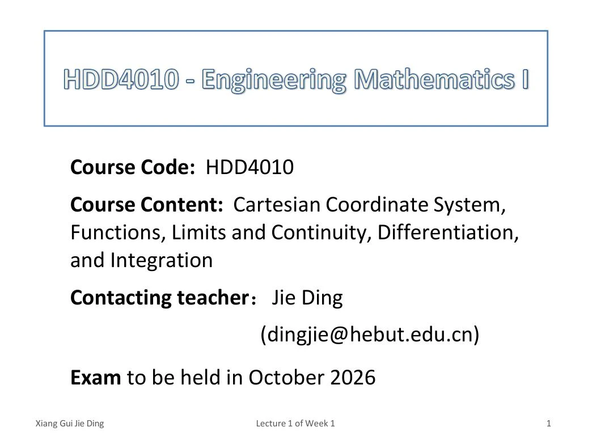
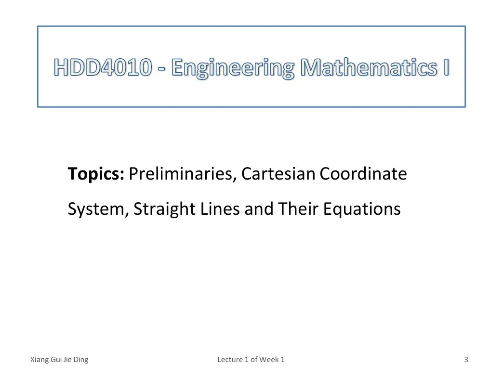

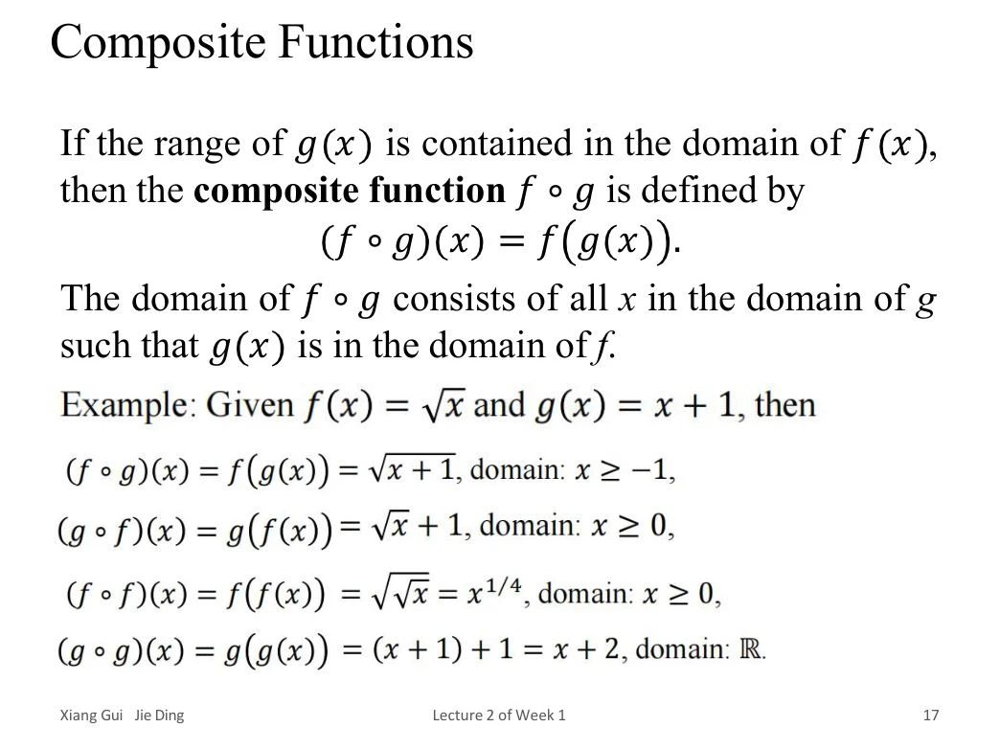


| English | 中文 | 说明 / 例句 |
|---|---|---|
| real number | 实数 | A number with a terminating or non-terminating decimal expansion. |
| real line | 实轴 | Every point on the line corresponds to exactly one real number; there are no holes. |
| rational number | 有理数 | A quotient p/q of integers; its decimal expansion terminates or repeats. |
| interval | 区间 | A subset of ℝ written with brackets; open endpoints use parentheses. |
| absolute value | 绝对值 | |x| is the distance from x to 0; |x − y| is the distance between x and y. |
| triangle inequality | 三角不等式 | |x ± y| ≤ |x| + |y|, proved by squaring both sides. |
| Cartesian coordinate system | 直角坐标系 | Two perpendicular axes meeting at the origin; points are ordered pairs (x, y). |
| quadrant | 象限 | The four regions I–IV cut out by the coordinate axes. |
| increment | 增量 | The net change Δx = x₂ − x₁ and Δy = y₂ − y₁. |
| slope | 斜率 | m = rise/run = Δy/Δx; undefined for a vertical line. |
| point-slope form | 点斜式 | y − y₁ = m(x − x₁) for a non-vertical line through (x₁, y₁). |
| conic section | 圆锥曲线 | Circle, parabola, ellipse and hyperbola, given by quadratic equations in x and y. |
| domain / range | 定义域 / 值域 | The set of admissible inputs / the set of attained outputs. |
| one-to-one function | 一一对应函数 | f(x₁) ≠ f(x₂) whenever x₁ ≠ x₂; checked by the horizontal line test. |
| composite function | 复合函数 | (f ∘ g)(x) = f(g(x)); its domain requires both x ∈ dom g and g(x) ∈ dom f. |
| division algorithm | 除法算法 | P/Q = S + R/Q with deg R < deg Q, obtained by long division. |
设 x = 2.0909…。循环节是 09，长度 2，故两边乘 10² = 100：100x = 209.0909…。
两式相减，无限循环部分抵消：100x − x = 209.0909… − 2.0909…，即 99x = 207。
所以 x = 207/99 = 23/11（分子分母同除以 9）。因为可以写成两整数之比，所以它是有理数。
方法迁移：循环节长 k 就乘 10^k；若小数点后有不循环的「前导部分」，先乘 10^m 把前导部分移到整数位，再乘 10^k，两次相减后解方程。
先提公因子：|3x − 6| = |3(x − 2)| = 3|x − 2|，不等式化为 3|x − 2| ≤ 3，即 |x − 2| ≤ 1。
几何读法：x 到 2 的距离不超过 1，故 2 − 1 ≤ x ≤ 2 + 1，即 1 ≤ x ≤ 3，写成区间 [1, 3]。
代数验算：由 |x| ≤ a ⟺ −a ≤ x ≤ a，得 −1 ≤ x − 2 ≤ 1，三边加 2 同样得 1 ≤ x ≤ 3。端点处 |3−6| = 3、|9−6| = 3 都取等号，所以是闭区间。
距离：Δx = 4 − (−2) = 6，Δy = −2 − 6 = −8，D = √(6² + (−8)²) = √100 = 10。
中点：x = (−2 + 4)/2 = 1，y = (6 − 2)/2 = 2，即 M(1, 2)。
斜率：m = (y₂ − y₁)/(x₂ − x₁) = (−8)/6 = −4/3。取 P₁ 写点斜式：y − 6 = −(4/3)(x + 2)，展开得 y = −(4/3)x + 10/3。
化为一般式：两边乘 3 得 3y = −4x + 10，即 4x + 3y = 10。验算：代 P₂(4, −2) 得 16 − 6 = 10，成立。
这条直线与坐标轴围成的三角形面积：x 截距 10/4 = 2.5、y 截距 10/3，面积 (1/2)(5/2)(10/3) = 25/6。
(a) 7π/6 = π + π/6，用诱导公式 sin(π + u) = −sin u（可由 sin(π − t) = sin t 与奇函数性质推出）：sin(7π/6) = −sin(π/6) = −1/2。
(b) 由平方关系 sin²t = 1 − cos²t = 1 − (3/5)² = 16/25。开方得 sin t = ±4/5；t 在第一象限，sin 为正，故 sin t = 4/5。
通用思路：先判断角落在哪个「参考角」上（把 t 化成 π/2 ± u、π ± u、2π − u 的形式）→ 用诱导公式把函数名与符号分离 → 再查特殊角表。
- 把
0.4̄5̄ = 0.4545…化成最简分数。 - 解不等式
|x − 1| ≥ 2，用区间表示解集。 - 求
f(x) = √(4 − x²) + 1/(x − 1)的定义域。 - 判断
g(x) = (x² − 1)/(x − 1)与h(x) = |x|的奇偶性（注意 g 的定义域）。 - 求圆
x² + y² − 4x + 6y − 3 = 0的圆心与半径。 - 把
x³ − 2x² + x − 3除以x − 2，写出商与余式；再把x³ + 1在实数范围内分解到不可再分。
答案与思路
1. 设 x = 0.4545…，乘 100 得 100x = 45.4545…，相减 99x = 45，故 x = 45/99 = 5/11。
2. |x − 1| ≥ 2 表示「到 1 的距离至少为 2」，故 x ≤ −1 或 x ≥ 3，即 (−∞, −1] ∪ [3, ∞)。注意 ≥ 对应「外侧」，与 ≤ 的「内侧区间」相反。
3. 两个条件：根号内 4 − x² ≥ 0 ⟹ −2 ≤ x ≤ 2；分母 x ≠ 1。取交集得 [−2, 1) ∪ (1, 2]。
4. g 的定义域是 x ≠ 1，不关于原点对称，因此既非奇也非偶（虽然化简后 g(x) = x + 1）。h(−x) = |−x| = |x| = h(x)，是偶函数。这道题说明：判奇偶必须先看定义域是否对称。
5. 配方：(x² − 4x + 4) + (y² + 6y + 9) = 3 + 4 + 9，即 (x−2)² + (y+3)² = 16。圆心 (2, −3)，半径 r = 4。
6. 长除法（或综合除法）：x³ − 2x² + x − 3 = (x − 2)(x² + 1) + (−1)，商 x² + 1，余式 −1。分解：x³ + 1 = (x+1)(x² − x + 1)，第二个因式判别式 −3 < 0，到此为止。
< 用圆括号、≤ 用方括号；无穷一侧永远圆括号。写成 [1, 3) 而正确答案是 [1, 3]，整题判错。(x²−1)/(x−1) = x+1 只在 x ≠ 1 时成立；这个「洞」是后续可去间断与极限讨论的关键，不能因为化简就把定义域改掉。c² = a² − b²，双曲线 c² = a² + b²，且双曲线渐近线是 y = ±(b/a)x 而不是 ±(a/b)x（a 在 x 项下面）。方法与清单
解含绝对值的不等式（四步）
- 把绝对值内部整理成
x − c的形式（提公因子），读出「到 c 的距离」 - 判断是「内侧」（
≤,<）还是「外侧」（≥,>） - 内侧写成
[c−a, c+a]型区间；外侧写成两段射线的并集 - 检查端点是否取到，回代验证一个端点值
求复合函数 f ∘ g 的定义域（三步）
- 写出 x 必须属于 dom g 的条件
- 写出
g(x)必须属于 dom f 的条件（这是最易漏的一步） - 两个条件取交集，并检查是否有分母为零、根号内为负的附加限制
求直线方程（四步）
- 先看是否竖直：两点 x 坐标相同则直接写
x = a - 否则算斜率
m = (y₂−y₁)/(x₂−x₁) - 任取一点写点斜式
y − y₁ = m(x − x₁) - 按题目要求整理成斜截式或一般式，并回代另一点验算
圆锥曲线判别（三步）
- 把方程整理成
Ax² + Cy² + Dx + Ey + F = 0（先确认没有 xy 项） - 看 A、C：相等且非零是圆；同号不等是椭圆；异号是双曲线；有一个为零是抛物线
- 对 x、y 分别配方，读出中心（或顶点）、半径 / 半轴，双曲线再写渐近线
| 源文件 | 页码 | 覆盖知识点 |
|---|---|---|
| General/General Course Information.html | p1 | 课程代码、教学安排、考试与计算器规则、公式表、参考书 |
| Topic 1/EMI_Week1_Lecture1.pdf | p1–p4 | 课程内容概览；微积分的两个现实原型（电池充电、里程表） |
| Topic 1/EMI_Week1_Lecture1.pdf | p5–p8 | 实数、实轴、不等式规则、ℕ/ℤ/ℚ/无理数、循环小数化分数 |
| Topic 1/EMI_Week1_Lecture1.pdf | p9–p11 | 有限区间与无穷区间的记号 |
| Topic 1/EMI_Week1_Lecture1.pdf | p12–p15 | 绝对值定义、性质、三角不等式证明、含绝对值方程与不等式 |
| Topic 1/EMI_Week1_Lecture1.pdf | p16–p22 | 直角坐标系、象限、增量、距离公式、中点公式与例题 |
| Topic 1/EMI_Week1_Lecture1.pdf | p23–p29 | 斜率与相似三角形、平行垂直条件、四种直线方程、过两点求直线 |
| Topic 1/EMI_Week1_Lecture2.pdf | p1–p8 | 圆与圆盘、抛物线（焦点准线）、椭圆、双曲线（渐近线） |
| Topic 1/EMI_Week1_Lecture2.pdf | p9–p12 | 函数定义、定义域值域、垂直线检验、一一对应与水平线检验 |
| Topic 1/EMI_Week1_Lecture2.pdf | p13–p19 | 奇偶函数、四则运算、复合函数及其定义域、分段函数 |
| Topic 1/EMI_Week1_Lecture2.pdf | p20–p32 | sgn 与 Heaviside 函数、多项式与次数、有理函数、除法算法、因式定理、求根公式与分解 |
| Topic 1/EMI_Week1_Lecture2.pdf | p33–p40 | 单位圆定义、弧度制、特殊角、周期性与奇偶性、诱导公式 |
| （跳过）Topic 1–7/*.html 与 _info/*.html | — | 均为 Moodle 登录页快照，除 General Course Information 外无可读正文 |
| （拓展） | — | 椭圆与双曲线标准方程的平方化简过程、A/C 符号判别表、循环小数的一般化方法为衔接性补充 |
第 1 章 · 极限与连续性
Limits of Functions and Continuity 第 1 章 函数、极限与连续性
本节定位
上一讲把函数画在坐标系里，这一讲开始追问：当自变量越来越靠近某点时，函数值往哪里跑？这个「往哪里跑」就是极限（limit）。整门课的两大运算都建在它上面——微分是差商的极限，积分是和式的极限，所以极限没学透，后面所有计算都会退化成「先代入再说」的错误套路。
本讲按两条线推进：第一条从具体问题（自由落体的瞬时速度、圆面积的多边形逼近）引出极限的 ε-δ 定义与运算法则；第二条把「靠近一个点」扩展为「靠近无穷」与「函数值无界」，得到渐近线的完整判据，最后用极限的语言重新定义连续性，并给出闭区间上连续函数的两个存在性定理。
学完本节你应当能够：
- 用 ε-δ 定义证明一个具体的一次函数极限
- 识别 0/0 型并通过对消、有理化把它化简后再求极限
- 用夹逼定理处理振荡因子（sin、cos）与无穷远问题
- 求有理函数在无穷远处的极限，并写出水平、竖直与斜渐近线
- 按三条件判断一点处的连续性，并给间断点分类
- 用介值定理证明方程在给定区间内有根
2.1 微积分的两个基本运算都来自极限
微积分描述量如何变化，靠两个基本运算：微分（differentiation）求函数的瞬时变化率，例如即时速度；积分（integration）由变化率反求函数，例如由速度求位移。两者都建立在同一个概念上：函数的极限。极限是代数与微积分之间的桥梁。
两个现实原型：手机电池的电量与充电功率（功率是电量对时间的变化率，电量是功率的累积）；汽车的速度表与里程表（速度表读瞬时速度，里程表读位移累积）。这两对关系正好对应微分与积分，而第 7 讲的微积分基本定理会把它们严格地连起来。
2.2 从平均速度到瞬时速度
实验表明，石块从静止自由下落，前 t 秒下落距离为 s(t) = 4.9t²（米）。在时间段 [t₁, t₂] 上的平均速度是位移增量除以时间增量：
v̄ = Δs/Δt = (s(t₂) − s(t₁))/(t₂ − t₁)。
(a) 前 2 秒的平均速度：(s(2) − s(0))/2 = 19.6/2 = 9.8 m/s。(b) 从 t = 1 到 t = 2：(19.6 − 4.9)/1 = 14.7 m/s。可见「平均」强烈依赖于所取的时间段。
要得到 t = 1 时刻的瞬时速度，取从 1 开始、长度 h 的时间段 [1, 1+h]：
Δs/Δh = (4.9(1+h)² − 4.9·1²)/h = 9.8 + 4.9h。
| h | 1 | 0.1 | 0.01 | 0.001 | 0.0001 |
|---|---|---|---|---|---|
Δs/Δh | 14.7 | 10.29 | 9.849 | 9.8049 | 9.80049 |
表格清楚地显示：h 越小，比值越靠近 9.8。于是把瞬时速度定义为平均速度当 h → 0 时的极限：
v(t) = lim_{h→0} (4.9(t+h)² − 4.9t²)/h = lim_{h→0} (9.8t + 4.9h) = 9.8t（m/s）。代入 t = 1 得 9.8 m/s，与表格一致。
2.3 圆面积：多边形逼近
半径为 r 的圆内接正 n 边形，其周长 pₙ 与面积 Aₙ 都小于圆的周长 C 与面积 A，但随 n 增大不断逼近。圆心角 ∠POQ = 2π/n，于是弦长 PQ = 2r sin(π/n)，O 到 PQ 的距离为 r cos(π/n)。
单个三角形面积 = (1/2)(2r sin(π/n))(r cos(π/n)) = r² sin(π/n) cos(π/n)，故
pₙ = 2rn sin(π/n)，Aₙ = n r² sin(π/n) cos(π/n) = (n/2) r² sin(2π/n)。
令 n → ∞，利用 lim_{θ→0} sin θ/θ = 1 与 cos(π/n) → 1：
lim pₙ = 2πr · lim [sin(π/n)/(π/n)] = 2πr = C，lim Aₙ = πr² · lim [sin(2π/n)/(2π/n)] · cos(π/n) = πr² = A。
这个例子说明：曲线围成的量可以被「越来越细的直线图形」逼近，逼近的精确含义就是极限。第 6 讲与第 7 讲把同一思想用在任意函数上，就得到定积分。
2.4 极限的 ε-δ 定义
称函数 f 在 x 趋于 a 时以 L 为极限，记 lim_{x→a} f(x) = L，如果：对每个 ε > 0，都存在 δ > 0，使得
0 < |x − a| < δ ⟹ |f(x) − L| < ε。
逐字读这句话：不管你把允许误差 ε 设得多小，我都能找到一个「挖去 a 点的小区间」，只要 x 落在这个区间里（且不等于 a），函数值就与 L 相差不到 ε。也就是说，f(x) 可以通过让 x 足够靠近 a 而任意接近 L。
三个细节必须记牢：① 0 < |x − a| 表示不考虑 x = a 本身，所以极限是否存在与 f(a) 是否有定义、取值多少完全无关；② δ 依赖于 ε（通常写成 δ = δ(ε)），不是固定常数；③ 定义只要求「存在这样的 δ」，不要求最大的 δ。
源文件例 1：证明 lim_{x→4} (3x − 1) = 11。取 f(x) = 3x − 1、a = 4、L = 11。对任意 ε > 0，需要找 δ 使 0 < |x − 4| < δ ⟹ |3x − 12| < ε。而 |3x − 12| = 3|x − 4|，所以只要 |x − 4| < ε/3 即可。于是取 δ = ε/3，条件即成立。
2.5 极限与函数在该点的值无关
源文件例 2：考察 f(x) = (x² − 1)/(x − 1) 在 x = 1 附近的行为。f 在 x = 1 无定义，但对 x ≠ 1 有
f(x) = (x−1)(x+1)/(x−1) = x + 1，故 lim_{x→1} f(x) = lim_{x→1}(x+1) = 2。
虽然 f(1) 不存在，极限却存在，并且等于 2。这个「洞」正是第 2.16 节「可去间断」的原型：只要补充定义 f(1) = 2，函数就在 1 处连续了。
2.6 单侧极限与双侧极限的存在性
左极限：lim_{x→a⁻} f(x)，只考虑 x < a；右极限：lim_{x→a⁺} f(x)，只考虑 x > a。核心结论：
lim_{x→a} f(x) = L ⟺ lim_{x→a⁻} f(x) = lim_{x→a⁺} f(x) = L。
源文件例子：sgn(x) 在 0 处，左极限 −1、右极限 1，两者不等，所以 lim_{x→0} sgn(x) 不存在。同理 |x|/x 在 0 处左右极限分别为 −1 与 1，极限不存在。
|·| 的表达式在零点；③ 含 √(x − a) 或 ln(x − a) 的表达式在端点（一侧根本没定义）。2.7 极限运算法则
设 lim_{x→a} f(x) = A、lim_{x→a} g(x) = B，c 为常数，则：
- 和差：
lim (f ± g) = A ± B - 乘积：
lim (fg) = AB - 常数倍：
lim (cf) = cA - 商：
lim (f/g) = A/B，要求B ≠ 0 - 幂：
lim f(x)^{m/n} = A^{m/n}，要求 n 为偶数时A > 0，且m/n < 0时A ≠ 0
这些法则对左极限、右极限同样成立。和法则的证明只需把定义套一遍：把 |(f+g) − (A+B)| 拆成 |f−A| + |g−B|，再用三角不等式，取两个 ε/2 对应的 δ 的较小者。
B = 0 时法则失效，必须回到 0/0 型的化简流程。幂法则在「偶次根 + 负底数」时会失效，例如 lim_{x→0} √(x²) 不能直接套用 √(A) 的形式，要小心符号。2.8 多项式与有理函数的极限
多项式在任意实数处都可以「直接代入」：lim_{x→a} P(x) = P(a)。例如 lim_{x→3}(2x² − 5x + 1) = 2·9 − 5·3 + 1 = 4——源文件此处把结果印成 10，按公式复算应为 4，属课件笔误。
有理函数在分母不为零处也直接代入：lim_{x→a} P(x)/Q(x) = P(a)/Q(a)（Q(a) ≠ 0）。唯一例外是 P(a) = Q(a) = 0，此时必须先化简表达式再取极限。
0/0 型的两条化简路径。① 因式分解后约去公因子；② 含根号时分子分母同乘共轭因式。源文件两个例子：
lim_{x→−2} (x² + x − 2)/(x² + 5x + 6)：两者在 −2 处都为 0。x²+x−2 = (x+2)(x−1)，x²+5x+6 = (x+2)(x+3)，约去 x+2 后得 lim (x−1)/(x+3) = (−3)/1 = −3。
lim_{x→4} (√x − 2)/(x² − 16)：同乘共轭 (√x + 2)，分子变成 x − 4，与分母的 x − 4 约去，得 lim 1/((x+4)(√x+2)) = 1/(8·4) = 1/32。
k/0（k ≠ 0）才是「不存在（趋于 ±∞）」。把 0/0 直接当作 0 或 1 是最常见的失分。2.9 夹逼定理
若在 a 的某个去心邻域内 g(x) ≤ f(x) ≤ h(x)，且 lim_{x→a} g(x) = lim_{x→a} h(x) = L，则 lim_{x→a} f(x) = L。直观上：f 被两条都往 L 收拢的曲线夹住，只能跟着去 L。
源文件例 3：f(x) = sin x / x（x ≠ 0），求 lim_{x→∞} f(x)。因为 −1 ≤ sin x ≤ 1，当 x > 0 时三边除以 x 得 −1/x ≤ sin x/x ≤ 1/x；两端极限都是 0，故 lim_{x→∞} sin x/x = 0。
源文件例：f(x) = x² sin(1/x)（x ≠ 0）。因为 −1 ≤ sin(1/x) ≤ 1，两边乘 x² ≥ 0 得 −x² ≤ x² sin(1/x) ≤ x²；两端都趋于 0，故 lim_{x→0} x² sin(1/x) = 0。注意这里不能用乘积法则，因为 lim sin(1/x) 不存在。
sin、cos 的变体），先去估计它的界，再用「有界 × 趋于 0」夹逼。这是 sin θ/θ → 1 证明的技术基础（第 3 讲）。2.10 极限不存在的两种典型
- 左右极限不等：
sgn(x)在 0 处（左 −1、右 1），|x|/x在 0 处 - 无限振荡：
sin(1/x)在 0 处，函数值在 −1 与 1 之间来回跳，不趋向任何单个 L
第三种情形是「趋于无穷」，严格说来极限也不存在（因为 ∞ 不是数），但为了描述方便，我们仍写成 lim = ∞，下一节专门处理。
2.11 无穷极限与竖直渐近线
若函数值可以任意大地变正（或变负），称它有无穷极限。lim_{x→0} 1/x² = ∞：从两侧靠近 0 时函数值都是正且无界增大，所以严格意义上极限不存在，但写成 ∞ 记录了「往哪个方向无界」这一信息。
相比之下 1/x 的两侧方向不同：lim_{x→0⁺} 1/x = ∞，lim_{x→0⁻} 1/x = −∞，所以 lim_{x→0} 1/x 既不是 ∞ 也不是 −∞，彻底不存在。
竖直渐近线：直线 x = a 是 y = f(x) 的竖直渐近线（vertical asymptote），只要下列之一成立：lim_{x→a⁻} f(x) = ±∞ 或 lim_{x→a⁺} f(x) = ±∞。注意「至少一侧」即可，不要求两侧同号。
2.12 无穷远处的极限与水平渐近线
lim_{x→∞} f(x) = L 表示 x 无限增大时 f(x) 任意接近 L；x → −∞ 同理。此时直线 y = L 是水平渐近线（horizontal asymptote）。关键细节：左右两侧可以有不同的水平渐近线。
源文件例子：f(x) = x/√(x² + 1)。把分子分母同除以 |x|（注意 √(x²) = |x|，不是 x）：
当 x > 0：f(x) = 1/√(1 + 1/x²) → 1；当 x < 0：f(x) = −1/√(1 + 1/x²) → −1。
所以 lim_{x→∞} f = 1、lim_{x→−∞} f = −1，右侧水平渐近线 y = 1，左侧 y = −1。
x → −∞ 时，把 √(x²) 写成 x 会让整个符号翻转，导致把 −1 算成 +1。正确做法是先写成 |x|，再按 x 的正负拆绝对值。2.13 有理化技巧：√(x² − x) − x
求 lim_{x→∞} (√(x² − x) − x)。直接看是 ∞ − ∞ 型，同乘共轭 (√(x²−x) + x)：
(x² − x − x²)/(√(x²−x) + x) = −x/(√(x²−x) + x)。分子分母同除以 x（此时 x > 0，√(x²−x)/x = √(1 − 1/x)）：
= −1/(√(1 − 1/x) + 1) → −1/2。
结论 −1/2 与源文件答案一致。这一步说明：∞ − ∞ 型不一定发散，同乘共轭后可能得到有限值。
2.14 多项式在无穷远处：最高次项主导
设 P(x) = aₙxⁿ + ⋯ + a₀（aₙ ≠ 0），把最高次项提出来：P(x) = aₙxⁿ(1 + aₙ₋₁/(aₙx) + ⋯ + a₀/(aₙxⁿ))。当 x → ±∞ 时括号里趋于 1，所以
lim_{x→±∞} P(x) = lim aₙxⁿ，符号由 aₙ 与 xⁿ 共同决定。
源文件例子：lim_{x→∞}(x³ − 5x² + 2) = ∞，lim_{x→−∞}(x³ − 5x² + 2) = −∞（首项 x³ 在负无穷处为负）；lim_{x→±∞}(−3x⁴ − x³ + x) = −∞（偶次首项且系数为负，两侧都是 −∞）。
2.15 有理函数在无穷远处与三条渐近线判据
设 f(x) = Pₘ(x)/Qₙ(x)，分子次数 m、分母次数 n，比较两者首项系数 aₘ、bₙ：
| 次数关系 | 极限 | 渐近线 |
|---|---|---|
m < n | lim_{x→±∞} f = 0 | 双侧水平渐近线 y = 0 |
m = n | lim f = aₘ/bₙ | 双侧水平渐近线 y = aₘ/bₙ |
m > n | lim f = ±∞ | 无水平渐近线 |
m = n + 1 | lim f = ±∞ | 双侧斜渐近线 y = ax + b |
m > n + 1 | lim f = ±∞ | 无渐近线（趋于更高次曲线） |
斜渐近线的求法：做多项式除法 P/Q = (ax + b) + R/Q，其中 deg R < n，于是 f(x) − (ax + b) = R/Q → 0，直线 y = ax + b 就是斜渐近线。
源文件三个例子：(a) lim_{x→±∞} (2x² + x)/(3x² − 7) = 2/3，水平渐近线 y = 2/3；(b) lim_{x→±∞} (5x − 9)/(2x³ + 3) = 0，水平渐近线 y = 0；(c) lim_{x→±∞} (x³ − x²)/(x² + 1)：除法得 = x − 1 + (1 − x)/(x² + 1)，故 x → ∞ 时趋于 ∞、x → −∞ 时趋于 −∞，斜渐近线 y = x − 1。
竖直渐近线：先把分子分母的公因子约掉，剩下的分母零点处就是竖直渐近线。例如 (2x² − 7x + 3)/(x² − 9) = (2x−1)(x−3)/((x−3)(x+3)) = (2x−1)/(x+3)（x ≠ 3），只有 x = −3 是竖直渐近线，x = 3 是「洞」；水平渐近线 y = 2；在 x → −3⁺ 时分子 2x−1 → −7、分母 → 0⁺，故极限为 −∞，而 x → −3⁻ 时为 +∞。
2.16 连续性的三条件与间断点分类
函数 f 在 x = c 处连续（continuous），当且仅当以下三条同时成立：① f(c) 有定义；② lim_{x→c} f(x) 存在；③ lim_{x→c} f(x) = f(c)。任一条不成立就叫在 c 处间断（discontinuous）。
源文件的四个图形正好对应四种失败方式：(a) f(c) 无定义；(b) 极限存在但不等于 f(c)（洞）；(c) 极限不存在（左右不等）；(d) 极限不存在且 f(c) 也无定义。
保连续运算：若 f、g 在 c 连续，则 f ± g、fg、kf、f/g（g(c) ≠ 0）、f^{m/n}（n 为偶数时要求 f(c) > 0）都在 c 连续。
复合的连续性：若 g 在 c 连续、f 在 g(c) 连续，则 f ∘ g 在 c 连续，且 lim_{x→c} f(g(x)) = f(lim_{x→c} g(x))。源文件例子：g(x) = x² + 1 在 −1 连续，f(u) = √u 在 g(−1) = 2 连续，故 √(x²+1) 在 −1 连续。
单侧连续：右连续指 lim_{x→c⁺} f(x) = f(c)，左连续指 lim_{x→c⁻} f(x) = f(c)；f 在 c 连续 ⟺ 既左连续又右连续。
源文件例子：Heaviside 函数 H(x) = 1（x ≥ 0）、0（x < 0）。lim_{x→0⁺} H = 1 = H(0)，故右连续；lim_{x→0⁻} H = 0 ≠ H(0)，故左不连续，因此 H 在 0 处不连续。
源文件分段例子：f(x) = x²（x ≤ 1）、2x − 1（x > 1），检查 x = 1：左极限 lim x² = 1，右极限 lim (2x−1) = 1，且 f(1) = 1，三者相等，故在 1 处连续。
间断点四分类（第一类：两个单侧极限都存在；第二类：至少一侧不存在）：
| 类型 | 特征 | 典型例子 |
|---|---|---|
| 可去 removable | 左右极限存在且相等，但 f(c) 无定义或不等 | (x²−1)/(x−1) 在 x = 1 |
| 跳跃 jump | 左右极限都存在但不相等 | sgn(x) 在 x = 0 |
| 无穷 infinite | 至少一侧极限为 ±∞（竖直渐近线） | 1/x 在 x = 0 |
| 振荡 oscillating | 极限不存在且不为无穷 | sin(1/x) 在 x = 0 |
2.17 区间上的连续性与两个存在性定理
函数在区间上连续指在区间内每点连续；对闭区间 [a, b]，还要求在左端点右连续、在右端点左连续。例如 √x 在 [0, ∞) 连续：在 0 处 lim_{x→0⁺} √x = 0 = √0（右连续），在每点 x₀ > 0 处 lim √x = √x₀。
常见连续函数：多项式（处处连续）；有理函数（在其定义域上连续）；有理幂 x^{m/n}（在定义域上）；六个三角函数（在定义域上，间断点只出现在分母为零处）；绝对值函数（处处连续）。
最值定理（Extreme Value Theorem，也叫 Max-Min Theorem）：若 f 在闭区间 [a, b] 上连续，则 f 在该区间上取到最大值 M 与最小值 m。三个条件缺一不可，源文件给了三个反例：
- 开区间
f(x) = x在(0, 1)：连续但无最大也无最小（端点被挖掉） - 不连续
f(x) = x（0 ≤ x < 1）、f(x) = 0（x = 1）：在[0, 1]上无最大值 - 无界区间
f(x) = 1/x在(0, 1]：连续但无最大值
介值定理（Intermediate Value Theorem）：若 f 在 [a, b] 上连续，k 介于 f(a) 与 f(b) 之间，则存在 c ∈ (a, b) 使 f(c) = k。几何上：连续曲线要从一个高度走到另一个高度，必须经过中间每个高度。
源文件应用：证明 x³ − x − 1 = 0 在 [1, 2] 内有解。令 f(x) = x³ − x − 1；f(1) = −1 < 0，f(2) = 5 > 0；f 处处连续，故在 [1, 2] 连续；由介值定理（取 k = 0），存在 c ∈ (1, 2) 使 f(c) = 0。
原版图页（源 PDF 插图页）

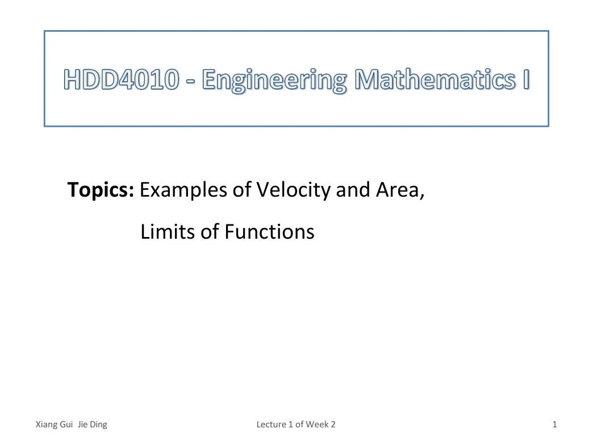

| English | 中文 | 说明 / 例句 |
|---|---|---|
| limit of a function | 函数极限 | lim_{x→a} f(x) = L if f(x) can be made arbitrarily close to L. |
| epsilon-delta definition | ε-δ 定义 | For every ε > 0 there is δ > 0 such that 0 < |x−a| < δ forces |f(x)−L| < ε. |
| difference quotient | 差商 | The average rate of change (f(x+h) − f(x))/h. |
| instantaneous velocity | 瞬时速度 | The limit of average velocity as the time interval shrinks to zero. |
| one-sided limit | 单侧极限 | Left and right limits; the two-sided limit exists iff they agree. |
| indeterminate form 0/0 | 0/0 未定式 | Substitution gives 0/0; simplify by factoring or rationalizing first. |
| rationalizing | 有理化 | Multiply by the conjugate to remove a square-root difference. |
| squeeze theorem | 夹逼定理 | If g ≤ f ≤ h and both bounds tend to L, then f tends to L. |
| infinite limit | 无穷极限 | Values grow without bound; ∞ is a description, not a number. |
| vertical asymptote | 竖直渐近线 | x = a where a one-sided limit is ±∞. |
| horizontal asymptote | 水平渐近线 | y = L where f(x) → L as x → ±∞. |
| oblique asymptote | 斜渐近线 | y = ax + b appearing when deg P = deg Q + 1. |
| continuity at a point | 点连续 | f(c) defined, the limit exists, and the two are equal. |
| removable discontinuity | 可去间断 | One-sided limits agree but f(c) is missing or mismatched. |
| intermediate value theorem | 介值定理 | A continuous function on [a, b] takes every value between f(a) and f(b). |
(a) (s(2) − s(0))/(2 − 0) = (19.6 − 0)/2 = 9.8 m/s。
(b) (s(2) − s(1))/(2 − 1) = (19.6 − 4.9)/1 = 14.7 m/s。两者不同，说明「平均」不能代表「瞬时」。
(c) 取区间 [1, 1+h]：Δs/Δh = (4.9(1+h)² − 4.9)/h = (9.8h + 4.9h²)/h = 9.8 + 4.9h。
表中 h = 1, 0.1, 0.01, 0.001, 0.0001 时比值依次为 14.7、10.29、9.849、9.8049、9.80049，趋于 9.8。
令 h → 0：lim (9.8 + 4.9h) = 9.8 m/s。一般地，v(t) = lim (4.9(t+h)² − 4.9t²)/h = 9.8t，即 v = gt（g = 9.8），与物理结论一致。
分析：要证对每个 ε > 0 存在 δ > 0，使 0 < |x − 4| < δ ⟹ |(3x−1) − 11| < ε。
化简目标不等式：|3x − 12| = 3|x − 4| < ε ⟺ |x − 4| < ε/3，可见 δ 应取 ε/3。
正式书写：任给 ε > 0，取 δ = ε/3。则当 0 < |x − 4| < δ 时，有 |(3x−1) − 11| = 3|x − 4| < 3δ = ε。由定义，lim_{x→4}(3x−1) = 11。
方法迁移：线性函数 f(x) = mx + b 的证明永远形如 |f(x) − L| = |m||x − a|，取 δ = ε/|m|。非线性情形需要先限制 δ ≤ 1 把 |x − a| 的因子估成常数，这属于后续课程内容。
(a) 代入 x = −2：分子 4 − 2 − 2 = 0，分母 4 − 10 + 6 = 0，是 0/0。分解：分子 (x+2)(x−1)，分母 (x+2)(x+3)。约去 x+2（x ≠ −2 时合法）：
lim (x−1)/(x+3) = (−2−1)/(−2+3) = −3。
(b) 代入 x = 4：√4 − 2 = 0、16 − 16 = 0，是 0/0。同乘共轭 (√x + 2)：
(√x − 2)(√x + 2)/((x−4)(x+4)(√x + 2)) = (x − 4)/((x−4)(x+4)(√x+2)) = 1/((x+4)(√x+2))。
代入 x = 4：1/(8 · 4) = 1/32。
分辨技巧：多项式型 0/0 先分解；含根号型 0/0 先乘共轭；两者都含根号且含多项式时，先有理化再分解。
(a) 是 ∞ − ∞ 型。同乘共轭：(x² − x − x²)/(√(x²−x) + x) = −x/(√(x²−x) + x)。分子分母同除 x（x > 0）：−1/(√(1 − 1/x) + 1) → −1/2。
(b) 次数 m = 3、n = 2，m = n + 1，故有斜渐近线。做除法：x³ − x² = (x − 1)(x² + 1) + (1 − x)，即 f(x) = x − 1 + (1 − x)/(x² + 1)。
因为 (1−x)/(x²+1) → 0，斜渐近线是 y = x − 1；且 lim_{x→∞} f = ∞、lim_{x→−∞} f = −∞。同时 x² + 1 > 0 无实零点，故没有竖直渐近线。
验算：取 x = 10，f(10) = 900/101 ≈ 8.91，而 x − 1 = 9，差 ≈ 0.09，随 x 增大而趋于 0，符合斜渐近线的定义。
- 求
lim_{x→3}(2x² − 5x + 1)。 - 求
lim_{x→−2}(x² + 4x + 4)/(x + 2)。 - 求
lim_{x→2}(1/(x + 2) + 1/(x² − 4))，并说明理由。 - 求
y = (2x² − 7x + 3)/(x² − 9)的全部渐近线，并写出x → −3⁺时的极限。 - 判断
f(x) = (x² − 4)/(x − 2)（x ≠ 2）、f(2) = 3在x = 2处是否连续；若不连续，指出类型并给出修补方式。 - 证明方程
x³ + x − 3 = 0在[1, 2]内至少有一个根。
答案与思路
1. 多项式直接代入：2·9 − 15 + 1 = 4。
2. 代入得 0/0。分子 (x+2)²，约去一个 x+2 后为 x+2，代入 −2 得 0。
3. x → 2 时第一项 → 1/4；第二项 1/(x²−4) = 1/((x−2)(x+2))，分母趋于 0 而分子为 1，故趋于 ±∞（右侧 +∞、左侧 −∞）。两项之和无界，故 极限不存在（属于无穷型间断）。
4. 分解：(2x−1)(x−3)/((x−3)(x+3)) = (2x−1)/(x+3)，x ≠ 3。水平渐近线 y = 2（次数相等，首项系数比 2/1）；竖直渐近线 x = −3（x = 3 是可去的洞）；无斜渐近线。x → −3⁺：分子 → −7，分母 → 0⁺，故极限 −∞。
5. lim_{x→2}(x²−4)/(x−2) = lim (x+2) = 4，但 f(2) = 3 ≠ 4，故不连续；属于可去间断。修补方式：把 f(2) 重新定义为 4。
6. 令 f(x) = x³ + x − 3，多项式故在 [1, 2] 连续；f(1) = −1 < 0，f(2) = 7 > 0；由介值定理存在 c ∈ (1, 2) 使 f(c) = 0。要点：必须写出「连续」「端点异号」「介值定理」三句话。
∞ − ∞ 就同乘共轭或通分，看到 0 · ∞ 就改写成分式；原样代入只会得到无意义的符号。x → −∞ 时符号必须翻转，否则 x/√(x²+1) 的左极限会被错算成 +1。x ≠ a 成立；该点要么是「洞」（可去间断），要么还要保留竖直渐近线，判断渐近线时必须先约分再找分母零点。方法与清单
求极限四步
- 直接代入：能算出有限值就结束（多项式、分母非零的有理函数）
- 判断类型：0/0 则分解或有理化；∞/∞ 则比较次数；∞−∞ 则共轭或通分；0·∞ 则改写成分式
- 含振荡因子（sin、cos）时改用夹逼定理，先写出界
- 分段点、含绝对值或根号端点处，分左右极限各自计算，再比较是否相等
求全部渐近线（三步）
- 先约去分子分母的公因子，剩下的分母零点给出竖直渐近线
- 比较分子分母次数：m < n 或 m = n 给水平渐近线；m = n + 1 做除法得斜渐近线
- 分别对 x → ±∞ 检查，两侧可以有不同的水平（或斜）渐近线
判断连续性并分类（三步）
- 算
f(c)：无定义则已可判定不连续（再看极限判断是可去、无穷还是振荡） - 算左右极限：都存在但不相等 → 跳跃；至少一侧为 ±∞ → 无穷；不存在且非无穷 → 振荡
- 左右极限相等但不等于
f(c)→ 可去，说明如何重新定义f(c)即可修补
| 源文件 | 页码 | 覆盖知识点 |
|---|---|---|
| Topic 2/EMI_Week2_Lecture1.pdf | p2 | 微分与积分的定义、极限作为共同基础 |
| Topic 2/EMI_Week2_Lecture1.pdf | p3–p7 | 平均速度、瞬时速度、差商与表格逼近、v = 9.8t 的推导 |
| Topic 2/EMI_Week2_Lecture1.pdf | p8–p10 | 内接正多边形逼近圆周长与圆面积 |
| Topic 2/EMI_Week2_Lecture1.pdf | p11–p14 | ε-δ 定义、lim(3x−1)=11 的证明、(x²−1)/(x−1) 的极限 |
| Topic 2/EMI_Week2_Lecture1.pdf | p15–p16 | 单侧极限、双侧极限存在性、sgn 在 0 处的极限 |
| Topic 2/EMI_Week2_Lecture1.pdf | p17–p21 | 极限四则与幂法则、多项式与有理函数、0/0 型的分解与有理化 |
| Topic 2/EMI_Week2_Lecture1.pdf | p22–p25 | 夹逼定理、sin x/x 在无穷处、x² sin(1/x) 在 0 处 |
| Topic 2/EMI_Week2_Lecture1.pdf | p26–p27 | 极限不存在的两类典型（单侧不等、无限振荡） |
| Topic 2/EMI_Week2_Lecture2.pdf | p2–p6 | 无穷极限、竖直渐近线、1/x² 与 1/x 的单双侧行为 |
| Topic 2/EMI_Week2_Lecture2.pdf | p7–p10 | 无穷远极限、水平渐近线、x/√(x²+1)、√(x²−x)−x 的有理化 |
| Topic 2/EMI_Week2_Lecture2.pdf | p11–p17 | 多项式最高次项主导、有理函数三类次数关系与斜渐近线 |
| Topic 2/EMI_Week2_Lecture2.pdf | p18–p19 | 渐近线总判据、(2x²−7x+3)/(x²−9) 的完整分析 |
| Topic 2/EMI_Week2_Lecture2.pdf | p20–p29 | 连续三条件、四个反例图、保连续运算、复合与单侧连续、分段检查、间断点分类、区间连续 |
| Topic 2/EMI_Week2_Lecture2.pdf | p30–p33 | 常见连续函数、最值定理三个反例、介值定理与 x³−x−1 的根 |
| （跳过）Topic 2/Lecture One.html、Lecture Two.html 与 _info/*.html | — | 均为 Moodle 登录页快照，无可读正文 |
| （拓展） | — | 把 0·∞ 与 ∞−∞ 的改写规则系统化、斜渐近线的除法判定为衔接性补充，源文件以例题形式出现 |
第 2 章 导数与微分 2 讲 章节页 →
第 2 章 · 导数定义与求导法则
Definition of the Derivative and Differentiation Rules 第 2 章 导数与微分
本节定位
上一讲用极限求出了瞬时速度，这一讲把这套动作抽象成一个新函数——导数（derivative）。核心只有一句话：导数就是切线斜率，而切线斜率是割线斜率当两点无限靠近时的极限。理解了这句话，后面所有求导公式都只是「把这个极限一次算完，以后直接查表」的产物。
本讲分两半：前半（Topic 3 第一次课）从几何出发，建立切线、法线、牛顿商、导数定义、微分与和差、常数倍、幂法则，并证明「可导必连续」；后半（第二次课）补齐乘积、倒数、商、链式四大法则与六个三角函数的导数，其中两个基本三角极限的证明是全部三角求导的地基。
学完本节你应当能够：
- 用差商极限求曲线在一点的切线方程与法线方程
- 用定义（而不是公式）求 x²、1/x、√x 的导数
- 写出导数的四种记号，并在一点处正确使用求值符号
- 熟练使用乘积、倒数、商、链式法则处理复合表达式
- 用面积夹逼证明 lim sin θ/θ = 1，并据此推出 sin、cos 的导数
- 识别竖直切线、尖点等「导数不存在」的几何形态
3.1 从「切线」这个词说起
欧几里得对圆的切线给过一个纯几何定义：与圆只交于一点（且不穿过）的直线叫圆的切线。这个定义对圆很好用，但对一般曲线立刻失效——例如抛物线的切线可能与曲线交于两点，拐点处的切线也可能再次穿过曲线。
所以微积分换了一个可操作的定义：切线是割线的极限位置。在曲线上取定点 P 与动点 Q，过两点的直线叫割线（secant line）；让 Q 沿曲线不断靠近 P，割线会绕 P 旋转并趋于一个极限位置，这个极限位置的直线就是 P 处的切线（tangent line）。
3.2 割线斜率与牛顿商
设 P(x₀, f(x₀))、Q(x₀ + Δx, f(x₀ + Δx))（Δx ≠ 0）。割线 PQ 的斜率为
tan φ = Δy/Δx = (f(x₀ + Δx) − f(x₀))/Δx。
这个表达式称为 f 在 x₀ 处的牛顿商（Newton quotient）或差商（difference quotient）。它有两个含义：几何上是割线斜率，物理上是区间上的平均变化率。Δx 可正可负（Q 在 P 右侧或左侧），不影响取极限的结果。
3.3 切线斜率：导数的几何定义
若 f 在 x₀ 连续，且极限
m = lim_{Δx→0} Δy/Δx = lim_{Δx→0} (f(x₀ + Δx) − f(x₀))/Δx
存在（有限），则过 P(x₀, f(x₀)) 且斜率为 m 的直线就是曲线在 P 处的切线；这个 m 就是 f 在 x₀ 处的（瞬时）变化率。
用 x 代替 x₀、把极限值当成一个新函数，就得到导数：
f′(x) = lim_{Δx→0} (f(x + Δx) − f(x))/Δx = lim_{h→0} (f(x + h) − f(x))/h，
前提是这个极限存在；存在时称 f 在 x 处可导（differentiable）。几何上 f′(x₀) 就是曲线 y = f(x) 在 x = x₀ 处切线的斜率。
3.4 切线方程与一个面积练习
已知切点 (a, f(a)) 与斜率 f′(a)，由点斜式立刻写出切线方程：
y = f(a) + f′(a)(x − a)。
源文件例子：求 y = x² 在 (1, 1) 处的切线。f(1) = 1，用定义求斜率：
lim_{Δx→0} ((1+Δx)² − 1)/Δx = lim (2Δx + Δx²)/Δx = lim (2 + Δx) = 2，
故切线为 y = 2(x − 1) + 1，即 y = 2x − 1。
源文件随后追问：这条切线与两坐标轴围成的三角形面积是多少？一般地，对 y = x² 在 (x₀, x₀²) 处，斜率 2x₀，切线 y = 2x₀x − x₀²。令 y = 0 得 x 截距 x₀/2；令 x = 0 得 y 截距 −x₀²。于是当 x₀ > 0 时三角形面积
A = (1/2)·(x₀/2)·(x₀²) = x₀³/4。代入 x₀ = 1 得 A = 1/4。
3.5 曲线在一点的斜率与法线
曲线 y = f(x) 在 x₀ 处的「斜率」就是该点切线的斜率（若存在）。例如 y = 1/x 在 x = 2：
lim_{Δx→0} (1/(2+Δx) − 1/2)/Δx = lim (−Δx)/(2(2+Δx)Δx) = lim −1/(2(2+Δx)) = −1/4。
法线（normal line）是过切点且与切线垂直的直线。若切线斜率 m ≠ 0，法线斜率为 −1/m；若切线水平（m = 0），法线竖直；若切线竖直，法线水平。
源文件例子：y = x² 在 (1, 1)，切线斜率 2，故法线斜率 −1/2，方程 y = −(1/2)(x − 1) + 1 = −x/2 + 3/2。
3.6 竖直切线与尖点：导数不存在的几何形态
若 f 在 x₀ 连续而差商的极限为 ±∞，则曲线在该点的切线是竖直线 x = x₀（斜率不存在，但切线存在）。若极限既不是有限值、也不是同号的 ±∞（例如左右两侧分别趋于 +∞ 与 −∞），则切线不存在。
源文件两个对比例子（都在 x = 0）：
f(x) = x^{1/3}：Δy/Δx = (Δx)^{1/3}/Δx = (Δx)^{-2/3} → +∞（两侧都是 +∞），故有竖直切线x = 0f(x) = x^{2/3}：Δy/Δx = (Δx)^{-1/3}，右极限+∞、左极限−∞，方向不一致，故没有切线，曲线在原点形成尖点（cusp）
x^{1/3} 在 0 处不可导（斜率不是有限数），但切线存在（竖直线）。答题时要区分「导数不存在」与「切线不存在」：前者可能是竖直切线，后者才是真正的几何断裂。3.7 导数的记号与求值符号
同一个导数有四种常见写法：
- Lagrange（撇号）：
f′(x)、y′——最简洁，适合写公式 - Leibniz：
dy/dx、df/dx——强调「y 对 x 的变化率」，链式法则里最方便 - Euler（算子）：
Df、D_x f——把求导看成作用在函数上的算子 - Newton（点号）：
ẏ——物理学中表示对时间求导
在一点 x = x₀ 处的取值可写成 f′(x₀)、y′|_{x=x₀}、dy/dx|_{x=x₀}、D_x y|_{x=x₀}，其中竖线 |_{x=x₀} 叫求值符号（evaluation symbol），含义是「先把导数算成含 x 的表达式，再把 x₀ 代入」。
x = x₀ 代进 f 再求导，得到的是常数（导数为 0），整题作废。3.8 微分
dx 表示 x 的一个（任意）改变量。对可导函数 y = f(x)，微分（differential）定义为
dy = f′(x) dx。
当 dx 很小时，dy 近似等于真实的改变量 Δy：Δy ≈ f′(x)Δx。这就是「用切线代替曲线」的线性近似，也是误差估计的基础。
源文件例子：y = x² 时 dy = 2x dx；y = 1/x 时 dy = −dx/x²。注意 dy/dx 因此可以真的当作「两个微分之商」来运算——这正是 Leibniz 记号好用的原因，链式法则 dy/dx = (dy/du)(du/dx) 看起来就像分数约分。
3.9 用定义求导三个基本例子
(a) f(x) = x²：f′(x) = lim ((x+Δx)² − x²)/Δx = lim (2xΔx + Δx²)/Δx = lim (2x + Δx) = 2x。
(b) f(x) = 1/x：f′(x) = lim (1/(x+Δx) − 1/x)/Δx = lim (−Δx)/(x(x+Δx)Δx) = lim −1/(x(x+Δx)) = −1/x²。
(c) f(x) = √x：同乘共轭 (√(x+Δx) + √x)，分子变为 Δx，与分母约去，得 f′(x) = lim 1/(√(x+Δx) + √x) = 1/(2√x)（x > 0）。
三个例子共用同一条流水线：写差商 → 展开或乘共轭 → 约掉分母的 Δx → 令 Δx → 0。这条流水线是「用定义求导」的唯一标准流程。
3.10 幂法则
对正整数 n，(xⁿ)′ = n xⁿ⁻¹。证明思路：由二项式展开
(x + Δx)ⁿ = xⁿ + n xⁿ⁻¹Δx + O(Δx²)，
其中 O(Δx)² 是「所有含 (Δx)²、…、(Δx)ⁿ 的项」的简写。代回差商，xⁿ 相消，剩下 n xⁿ⁻¹ + O(Δx)，令 Δx → 0 即得。这个法则对任意实数指数也成立（x^a，x > 0），第 5 讲会用对数求导重新证明。
3.11 可导必连续，但连续不一定可导
定理：若 f 在 x 处可导，则 f 在 x 处连续。证明只需一个变形：
lim_{Δx→0}(f(x+Δx) − f(x)) = lim_{Δx→0} [(f(x+Δx) − f(x))/Δx]·Δx = f′(x)·0 = 0。
所以 lim_{Δx→0} f(x+Δx) = f(x)，即连续。
逆命题不成立：f(x) = |x| 在 x = 0 连续，但左导数 −1、右导数 1，导数不存在。连续的曲线可以有「尖角」，尖角处没有切线斜率。
3.12 左导数、右导数与区间上的可导性
对定义在闭区间 [a, b] 上的函数：右导数 f′₊(a) = lim_{Δx→0⁺} (f(a+Δx) − f(a))/Δx，左导数 f′₋(b) = lim_{Δx→0⁻} (f(b+Δx) − f(b))/Δx。
称 f 在 [a, b] 上可导，如果 f′₊(a)、f′₋(b) 存在，且对每个内点 x ∈ (a, b) 都有 f′(x) 存在。
源文件用 f(x) = |x| 演练：f′₊(0) = lim_{Δx→0⁺} (|Δx| − 0)/Δx = 1，f′₋(0) = lim_{Δx→0⁻} (|Δx| − 0)/Δx = −1。两者不等，故 f′(0) 不存在。
3.13 基本导数表
| f(x) | f′(x) | 说明 |
|---|---|---|
c（常数） | 0 | 水平线斜率为 0 |
x | 1 | 斜率恒为 1 |
x² | 2x | 幂法则 n = 2 |
1/x | −1/x² | n = −1 |
√x | 1/(2√x) | n = 1/2 |
x^a | a x^{a−1} | 任意实数指数 |
这张表必须做到「看到就写」，因为后面所有法则都只是把这张表往外传播一层。
3.14 和、差与常数倍法则
若 f、g 在 x 可导，c 为常数，则 (f ± g)′(x) = f′(x) ± g′(x)，(cf)′(x) = c f′(x)。
和的证明只需把差商拆开：[(f+g)(x+Δx) − (f+g)(x)]/Δx = [(f(x+Δx) − f(x))/Δx] + [(g(x+Δx) − g(x))/Δx]，再对两项分别取极限。常数倍同理，把 c 提出来即可。
源文件任务：f(x) = x³ + 4x² − 5x − 9，逐项求导得 f′(x) = 3x² + 8x − 5；y = x⁴/8 − 2x^{5/2}，得 dy/dx = (1/2)x³ − 5x^{3/2}。
3.15 乘积法则
(fg)′(x) = f′(x)g(x) + f(x)g′(x)。
证明的关键是「加一项再减一项」：把差商写成
[f(x+Δx)g(x+Δx) − f(x+Δx)g(x) + f(x+Δx)g(x) − f(x)g(x)]/Δx，
前两项提出 f(x+Δx)、后两项提出 g(x)，分别取极限并用 f 的连续性（可导 ⇒ 连续），即得 f′g + fg′。
源文件例子：d/dx[(x² − 1)(x³ + 3)]。用乘积法则：2x(x³+3) + (x²−1)·3x² = 2x⁴ + 6x + 3x⁴ − 3x² = 5x⁴ − 3x² + 6x。若先展开再求导：(x⁵ − x³ + 3x² − 3)′ = 5x⁴ − 3x² + 6x，结果一致。
f′g′ = (2x)(3x²) = 6x³，与正确结果 5x⁴ − 3x² + 6x 完全不同。3.16 倒数法则
若 f 在 x 可导且 f(x) ≠ 0，则 (1/f)′(x) = −f′(x)/f(x)²。
证明：[1/f(x+Δx) − 1/f(x)]/Δx = [f(x) − f(x+Δx)]/[Δx·f(x+Δx)f(x)]，第一个因子趋于 −f′(x)，第二个因子趋于 1/f(x)²。
源文件任务：(a) d/dx[1/(x²+1)] = −2x/(x²+1)²；(b) 1/(x + 1/x) 先化简为 x/(x²+1)，再用商法则得 (1 − x²)/(x²+1)²。
3.17 商法则
若 f、g 在 x 可导且 g(x) ≠ 0，则
(f/g)′(x) = [f′(x)g(x) − f(x)g′(x)]/g(x)²。
证明：把 f/g 写成 f · (1/g)，用乘积法则与倒数法则：f′·(1/g) + f·(−g′/g²) = (f′g − fg′)/g²。
记忆口诀：「上导下不导，减去上不导下导，除以分母平方」。分子顺序不能颠倒，否则差一个负号。
源文件例子：y = (1 − x²)/(1 + x²)，y′ = [(−2x)(1+x²) − (1−x²)(2x)]/(1+x²)² = (−2x − 2x³ − 2x + 2x³)/(1+x²)² = −4x/(1+x²)²。
源文件法线例子：y = (x+1)/(x−1) 在 x = 2。y′ = [(x−1) − (x+1)]/(x−1)² = −2/(x−1)²，在 2 处为 −2；法线斜率 1/2；切点 (2, 3)；法线 y = (1/2)(x − 2) + 3 = x/2 + 2。
3.18 链式法则
若 g 在 x 可导、f 在 g(x) 可导，则复合函数 f ∘ g 在 x 可导，且
(f ∘ g)′(x) = f′(g(x))·g′(x)。
Leibniz 写法：若 y = f(u)、u = g(x)，则 dy/dx = (dy/du)·(du/dx)。
这条法则的作用是「由外向内逐层剥」：最外层求导（内层原样保留），乘以内层的导数，如此反复。例如 y = (6x − 7)⁵：外层是 u⁵，内层 u = 6x − 7，故 y′ = 5(6x−7)⁴ · 6 = 30(6x−7)⁴。
源文件任务：y = √(1 + x²)，外层 √u、内层 1 + x²，dy/dx = (1/(2√(1+x²)))·2x = x/√(1+x²)。
5(6x−7)⁴ 而不是 30(6x−7)⁴）；② 把复合的顺序弄反（f ∘ g 与 g ∘ f 的导数一般不同，源文件专门用一页强调「Not Commutative」）。逐层写清「外层是谁、内层是谁」再动笔。3.19 两个基本三角极限
一切三角函数的导数都依赖两个极限。第一个：lim_{θ→0} sin θ/θ = 1。
证明（面积夹逼，弧度制）：在单位圆中取 0 < θ < π/2，A(1, 0)、P(cos θ, sin θ)、T(1, tan θ)。比较三块面积：
三角形 OAP 面积 = (1/2)·1·sin θ = (1/2)sin θ；扇形 OAP 面积 = (1/2)·1²·θ = θ/2；三角形 OAT 面积 = (1/2)·1·tan θ = (1/2)tan θ。
由「三角形 ⊂ 扇形 ⊂ 三角形」，得 sin θ < θ < tan θ。三边同除以 sin θ > 0：1 < θ/sin θ < 1/cos θ；再取倒数（都为正，不等号反向）：cos θ < sin θ/θ < 1。令 θ → 0⁺，两端都趋于 1，由夹逼定理得右极限为 1。
对 −π/2 < θ < 0 用奇偶性：sin θ/θ = sin(−θ)/(−θ)，化为正角情形，故左极限也是 1，于是双侧极限为 1。
第二个：lim_{θ→0} (cos θ − 1)/θ = 0。用半角恒等式 cos θ − 1 = −2 sin²(θ/2)：
(cos θ − 1)/θ = −2 sin²(θ/2)/θ = −[sin(θ/2)/(θ/2)]·sin(θ/2) → −1·0 = 0。
sin 与 cos 的导数公式完全由它们推出，而 tan、sec、cot、csc 的导数又由 sin、cos 加商法则推出。所以整章三角求导只有这两个「根」。3.20 sin 与 cos 的导数
(sin x)′ = cos x。证明：用和角公式 sin(x + Δx) = sin x cos Δx + cos x sin Δx，
(sin(x+Δx) − sin x)/Δx = sin x·(cos Δx − 1)/Δx + cos x·(sin Δx/Δx) → sin x·0 + cos x·1 = cos x。
(cos x)′ = −sin x。证明：用余角恒等式 cos x = sin(π/2 − x) 与链式法则：
(cos x)′ = cos(π/2 − x)·(−1) = −sin x。
lim sin θ/θ = π/180，导数会多出一个常数因子。所有公式的正确性都以弧度制为前提，这也是本课一律使用弧度的原因。3.21 另外四个三角函数
定义与基本性质：
| 函数 | 定义 | 定义域 | 周期 | 奇偶性 |
|---|---|---|---|---|
tan x | sin x/cos x | x ≠ π/2 + kπ | π | 奇函数 |
cot x | cos x/sin x | x ≠ kπ | π | 奇函数 |
sec x | 1/cos x | x ≠ π/2 + kπ | 2π | 偶函数 |
csc x | 1/sin x | x ≠ kπ | 2π | 奇函数 |
四个导数（全部由 sin、cos 加商法则或倒数法则推出）：
(tan x)′ = sec²x：(cos·cos − sin·(−sin))/cos² = 1/cos²(cot x)′ = −csc²x：(−sin·sin − cos·cos)/sin² = −1/sin²(sec x)′ = sec x tan x：−(−sin)/cos² = sin/cos²(csc x)′ = −csc x cot x：−cos/sin²
连续性与可导性：sin、cos 处处连续；其余四个在其定义域内连续（间断只出现在分母为零处）；六个函数都在各自定义域内可导。例如 tan 在 x ≠ π/2 + kπ 处可导。
源文件的三角导数总表，建议按「谁求导变成谁」记：sin → cos → −sin → −cos → sin 四步循环；tan → sec²、sec → sec·tan、cot → −csc²、csc → −csc·cot。
原版图页（源 PDF 插图页）


| English | 中文 | 说明 / 例句 |
|---|---|---|
| tangent line | 切线 | The limiting position of secant lines through a fixed point. |
| secant line | 割线 | The line through two distinct points of a curve. |
| difference quotient | 差商（牛顿商） | (f(x+h) − f(x))/h, the slope of the secant and the average rate of change. |
| derivative | 导数 | f′(x) = lim_{h→0} (f(x+h) − f(x))/h; the slope of the tangent. |
| differentiable | 可导 | The derivative exists at that point; differentiability implies continuity. |
| normal line | 法线 | The line through the point perpendicular to the tangent; slope −1/m. |
| vertical tangent | 竖直切线 | The difference quotient tends to ±∞ in the same direction; x = a. |
| cusp | 尖点 | One-sided slopes tend to +∞ and −∞, so no tangent exists. |
| differential | 微分 | dy = f′(x)dx, the linear approximation of the actual change Δy. |
| power rule | 幂法则 | (xⁿ)′ = n xⁿ⁻¹, valid for all real exponents. |
| product rule | 乘积法则 | (fg)′ = f′g + fg′; never f′g′. |
| reciprocal rule | 倒数法则 | (1/f)′ = −f′/f². |
| quotient rule | 商法则 | (f/g)′ = (f′g − fg′)/g². |
| chain rule | 链式法则 | (f∘g)′ = f′(g(x))g′(x), or dy/dx = (dy/du)(du/dx). |
| fundamental trig limit | 基本三角极限 | lim_{θ→0} sin θ/θ = 1 and lim_{θ→0}(cos θ − 1)/θ = 0. |
| evaluation symbol | 求值符号 | The bar |_{x=a} meaning substitute x = a after differentiating. |
斜率：用定义，m = lim_{Δx→0} ((1+Δx)² − 1)/Δx = lim (2Δx + Δx²)/Δx = lim (2 + Δx) = 2。
切线：y = f(1) + f′(1)(x − 1) = 1 + 2(x − 1) = 2x − 1。
截距：令 y = 0 得 x = 1/2；令 x = 0 得 y = −1。
面积：A = (1/2)·|1/2|·|−1| = 1/4。
一般化：切点 (x₀, x₀²) 时切线为 y = 2x₀x − x₀²，截距 x₀/2 与 −x₀²，面积 x₀³/4。这个结论在填空题里常直接考。
(a) ((x+Δx)² − x²)/Δx = (2xΔx + (Δx)²)/Δx = 2x + Δx → 2x。
(b) (1/(x+Δx) − 1/x)/Δx = ((x − (x+Δx))/(x(x+Δx)))/Δx = −1/(x(x+Δx)) → −1/x²。
(c) 同乘共轭：(√(x+Δx) − √x)/Δx = Δx/(Δx(√(x+Δx) + √x)) = 1/(√(x+Δx) + √x) → 1/(2√x)。
统一视角：三题都在做同一件事——把差商化成「分母不含 Δx」的形式。①整式展开约分；②分式通分约分；③根式乘共轭。这三招覆盖了定义法求导的全部初等情形。
方法 1（乘积法则）：2x(x³ + 3) + (x² − 1)(3x²) = 2x⁴ + 6x + 3x⁴ − 3x² = 5x⁴ − 3x² + 6x。
方法 2（先展开）：(x² − 1)(x³ + 3) = x⁵ − x³ + 3x² − 3，逐项求导得 5x⁴ − 3x² + 6x。
两法一致。当因式较多或次数较高时，乘积法则明显更快；当因式简单（如一次乘一次）时，展开反而省事。判断标准：展开后项数是否可控。
反例警示：若误写 (fg)′ = f′g′ = 6x³，与正确答案相差极大，代 x = 1 检验：正确值 5 − 3 + 6 = 8，错误值 6，立刻暴露。
(a) 外层 √u 的导数为 1/(2√u)，内层 u = 1 + x² 的导数为 2x：dy/dx = 1/(2√(1+x²))·2x = x/√(1+x²)。
(b) 外层 u⁵ → 5u⁴，内层 6x − 7 → 6：y′ = 5(6x−7)⁴·6 = 30(6x−7)⁴。
(c) 乘积法则 + 链式法则：y′ = 2x·sin x + x²·cos x。这里 sin x 的内层是 x（导数为 1），所以看不出链式法则的痕迹，但写全应是 2x sin x + x²·cos x·1。
检查方法：把结果在特殊点代值。例如 (a) 在 x = 0 处 y′ = 0（曲线 √(1+x²) 在 0 处有水平切线），与公式一致。
- 求
y = 1/x在x = 2处的切线方程与法线方程。 - 求
y = x³在(1, 1)处的法线方程。 - 用定义求
f(x) = x³的导数。 - 求导数：
f(x) = x³ + 4x² − 5x − 9；y = x⁴/8 − 2x^{5/2}。 - 求导数：
1/(x² + 1)；x/(x² + 1)；(1 − x²)/(1 + x²)。 - 求导数：
y = sin(3x)cos x；y = tan(2x)；y = sec(1 − x²)。
答案与思路
1. y′ = −1/x²，在 2 处斜率 −1/4，切点 (2, 1/2)；切线 y = −(1/4)(x − 2) + 1/2 = −x/4 + 1；法线斜率 4，y = 4(x − 2) + 1/2 = 4x − 15/2。
2. y′ = 3x²，在 1 处斜率 3，法线斜率 −1/3；y = −(1/3)(x − 1) + 1 = −x/3 + 4/3。
3. ((x+Δx)³ − x³)/Δx = (3x²Δx + 3x(Δx)² + (Δx)³)/Δx = 3x² + 3xΔx + (Δx)² → 3x²。
4. f′(x) = 3x² + 8x − 5；dy/dx = (1/2)x³ − 5x^{3/2}（把 x⁴/8 看成 (1/8)x⁴，导数 (4/8)x³）。
5. −2x/(x²+1)²（倒数法则）；x/(x²+1) 用商法则得 (1 − x²)/(x²+1)²；(1−x²)/(1+x²) 用商法则得 −4x/(1+x²)²。注意后两题结构相似但结果不同，代 x = 0 检验：前者为 1、后者为 0。
6. 3cos3x·cos x − sin3x·sin x（乘积法则 + 链式法则）；2sec²(2x)；−2x sec(1−x²)tan(1−x²)。
|x| 在 0 处）；⑤竖直切线、尖点的判定。(6x−7)⁵ 的导数时漏掉 6 是最常见的失分。f′g − fg′；写成 fg′ − f′g 会整体差一个负号。(fg)′ 当成 f′g′，或把 (f/g)′ 当成 f′/g′。用具体数字代值检验（如 x = 1）能立刻发现。sin → cos → −sin → −cos（四阶循环）与 tan → sec²、sec → sec·tan（另一条）。考场上推导太慢，记忆更可靠。方法与清单
用定义求导（四步）
- 写出差商
(f(x+Δx) − f(x))/Δx，先不要代 Δx = 0 - 按结构变形：整式展开、分式通分、根式乘共轭
- 约去分母中的 Δx（这是关键一步）
- 令
Δx → 0，把结果整理成标准形式并注明定义域
写切线/法线方程（三步）
- 求切点纵坐标
f(a)与斜率f′(a)（不可导处先判定切线是否存在） - 切线：
y = f(a) + f′(a)(x − a)；法线斜率取−1/f′(a)（f′(a) = 0 时法线竖直） - 按题目要求整理形式，并用「法线过切点」回代验算
复合函数求导（由外向内）
- 把表达式拆成「外层函数 + 内层函数」两层，必要时多拆几层
- 外层求导，内层原样保留
- 乘以内层导数；若有三层，继续对内层重复第 2、3 步
- 化简并用特殊点代值检查（如 x = 0、x = 1）
| 源文件 | 页码 | 覆盖知识点 |
|---|---|---|
| Topic 3/EMI_Week3_Lecture1.pdf | p2 | 欧几里得的圆切线定义及其局限 |
| Topic 3/EMI_Week3_Lecture1.pdf | p3–p6 | 割线、平均变化率、牛顿商、切线作为割线极限 |
| Topic 3/EMI_Week3_Lecture1.pdf | p7–p12 | 切线方程、y = x² 在 (1,1) 的切线、切线与坐标轴围三角形面积 |
| Topic 3/EMI_Week3_Lecture1.pdf | p13–p15 | 曲线在一点的斜率、1/x 在 x = 2 的斜率、法线及其方程 |
| Topic 3/EMI_Week3_Lecture1.pdf | p16–p18 | 竖直切线（x^{1/3}）与尖点（x^{2/3}） |
| Topic 3/EMI_Week3_Lecture1.pdf | p19–p23 | 导数定义、四种记号、求值符号、微分 dy = f′(x)dx |
| Topic 3/EMI_Week3_Lecture1.pdf | p24–p26 | 用定义求 x²、1/x、√x 的导数、幂法则与 O(Δx)² 记号 |
| Topic 3/EMI_Week3_Lecture1.pdf | p27–p29 | 可导 ⇒ 连续、逆不真、左右导数、|x| 在 0 处不可导 |
| Topic 3/EMI_Week3_Lecture1.pdf | p30–p32 | 基本导数表、和差与常数倍法则及其证明、两道求导任务 |
| Topic 3/EMI_Week3_Lecture2.pdf | p2–p4 | 乘积法则证明与 (x²−1)(x³+3) 的双解法 |
| Topic 3/EMI_Week3_Lecture2.pdf | p5–p6 | 倒数法则及 1/(x²+1)、1/(x+1/x) |
| Topic 3/EMI_Week3_Lecture2.pdf | p7–p10 | 商法则、两个商法则任务、(x+1)/(x−1) 的法线 |
| Topic 3/EMI_Week3_Lecture2.pdf | p11–p16 | 链式法则、Leibniz 写法、复合不可交换、两道链式任务 |
| Topic 3/EMI_Week3_Lecture2.pdf | p17–p23 | sin θ/θ = 1 的面积夹逼证明、(cosθ−1)/θ = 0、sin 与 cos 的导数 |
| Topic 3/EMI_Week3_Lecture2.pdf | p24–p31 | tan/sec/cot/csc 的定义域周期奇偶、四个导数推导与总表、连续可导性 |
| （跳过）Topic 3/Lecture One.html、Lecture Two.html | — | 登录页快照；p8–p10、p12、p15、p18 等为纯图形页，按相邻文字复原 |
| （拓展） | — | 「切线与坐标轴围成三角形面积」的一般公式 x₀³/4、切线与法线截距的通用套路为补充；源文件以单题形式出现 |
第 2 章 · 高阶导数、中值定理、极值与隐函数
Higher-Order Derivatives, Mean-Value Theorem, Extrema and Implicit Differentiation 第 2 章 导数与微分
本节定位
第 3 讲建立了导数并给出了求导法则，本讲把导数用到三件具体事情上：① 连续求导得到高阶导数，用来描述「变化率的变化率」（加速度、凹凸性）；② 用中值定理把「一点的导数」与「区间上的整体行为」连起来，从而判断单调性；③ 通过求导反过来找函数（原函数与初值问题），为第 7 讲的积分做准备。
本讲还包含两个技术上非常重要的工具：隐函数求导（方程不解出 y 也能求 y′）与极值判定（临界点 + 闭区间端点）。这两项在模拟卷中直接出现（见第 5 章），必须练到能默写流程。
学完本节你应当能够：
- 写出并计算二阶以上的高阶导数，包括 xⁿ、1/(1+x)、sin、cos 的一般公式
- 由位置函数读出速度、速率与加速度，并判断加速还是减速
- 陈述并应用拉格朗日中值定理与罗尔定理，并用一阶、二阶导数判定单调区间、凹凸与拐点，证明简单不等式
- 求闭区间上连续函数的最值（临界点 + 端点比较）
- 对隐式方程求一阶与二阶导数，并写出切线方程
- 求不定积分并用初始条件定出特解（一阶与二阶初值问题）
4.1 高阶导数
导数是函数，所以可以再求导。二阶导数记作 f″(x)、y″、d²y/dx²，定义为 f″ = (f′)′。更高阶依次类推，n 阶导数记作 f⁽ⁿ⁾(x)、dⁿy/dxⁿ，并约定 f⁽⁰⁾ = f。
记号警告：d²y/dx² 是整体记号，表示「对 y 求两次关于 x 的导数」，不是 (dy)²/(dx)² 这样的分数；但它在链式法则与代换中又能像分数一样运算（第 7 讲换元积分会用到）。
4.2 xⁿ 与多项式的 n 阶导数
对 f(x) = xⁿ（n 为正整数），逐次求导：
f⁽ᵏ⁾(x) = n(n−1)(n−2)⋯(n−k+1) x^{n−k} = n!/(n−k)! · x^{n−k}（0 ≤ k ≤ n），
当 k > n 时 f⁽ᵏ⁾ = 0。这里的阶乘定义为 n! = n(n−1)⋯3·2·1（n ≥ 1），并规定 0! = 1。
对一般多项式 P(x) = aₙxⁿ + ⋯ + a₁x + a₀（aₙ ≠ 0），由线性性可得
P⁽ᵏ⁾(x) = aₙ · n!/(n−k)! · x^{n−k} + ⋯（k ≤ n），特别地 P⁽ⁿ⁾(x) = n! aₙ——一个常数，再求导就是 0。这条结论是后面泰勒展开的理论基础（本课只需知道）。
4.3 运动学：位置、速度、速率、加速度
设质点沿 x 轴运动，位置为 x(t)（t 为时间）：
- 速度
v(t) = x′(t)，是位置的变化率； - 速率（speed）
= |v(t)|，是标量，没有方向； - 加速度
a(t) = v′(t) = x″(t)，是速度的变化率。
速度符号的读法：v > 0 向正方向（右）运动；v < 0 向负方向（左）运动；v = 0 瞬时静止（此时 x(t) 处于临界点）。
加速还是减速的判据：看 v 与 a 的符号是否相同。同号则速率增大（加速），异号则速率减小（减速），与 v 本身的正负无关。这一点比「a > 0 就是加速」准确得多，也是模拟卷的考点。
源文件例子：x(t) = t³ − 6t²，则 v(t) = 3t² − 12t，a(t) = 6t − 12。在 t = 3：x(3) = 27 − 54 = −27（原点左侧 27 m），v(3) = 27 − 36 = −9（向左 9 m/s），a(3) = 6（加速度 +6 m/s²，方向向右，故在减速）。源文件此处把 v 的值印成 −9 却把时间标成 1，属排版错位，按 v(3) = −9 理解。）
源文件任务：x(t) = 2t³ − 15t² + 24t，求 v、a，并判断 t = 2 时的运动方向与速率。
v = 6t² − 30t + 24，a = 12t − 30；v(2) = 24 − 60 + 24 = −12，a(2) = 24 − 30 = −6。v 与 a 同号（都为负），故速率在增大：向左运动，速率为 12 m/s 且越来越快。
4.4 一阶与二阶导数的几何意义
| 导数 | 几何含义 | 判断信息 |
|---|---|---|
f′(x) | 切线斜率，瞬时变化率 | f′ > 0 递增；f′ < 0 递减；f′ = 0 驻点 |
f″(x) | 斜率的变化率（弯曲程度） | f″ > 0 凹向上；f″ < 0 凹向下；变号处为拐点 |
源文件两个对照例子：f(x) = x²：f′ = 2x（x < 0 递减、x = 0 驻点、x > 0 递增），f″ = 2 > 0（处处凹向上）。f(x) = x³：f′ = 3x²（除 0 外都递增，x = 0 处驻点但不改变单调性），f″ = 6x（x < 0 凹向下、x > 0 凹向上，x = 0 是拐点）。
x³ 在 0 处 f′ = 0，但函数在那里既不是极大也不是极小——它是「驻而不极」的拐点。判断极值必须看 f′ 在该点两侧是否变号。4.5 三角函数与 1/(1+x) 的高阶导数
sin 与 cos 的导数四步一循环：
sin → cos → −sin → −cos → sin，
用「位移形式」可以把循环写成一个公式：
(sin x)⁽ⁿ⁾ = sin(x + nπ/2)，(cos x)⁽ⁿ⁾ = cos(x + nπ/2)，
并且 f⁽ⁿ⁺⁴⁾ = f⁽ⁿ⁾（周期为 4）。验证：n = 1 时 sin(x + π/2) = cos x ✓；n = 2 时 sin(x + π) = −sin x ✓。
源文件例 1：y = cos 2x 的四阶导数。链式法则每求一次多一个因子 2：y′ = −2sin2x、y″ = −4cos2x、y‴ = 8sin2x、y⁗ = 16cos2x = 2⁴cos2x。
源文件例 2：y = 1/(1+x) = (1+x)⁻¹ 的 n 阶导数。逐次计算：y′ = −(1+x)⁻²、y″ = 2(1+x)⁻³、y‴ = −3!(1+x)⁻⁴、y⁗ = 4!(1+x)⁻⁵，归纳出
y⁽ⁿ⁾ = (−1)ⁿ n! (1+x)^{−n−1}（n ≥ 1）。
归纳法验证：假设 n = k 成立，则求导一次得 (−1)ᵏk!(−k−1)(1+x)^{−k−2} = (−1)^{k+1}(k+1)!(1+x)^{−(k+1)−1}，正是公式对 k+1 的预测；又 n = 1 已验证，故对所有正整数成立。源文件把这一步写成「if the formula is correct for n = k, then it is also correct for n = k+1」，这就是数学归纳法的标准句式。
4.6 中值定理
源文件的引入故事：从 Lahti 到 Lappeenranta 全程 150 mile，用了 2 小时，则途中必有某一时刻的瞬时速度恰好等于平均速度 75 mph。这就是中值定理的现实版本。
拉格朗日中值定理（Mean-Value Theorem, MVT）：若 f 在闭区间 [a, b] 上连续、在开区间 (a, b) 内可导，则存在 c ∈ (a, b) 使
f′(c) = (f(b) − f(a))/(b − a)。
几何意义：曲线上必有一点的切线与连接两端点的割线平行。源文件给出的证明思想很直观：把一条与割线平行的虚线从下方往上平移，第一次接触曲线时的那条线就是切线，切点就是 c；也可以从上方往下移。严格证明需要构造辅助函数 h(x) = f(x) − f(a) − [(f(b)−f(a))/(b−a)](x − a)，验证 h(a) = h(b) = 0，再用罗尔定理。
三个条件缺一不可：闭区间连续、开区间可导（端点可不导）、以及区间有限。f(x) = |x| 在 [−1, 1] 上不满足「开区间可导」，定理结论确实失效（找不到斜率为 0 的点，因为割线斜率就是 0 而 f′ 从不取 0）。
4.7 罗尔定理
罗尔定理（Rolle’s Theorem）：若 f 在 [a, b] 上连续、在 (a, b) 内可导，且 f(a) = f(b)，则存在 c ∈ (a, b) 使 f′(c) = 0。
它是 MVT 在 f(a) = f(b) 时的特例（此时割线斜率为 0）。反过来，MVT 的严格证明又依赖于罗尔定理，两者是同一件事的两种形态。
4.8 由 MVT 得到单调性判据
设 f 在区间 I 上连续、在内部可导，则：
f′(x) > 0对一切内点成立 ⟹ f 在 I 上严格递增；f′(x) < 0⟹ 严格递减；f′(x) ≥ 0⟹ 不减（nondecreasing）；f′(x) ≤ 0⟹ 不增；f′(x) = 0恒成立 ⟹ f 为常数。
证明（以递增为例）：任取 x₁ < x₂，在 [x₁, x₂] 上用 MVT，得 f(x₂) − f(x₁) = (x₂ − x₁)f′(c)，其中 c ∈ (x₁, x₂)。因为 x₂ − x₁ > 0 且 f′(c) > 0，所以 f(x₂) > f(x₁)。
f(x) = x³ 在 ℝ 上严格递增，但 f′(0) = 0。所以「严格递增 ⟹ f′ > 0 处处成立」是错的，只能说 f′ ≥ 0。答题时若题目要求「证明递增」，用 f′ > 0 是充分条件；若题目说「已知递增」，不能推出 f′ > 0。4.9 用 MVT 证明不等式
源文件例子：证明 √(1+x) ≤ 1 + x/2 对 x ≥ −1 成立。令 f(x) = √(1+x)，在 [−1, ∞) 连续、在 (−1, ∞) 可导，f′(x) = 1/(2√(1+x))。分三种情形：
- x > 0：在
[0, x]上用 MVT，存在c ∈ (0, x)使(√(1+x) − 1)/x = 1/(2√(1+c)) < 1/2，两边乘x > 0得√(1+x) − 1 < x/2； - −1 < x < 0：在
[x, 0]上用 MVT，存在c ∈ (x, 0)使(1 − √(1+x))/(−x) = 1/(2√(1+c)) < 1/2，注意此处乘的是负数x < 0，不等号方向要翻转，仍得√(1+x) − 1 < x/2； - x = 0：两边都等于 1，取等号。
合并三种情形即得 √(1+x) ≤ 1 + x/2。注意 x = −1 时左边为 0、右边为 1/2，不等式仍成立（端点单独检查）。
4.10 极值：定义、临界点与求法
设 c 在 f 的定义域 D 内：f(c) 是绝对最大值（absolute maximum），若对一切 x ∈ D 有 f(x) ≤ f(c)；绝对最小值类似（f(x) ≥ f(c)）。f(c) 是局部最大值（local maximum），若存在含 c 的开区间使该区间内 f(x) ≤ f(c)；局部最小类似。
源文件的图形例子（[a, b] 上的一条曲线）说明：绝对最大在 x₅、绝对最小在 a；局部最大出现在 x₁、x₃、x₅、x₇，局部最小在 x₂、x₄、x₆；而 [x₆, x₇] 上函数为常数，那段区间内每一点既是局部最大又是局部最小。这说明极值点不一定唯一，也不一定孤立。
临界点（critical point）：若 c 是定义域的内点且 f′(c) = 0 或 f′(c) 不存在，则 (c, f(c)) 是临界点。临界点可能是绝对极值、局部极值，也可能什么都不是（如 x³ 的 0）。
闭区间上求最值的完整流程：① 求 f′；② 找出 (a, b) 内所有 f′ = 0 与 f′ 不存在的点；③ 计算这些点与两个端点 a、b 的函数值；④ 取最大者与最小者。端点必须参与比较，这是最容易被忽略的一步。
源文件例：f(x) = x³ − 12x + 1。f′ = 3x² − 12 = 3(x−2)(x+2)，临界点 x = ±2。符号表：(−∞, −2) 上 f′ > 0；(−2, 2) 上 f′ < 0；(2, ∞) 上 f′ > 0。故 x = −2 是局部最大（f(−2) = 17），x = 2 是局部最小（f(2) = −15）。又因 x → ±∞ 时 f → ±∞，函数无绝对极值。
源文件任务：f(x) = 12x − x³ 在 [−3, 1] 上。f′ = 12 − 3x² = 0 得 x = ±2，只有 x = −2 在区间内。比较 f(−3) = −36 + 27 = −9、f(−2) = −24 + 8 = −16、f(1) = 12 − 1 = 11，故绝对最小 −16（在 x = −2），绝对最大 11（在 x = 1）。
4.11 隐函数求导
曲线通常是方程 F(x, y) = 0 的图形，例如 x² + y² − 25 = 0。有时能解出 y = f(x)（显函数），有时解不出，但方程仍然在局部确定了一个或多个隐函数（implicit function）y = y(x)。
隐函数求导的步骤：把方程两边对 x 求导，过程中把 y 看成 x 的函数并随时使用链式法则（d/dx[y²] = 2y·y′、d/dx[sin y] = cos y·y′），然后解出 y′。
源文件例：圆 x² + y² = 25 在 (3, −4) 处的斜率。两边求导：2x + 2y y′ = 0，故 y′ = −x/y。代入 (3, −4)：y′ = −3/(−4) = 3/4。
源文件例：y sin y = x³ + cos x。左边用乘积法则 + 链式法则：y′ sin y + y cos y·y′；右边：3x² − sin x。整理得
y′ = (3x² − sin x)/(sin y + y cos y)。
源文件例：x² + xy + 2y³ = 4 在 (−2, 1) 的切线。先验证点在曲线上：4 + (−2) + 2 = 4 ✓。求导：2x + y + x y′ + 6y² y′ = 0。代入 x = −2, y = 1：−4 + 1 − 2y′ + 6y′ = 0，即 4y′ = 3，y′ = 3/4。切线：y = (3/4)(x + 2) + 1，整理为 3x − 4y = −10。
源文件例（二阶导）：xy + y² = 2x。一次求导：y + x y′ + 2y y′ = 2，故 y′ = (2 − y)/(x + 2y)。再次求导：y′ + y′ + x y″ + 2(y′)² + 2y y″ = 0，即 y″(x + 2y) = −2y′(1 + y′)，于是
y″ = −2y′(1 + y′)/(x + 2y) = −2(2 − y)(x + y + 2)/(x + 2y)³（把 y′ 代回并通分）。
源文件例（正交轨迹）：证明双曲线族 x² − y² = a 与 xy = b（a, b ≠ 0）在任何交点处正交。前者求导得 2x − 2y y′ = 0，y′ = x/y；后者求导得 y + x y′ = 0，y′ = −y/x。两斜率相乘 (x/y)(−y/x) = −1，故切线垂直。
4.12 原函数与不定积分
若 F′(x) = f(x)，则称 F 是 f 的一个原函数（antiderivative）。原函数不唯一：若 F 是一个原函数，则 F(x) + C（C 为任意常数）也都是原函数，因为常数的导数为 0。
源文件例子：f(x) = x² 的原函数是 F(x) = x³/3 + C。验算：(x³/3 + C)′ = x² ✓。这也是检查积分结果唯一可靠的方法——求导回去。
f 的全体原函数称为 f 的不定积分（indefinite integral），记作
∫f(x)dx = F(x) + C，
其中 ∫ 是积分号（integral sign），f(x) 是被积函数，dx 指明积分变量，C 称为积分常数（constant of integration）。
由已知导数表反读，得到最基本的三条积分公式（源文件列出）：
∫xᵃdx = x^{a+1}/(a+1) + C（a ≠ −1）∫sin x dx = −cos x + C∫sec²x dx = tan x + C
再加上显然的 ∫dx = x + C、∫cos x dx = sin x + C，就构成了第 7 讲所有积分技巧的原料。注意幂公式里 a = −1 被排除：那正是 ∫dx/x = ln|x| + C（第 5 讲），它不属于幂函数族。
4.13 初值问题
含未知函数导数的方程叫微分方程（differential equation）。一个初值问题（initial-value problem, IVP）由两部分组成：
- 微分方程
dy/dx = f(x) - 初始条件
y(x₀) = y₀
源文件给出三步解法：
- 求通解（general antiderivative）：
y = ∫f(x)dx = F(x) + C - 代入初始条件定常数：
F(x₀) + C = y₀ ⟹ C = y₀ − F(x₀) - 写出特解：
y = F(x) + y₀ − F(x₀)
源文件例：解 dy/dx = 6x² − 1，y(2) = 10。通解 y = 2x³ − x + C；代入 x = 2：16 − 2 + C = 10，故 C = −4；特解 y = 2x³ − x − 4。验算：y′ = 6x² − 1 ✓，y(2) = 16 − 2 − 4 = 10 ✓。
二阶初值问题：形如 y″ = f(x)，需要两个初始条件（通常给 y′(x₀) 与 y(x₀)），求解要积分两次，产生两个任意常数，分别用两个条件定出。源文件指出它的应用背景：物理中的运动方程、工程中的谐振子、生物中的种群动力学。
源文件例：y″ = sin x，y′(π) = −1，y(π) = 2。第一次积分：y′ = −cos x + C₁；代 y′(π) = −1：−cos π + C₁ = 1 + C₁ = −1，故 C₁ = −2。第二次积分：y = −sin x − 2x + C₂；代 y(π) = 2：0 − 2π + C₂ = 2，故 C₂ = 2 + 2π。特解 y = 2 + 2π − sin x − 2x。
重力加速度（源文件 p23）：近地面重力加速度恒定且向下，g ≈ 9.8 m/s²，即 a(t) = −g。两次积分得
v(t) = v₀ − gt，s(t) = s₀ + v₀t − (1/2)gt²，
其中 s₀ = s(0) 是初始位置、v₀ = v′(0) 是初速度（取向上为正）。
源文件例：以 9.8 m/s 从地面竖直上抛。s₀ = 0、v₀ = 9.8，故 v = 9.8 − 9.8t、s = 9.8t − 4.9t²。最高点处 v = 0 得 t = 1，最大高度 s(1) = 9.8 − 4.9 = 4.9 m。落地时 s = 0：9.8t − 4.9t² = t(9.8 − 4.9t) = 0，得 t = 0 或 t = 2，故 t = 2 s 落地；落地速度 v(2) = 9.8 − 19.6 = −9.8 m/s，故撞击速率为 9.8 m/s（与初速度大小相等，方向相反）。
4.14 常见误解
- 把原函数与导数混为一谈：
∫f求的是「谁求导得 f」，方向与求导相反；写完必须求导回去验算。 - 漏写常数 C：不定积分的结果是「一族函数」，漏 C 会整题扣分；二阶 IVP 要两个常数，只写一个说明只积分了一次。
- 二阶 IVP 用一个条件定两个常数：先用
y′的条件定C₁，再用y的条件定C₂，顺序不能反（因为C₂在第二次积分后才出现）。 - 重力公式符号错：向上为正时加速度是
−g，所以v = v₀ − gt；若取向下为正，则全部符号翻转，两种约定不能混用。
原版图页（源 PDF 插图页）


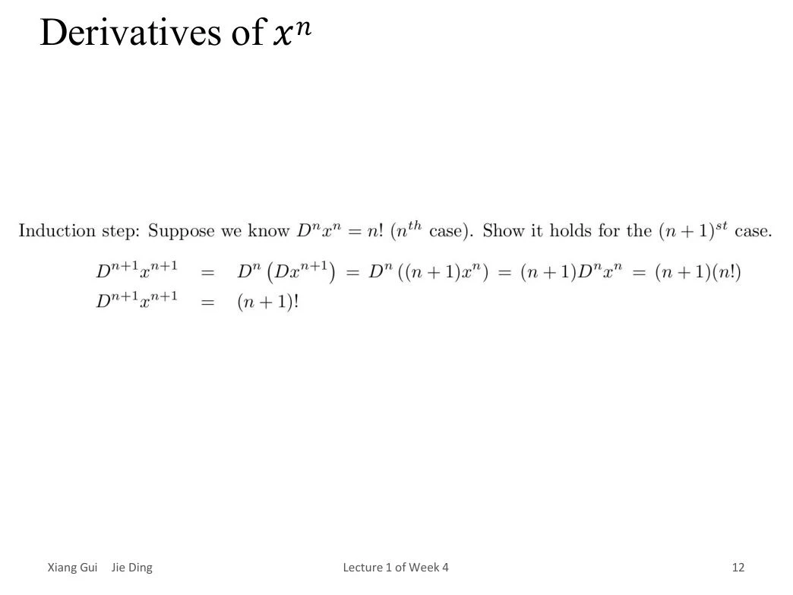


| English | 中文 | 说明 / 例句 |
|---|---|---|
| higher-order derivative | 高阶导数 | f″ = (f′)′, f⁽ⁿ⁾ is the n-th derivative. |
| factorial | 阶乘 | n! = n(n−1)⋯1 with 0! = 1; appears in (xⁿ)⁽ᵏ⁾. |
| kinematics | 运动学 | x(t) position, v = x′ velocity, |v| speed, a = v′ acceleration. |
| concavity | 凹凸性 | f″ > 0 concave up, f″ < 0 concave down. |
| inflection point | 拐点 | Where concavity changes, i.e. f″ changes sign. |
| mean-value theorem | 中值定理 | There is c with f′(c) = (f(b) − f(a))/(b − a). |
| Rolle theorem | 罗尔定理 | If f(a) = f(b) and f is differentiable inside, some c has f′(c) = 0. |
| monotonicity | 单调性 | f′ > 0 implies increasing; the converse fails for x³. |
| critical point | 临界点 | Interior point where f′ = 0 or f′ does not exist. |
| extreme value | 极值 | Absolute or local maximum/minimum of a function. |
| implicit differentiation | 隐函数求导 | Differentiate F(x, y) = 0 treating y as a function of x. |
| orthogonal trajectories | 正交轨迹 | Two families of curves meeting at right angles: slopes multiply to −1. |
| antiderivative | 原函数 | A function F with F′ = f; determined only up to a constant. |
| indefinite integral | 不定积分 | The family F(x) + C of all antiderivatives, written ∫f(x)dx. |
| initial value problem | 初值问题 | A differential equation plus initial condition fixing the constant. |
一阶导：v(t) = x′(t) = 6t² − 30t + 24。二阶导：a(t) = v′(t) = 12t − 30。
代 t = 2：v(2) = 24 − 60 + 24 = −12；a(2) = 24 − 30 = −6。
方向：v < 0，质点向负方向（左）运动。速率：|v| = 12 m/s。
加速/减速：v 与 a 同号（都为负），故速率在增大——它向左运动且越来越快。若符号相反，则是减速。
方法迁移：三步走——求 v = x′、求 a = v′、在指定时刻比较 v 与 a 的符号。注意速率是 |v|，写答案时不能漏绝对值。
令 f(x) = √(1+x)，在 [−1, ∞) 连续、在 (−1, ∞) 可导，f′(x) = 1/(2√(1+x))。
情形 1（x > 0）：在 [0, x] 上用 MVT，存在 c ∈ (0, x) 使 (√(1+x) − 1)/x = 1/(2√(1+c))。因为 c > 0，所以 √(1+c) > 1，右端 < 1/2。两边乘 x > 0：√(1+x) − 1 < x/2。
情形 2（−1 < x < 0）：在 [x, 0] 上用 MVT，存在 c ∈ (x, 0) 使 (1 − √(1+x))/(0 − x) = 1/(2√(1+c))。此时 1 + c < 1，故 √(1+c) < 1、f′(c) > 1/2，于是 (1 − √(1+x))/(−x) > 1/2。两边乘 −x > 0 得 1 − √(1+x) > −x/2，即 √(1+x) < 1 + x/2。
情形 3（x = 0）：两边都等于 1，取等号。三种情形合并即得 √(1+x) ≤ 1 + x/2；x = −1 时左边为 0、右边为 1/2，端点单独检查也成立。
符号从哪来：分母 0 − x = −x 在 x < 0 时为正，乘它不改方向；真正决定方向的是 √(1+c) < 1 让导数比 1/2 大。若误写成 f′(c) < 1/2，整条不等式就会反过来，这是本题唯一的陷阱。
(a) f′ = 3x² − 12 = 3(x−2)(x+2)，临界点 x = ±2。符号表：x < −2 时 f′ > 0，−2 < x < 2 时 f′ < 0，x > 2 时 f′ > 0。
故 x = −2 为局部最大，f(−2) = −8 + 24 + 1 = 17；x = 2 为局部最小，f(2) = 8 − 24 + 1 = −15。因 x → ±∞ 时 f → ±∞，无绝对极值。
(b) f′ = 12 − 3x² = 0 得 x = ±2；区间 [−3, 1] 内只有 x = −2。
比较三点：f(−3) = −36 + 27 = −9；f(−2) = −24 + 8 = −16；f(1) = 12 − 1 = 11。
故绝对最小值为 −16（在 x = −2），绝对最大值为 11（在 x = 1）。注意 x = 2 不在区间内，不能参与比较；端点 x = 1 恰好取得最大值，这正是「闭区间必须查端点」的典型例子。
(a) 两边对 x 求导，注意 y 是 x 的函数：2x + 2y·y′ = 0，故 y′ = −x/y。
代入 (3, −4)：y′ = −3/(−4) = 3/4。可以验证：圆心到该点的半径斜率为 −4/3，切线斜率与其乘积为 −1，一致。
(b) 先验证 (−2, 1) 在曲线上：4 + (−2)(1) + 2(1)³ = 4 ✓。
求导：2x + y + x y′ + 6y² y′ = 0（其中 xy 用乘积法则，2y³ 用链式法则）。
代入 x = −2, y = 1：−4 + 1 − 2y′ + 6y′ = 0，即 4y′ = 3，y′ = 3/4。
切线：y = (3/4)(x + 2) + 1，两边乘 4 整理得 4y = 3x + 10，即 3x − 4y = −10。
通用流程：① 验证点在曲线上；② 两边求导（y 视为 y(x)）；③ 先代点再解 y′（比先解出 y′ 再代点更省力）；④ 用点斜式写切线。
- 求
y = cos 2x的四阶导数。 - 求
y = 1/(1+x)的 n 阶导数，并用归纳法说明。 - 求
f(x) = x³ − 3x + 6的单调区间。 - 证明
f(x) = x³ − 3x² + 1在(0, 2)上递减；并说明f(x) = sin x在(−π/2, π/2)上递增。 - 解初值问题
dy/dx = 6x² − 1，y(2) = 10。 - 解二阶初值问题
y″ = sin x，y′(π) = −1，y(π) = 2；并求xy + y² = 2x的y″（用y′表示）。
答案与思路
1. y′ = −2sin2x、y″ = −4cos2x、y‴ = 8sin2x、y⁗ = 16cos2x。规律：每求一次导乘 2，符号四步循环。
2. y⁽ⁿ⁾ = (−1)ⁿ n! (1+x)^{−n−1}。归纳：n = 1 时 −(1+x)⁻² ✓；若对 k 成立，再求导得 (−1)ᵏk!(−k−1)(1+x)^{−k−2} = (−1)^{k+1}(k+1)!(1+x)^{−(k+1)−1}，形式上与 k+1 的预测一致。
3. f′ = 3x² − 3 = 3(x−1)(x+1)。递增区间 (−∞, −1) 与 (1, ∞)，递减区间 (−1, 1)。
4. f′ = 3x² − 6x = 3x(x−2)，在 (0, 2) 上 x > 0 且 x − 2 < 0，故 f′ < 0，递减。g(x) = sin x，g′ = cos x > 0 对 x ∈ (−π/2, π/2) 成立（该区间内 cos 为正），故递增。
5. y = ∫(6x² − 1)dx = 2x³ − x + C。代 y(2) = 10：16 − 2 + C = 10，得 C = −4，故 y = 2x³ − x − 4。
6. 第一次积分：y′ = −cos x + C₁；代 y′(π) = −1：−(−1) + C₁ = −1，C₁ = −2。第二次积分：y = −sin x − 2x + C₂；代 y(π) = 2：0 − 2π + C₂ = 2，C₂ = 2 + 2π，故 y = 2 + 2π − sin x − 2x。对 xy + y² = 2x：y′ = (2 − y)/(x + 2y)，y″ = −2(2 − y)(x + y + 2)/(x + 2y)³。
cos2x 型与 1/(1+x) 型）；②运动学三量（v、|v|、a）与加速/减速判断；③MVT 证明不等式或单调性；④闭区间最值（临界点 + 端点）；⑤隐函数求导与切线；⑥一阶、二阶初值问题的定常数。y² 求导得 2y·y′，对 xy 得 y + x y′，对 sin y 得 cos y·y′；少写一个 y′ 就整题错。方法与清单
闭区间求最值（四步）
- 求
f′(x)并因式分解 - 解
f′ = 0，并找出f′不存在的内点，筛出落在区间内的临界点 - 计算这些点的函数值，再加上两个端点的函数值
- 比较大小，写出最大值、最小值及其对应的 x
隐函数求导（四步）
- 把方程整理为
F(x, y) = 0，先验证给定点确实在曲线上 - 两边对 x 求导，凡含 y 的项都要乘
y′（链式法则），含xy的项用乘积法则 - 把已知点的坐标代入，先求数值再解
y′（比先解表达式再代点省力） - 写切线/法线时用点斜式，并整理成题目要求的形式
解初值问题（三步）
- 求不定积分得到通解，带一个常数 C（二阶方程要积两次、带两个常数）
- 把初始条件代入，解出常数（二阶要分别用
y′与y的条件） - 把常数写回通解得到特解，并回代初始条件验算
| 源文件 | 页码 | 覆盖知识点 |
|---|---|---|
| Topic 4/EMI_Week4_Lecture1.pdf | p2–p4 | 高阶导数记号（二阶与 n 阶） |
| Topic 4/EMI_Week4_Lecture1.pdf | p5–p8 | 运动学三量、速度符号解释、x = t³−6t² 与 2t³−15t²+24t 的任务 |
| Topic 4/EMI_Week4_Lecture1.pdf | p9–p10 | 一阶/二阶导数的几何意义、凹凸与拐点、x² 与 x³ 对照 |
| Topic 4/EMI_Week4_Lecture1.pdf | p11–p19 | xⁿ 的 n 阶导数与阶乘、多项式的 n 阶导数、sin/cos 的周期性与位移公式、cos2x 与 1/(1+x) 的例题 |
| Topic 4/EMI_Week4_Lecture1.pdf | p20–p27 | 中值定理的现实引入、陈述、几何证明思想、√(1+x) ≤ 1 + x/2 的三情形证明 |
| Topic 4/EMI_Week4_Lecture1.pdf | p28–p33 | 罗尔定理、单调性定义、一阶导数判据及证明、x³ 反例、三道单调性任务 |
| Topic 4/EMI_Week4_Lecture2.pdf | p2–p7 | 绝对/局部极值定义、图形示例、临界点、闭区间最值流程、x³−12x+1 与 12x−x³ |
| Topic 4/EMI_Week4_Lecture2.pdf | p9–p16 | 隐函数概念与求导步骤、圆斜率、y sin y = x³+cos x、x²+xy+2y³=4 的切线、二阶隐导、正交轨迹 |
| Topic 4/EMI_Week4_Lecture2.pdf | p17–p19 | 原函数、不定积分与基本公式、初值问题三步 |
| Topic 4/EMI_Week4_Lecture2.pdf | p20–p23 | 一阶 IVP 例题、二阶 IVP 及其应用、自由落体公式 |
| Topic 4/EMI_Week4_Lecture2.pdf | p24–p26 | 上抛物体的最大高度与落地速度 |
| （跳过）Topic 4/Lecture One.html、Lecture Two.html | — | 登录页快照；p8、p12、p23 等为推导示意图，按公式与结论复原 |
| （拓展） | — | 二阶隐导的通分结果、MVT 的辅助函数构造、加速/减速的符号判据为衔接性补充，源文件以结论形式给出 |
第 3 章 超越函数与极限技巧 2 讲 章节页 →
第 3 章 · 反函数、指数与对数
Inverse Functions, Exponential and Logarithmic Functions 第 3 章 超越函数与极限技巧
本节定位
到此为止，函数库还很贫乏：多项式、有理函数、三角函数。本讲补上最重要的一族——指数函数与对数函数，它们不是靠有限次加减乘除与开方构造出来的，所以叫超越函数（transcendental function）。工程里的充电、冷却、放射性衰变、药物代谢、人口增长，全都要用这族函数描述。
技术上本讲做了两件事：第一，用反函数把「一一对应的函数」翻过来，并给出反函数的求导公式（它把「求反函数导数」变成「求原函数导数再取倒数」）；第二，把自然对数 ln x 定义为 y = 1/t 下方的面积，由此推出 (ln x)′ = 1/x，再反过来定义 e 与 eˣ。这条「面积 → 对数 → 指数」的逻辑链是本课程最漂亮的一段推导。
学完本节你应当能够：
- 判断反函数是否存在并写出其定义域与值域，用
(f⁻¹)′(y) = 1/f′(x)求反函数在一点的导数 - 区分指数函数与幂函数，写出两者的定义域、值域与渐近线
- 熟练运用指数与对数的六条法则化简表达式、解指数方程
- 证明
(ln x)′ = 1/x与(eˣ)′ = eˣ，并写出对应的积分公式 - 用对数求导法处理
x^x、(sin x)^x这类变底变指数的函数 - 建立并求解指数增长/衰减、牛顿冷却与 logistic 三类模型
5.1 反函数
若 f 是一一对应（one-to-one）的函数，定义域 D、值域 R，则它有反函数（inverse function）f⁻¹，满足
y = f⁻¹(x) ⟺ x = f(y)。
要点：f⁻¹ 的定义域是 f 的值域 R，f⁻¹ 的值域是 f 的定义域 D。注意 f⁻¹ 里的 −1 是「反函数」的记号，不是倒数 1/f。
源文件例子：f(x) = x³ 在 ℝ 上严格递增，故一一对应。由 y = x³ 解得 x = ∛y，所以 f⁻¹(y) = ∛y，换成自变量记号即 f⁻¹(x) = ∛x。
五条性质：① y = f⁻¹(x) ⟺ x = f(y)；② dom f⁻¹ = range f；③ range f⁻¹ = dom f；④ 消去恒等式 f⁻¹(f(x)) = x（x ∈ dom f）、f(f⁻¹(x)) = x（x ∈ dom f⁻¹）、(f⁻¹)⁻¹ = f；⑤ f⁻¹ 的图像是 f 的图像关于直线 y = x 的反射。
第 ⑤ 条的理由很直接：f 上的点 (a, b) 表示 f(a) = b，而 f⁻¹(b) = a，所以 (b, a) 在 f⁻¹ 上。交换两个坐标正是关于 y = x 的对称。要画在同一张图上比较时，必须把 f⁻¹ 也写成以 x 为自变量的形式。
源文件的图例：f(x) = √(2x + 1)（x ≥ −1/2）与 f⁻¹(x) = (x² − 1)/2（x ≥ 0）。两条曲线关于 y = x 对称；把 f⁻¹ 限制在 x ≥ 0 是必要的，因为原函数的值域是 [0, ∞)。
5.2 反函数的导数
若 f 在区间 I 上可导、一一对应，且 f′(x) ≠ 0 对一切 x ∈ I 成立，则 f⁻¹ 在 y = f(x) 处可导，且
(f⁻¹)′(y) = 1/f′(x)，其中 y = f(x)。
证明：由定义 y = f⁻¹(x) ⟺ x = f(y)。两边对 x 求导，左边得 1，右边用链式法则得 f′(y)·(dy/dx)，于是 1 = f′(y)·(f⁻¹)′(x)，即 (f⁻¹)′(x) = 1/f′(y)。
用 Leibniz 记号更好记：dx/dy = 1/(dy/dx)——反函数的导数等于原函数导数之倒数。几何上，两条关于 y = x 对称的曲线，其切线的倾斜角互补（和为 90°），所以斜率互为倒数。
源文件例 2：f(x) = x³ + x，证明它在全实数轴上可逆，并求 (f⁻¹)′(2)。
因为 f′(x) = 3x² + 1 > 0 对一切 x 成立，f 严格递增，故一一对应、可逆。设 y = f⁻¹(x)，则 x = f(y) = y³ + y。要求 (f⁻¹)′(2)，先找 y 使 f(y) = 2：y³ + y = 2，试 y = 1 得 2 ✓。于是
(f⁻¹)′(2) = 1/f′(1) = 1/(3·1 + 1) = 1/4。
f′(y)，其中 y 是「输出值对应的输入」。所以必须先解 f(y) = 给定值（通常靠试算），不能直接把给定值代入 f′。这是最常错的地方。5.3 代数函数与超越函数
代数函数（algebraic function）：由多项式经有限次加、减、乘、除与开方构造出来的函数，例如 √(x³ − 1)/(2x + 1)、(x + 1)^{2/5}。
超越函数（transcendental function）：不能用上述方式构造的函数，例如 sin x、cos x、2ˣ、ln x。它们常作为「非代数函数的反函数」或「微分方程的解」出现。
源文件给的超越判别准则：若 y = f(x) 满足任何形如 pₙ(y)xⁿ + ⋯ + p₁(y)x + p₀(y) = 0（其中 p₀, …, pₙ 是 x 的多项式）的多项式方程都不成立，则它是超越函数。历史注记：术语由 Leibniz 于 1682 年引入，Euler 在 1748 年系统化了函数分类。
5.4 指数函数
指数函数（exponential function）形如 f(x) = aˣ，底数 a > 0 为常数，指数 x 为变量。指数为整数与有理数时的定义：
a⁰ = 1；aⁿ = a·a⋯a（n 个因子，n = 1, 2, 3, …）a^{−n} = 1/aⁿa^{m/n} = (a^{1/n})^m = ⁿ√(aᵐ)，其中a^{1/n}是满足bⁿ = a的正数 b
指数为无理数时，用有理数逼近取极限：aˣ = lim_{r→x, r 有理} a^r。这个定义保证了 aˣ 在 ℝ 上连续。
源文件的图显示了不同底数的差别：a > 1 时曲线单调递增、过 (0, 1)、以 x 轴为水平渐近线；0 < a < 1 时单调递减，同样过 (0, 1)。
指数函数与幂函数的区别（源文件专门用一页强调）：
| 类型 | 形式 | 变量位置 | 例子 |
|---|---|---|---|
| 指数函数 | aˣ | 变量在指数上 | 2ˣ、(1/2)ˣ、eˣ |
| 幂函数 | xᵃ | 变量在底数上 | x²、√x、x^π |
这个区分直接决定求导方式：(x²)′ = 2x（幂法则），而 (2ˣ)′ = 2ˣ ln 2（指数法则），两者完全不同。
5.5 对数函数
当 a > 0, a ≠ 1 时 f(x) = aˣ 是一一对应，故有反函数，称为以 a 为底的对数函数（logarithm）：
y = log_a x ⟺ x = a^y（a > 0, a ≠ 1）。
| 函数 | 定义域 | 值域 |
|---|---|---|
aˣ | (−∞, ∞) | (0, ∞) |
log_a x | (0, ∞) | (−∞, ∞) |
消去恒等式：log_a(aˣ) = x 与 a^{log_a x} = x。图像同样是关于 y = x 的反射，所以对数曲线过 (1, 0)，以 y 轴为竖直渐近线。
5.6 渐近行为对照
| x 的走向 | a > 1 时 aˣ | 0 < a < 1 时 aˣ | a > 1 时 log_a x | 0 < a < 1 时 log_a x |
|---|---|---|---|---|
x → ∞ | → ∞ | → 0 | → ∞ | → −∞ |
x → −∞ | → 0 | → ∞ | — | — |
x → 0⁺ | — | — | → −∞ | → ∞ |
渐近线：指数函数有水平渐近线 y = 0、没有竖直渐近线；对数函数有竖直渐近线 x = 0、没有水平渐近线。两者恰好互补——这是「互为反函数」在几何上的体现（水平渐近线反射成竖直渐近线）。
5.7 指数与对数的运算法则
指数法则（a > 0, b > 0，x、y 为实数）：
a⁰ = 1a^{x+y} = aˣaʸa^{−x} = 1/aˣa^{x−y} = aˣ/aʸ(aˣ)ʸ = a^{xy}(ab)ˣ = aˣbˣ
对数法则（a > 0, a ≠ 1, b > 0, b ≠ 1, x > 0, y > 0）：
log_a 1 = 0log_a(xy) = log_a x + log_a ylog_a(x/y) = log_a x − log_a ylog_a(1/y) = −log_a ylog_a(x^r) = r log_a xlog_b x = (log_a x)/(log_a b)（换底公式）
第 2 条是其余各条的根：它把「乘法」变成「加法」，这正是对数在计算与建模中不可替代的原因（也是对数坐标的由来）。
源文件三个化简例子：(a) log₂10 + log₂12 − log₂15 = log₂(10·12/15) = log₂8 = 3；(b) 3^{log₉4}：因 log₉4 = ln4/ln9 = (2ln2)/(2ln3) = log₃2，故 3^{log₃2} = 2；(c) log_{√2}(2⁵) = log_{√2}32 = ln32/ln√2 = 5ln2/(0.5ln2) = 10。
源文件例 2：解 3^{x−1} = 2ˣ。两边取对数（任意底）：(x − 1)ln3 = x ln2，即 x(ln3 − ln2) = ln3，故 x = ln3/ln(3/2) = log_{3/2}3。另一条路径：两边除以 3ˣ 得 (2/3)ˣ = 1/3，取对数得 x = log_{2/3}(1/3) = log_{3/2}3，答案一致。
5.8 自然对数：面积定义
对 x > 0，令 A_x 为曲线 y = 1/t、t 轴、竖直线 t = 1 与 t = x 围成的区域面积。自然对数定义为
ln x = A_x（x ≥ 1），ln x = −A_x（0 < x < 1）。
（x < 1 时取负号，是为了让「ln 1 = 0」两侧连续、且保持单调递增。）由定义立即得到：ln 1 = 0；x > 1 时 ln x > 0；0 < x < 1 时 ln x < 0；ln x 是一一对应，定义域 (0, ∞)、值域 (−∞, ∞)。
5.9 (ln x)′ = 1/x 的证明
源文件的证明用面积夹逼。对 x > 0 与 h > 0，ln(x + h) − ln x 是 1/t 在 [x, x+h] 上的面积，它夹在两个矩形之间：
h/(x + h) < ln(x + h) − ln x < h/x。
三边除以 h 得 1/(x+h) < [ln(x+h) − ln x]/h < 1/x；令 h → 0⁺，两端都趋于 1/x，由夹逼定理得右导数。对 h < 0 同理（此时不等式方向相反，但两端仍趋于 1/x），故
d/dx ln x = 1/x（x > 0）。
自然对数的四条性质（源文件给出，并证明第一条）：① ln(xy) = ln x + ln y；② ln(1/y) = −ln y；③ ln(x/y) = ln x − ln y；④ ln(x^r) = r ln x。
第 ① 条的证法很巧：固定 y，令 g(x) = ln(xy) − ln x。由链式法则 g′(x) = y/(xy) − 1/x = 1/x − 1/x = 0，故 g 为常数；取 x = 1 得 g(1) = ln y，于是 ln(xy) − ln x = ln y。其余各条由 ① 与 ④ 组合推出。
源文件的例子：证明 d/dx ln|x| = 1/x（x ≠ 0），并求 ∫dx/x。当 x > 0 时就是上面的结论；当 x < 0 时 ln|x| = ln(−x)，由链式法则 d/dx = (1/(−x))·(−1) = 1/x。所以
d/dx ln|x| = 1/x，∫ dx/x = ln|x| + C（x ≠ 0）。绝对值不能省，因为 ln 只接受正数。
5.10 自然指数 e 与 eˣ
欧拉数 e 定义为使 ln e = 1 的那个底数——也就是让 [1, e] 上 1/t 的面积恰为 1 的右端点。数值上
e = 2.71828 18284 59045…，并可写成级数 e = 1 + 1/1! + 1/2! + 1/3! + 1/4! + ⋯（本课只需知道这个形式，不必证明收敛）。
由于 ln 是一一对应，它的反函数存在，记作 exp 或 eˣ：
y = eˣ ⟺ x = ln y（y > 0）。eˣ 的定义域是 (−∞, ∞)，值域是 (0, ∞)。
五组恒等式及来源：① e⁰ = 1（由 ln 1 = 0）；② ln(eˣ) = x、③ e^{ln x} = x（消去恒等式）；④ e^{x+y} = eˣeʸ、(eˣ)ʸ = e^{xy}；⑤ e^{−x} = 1/eˣ、e^{x−y} = eˣ/eʸ。
源文件对 ④ 的证明：设 z = eˣeʸ，则 ln z = ln eˣ + ln eʸ = x + y，故 z = e^{x+y}；设 w = (eˣ)ʸ，则 ln w = y ln(eˣ) = xy，故 w = e^{xy}。这种「取对数把指数运算降级为乘法」的手法贯穿整节。
5.11 一般底数的指数与对数求导
把任意底写成 e 的幂：aˣ = e^{x ln a}，由链式法则
(aˣ)′ = aˣ ln a，∫aˣ dx = aˣ/ln a + C。
同理 log_a x = ln x/ln a，故 (log_a x)′ = 1/(x ln a)。
对幂函数 xᵃ（x > 0），写成 e^{a ln x}：(xᵃ)′ = e^{a ln x}·(a/x) = a x^{a−1}——这就是第 3 讲幂法则对任意实数指数的严格证明。
源文件例：f(x) = e^{kx}（k ≠ 0）。各阶导数为 f′ = ke^{kx}、f″ = k²e^{kx}、…、f⁽ⁿ⁾ = kⁿe^{kx}；积分为 ∫e^{kx}dx = (1/k)e^{kx} + C。
源文件任务：(a) f(x) = log₁₀(cos x)，f′ = (1/(cos x·ln10))·(−sin x) = −tan x/ln10；(b) f(x) = xᵃ − aˣ，f′ = a x^{a−1} − aˣ ln a。
5.12 变底变指数：两种求导方法
对 y = f(x)^{g(x)}（要求 f(x) > 0），不能直接套幂法则（底在变）也不能套指数法则（指数在变）。两种方法：
- 方法 1（改写成 e 的幂）：
y = e^{g(x) ln f(x)}，故y′ = e^{g ln f}·[g′ ln f + g f′/f] = y[g′ ln f + g f′/f] - 方法 2（对数求导）：两边取对数
ln y = g ln f，再对 x 隐式求导：y′/y = g′ ln f + g f′/f，最后乘回 y
两法结果完全一致，方法 2 在多因子乘积/商的情形下更快（它把乘除变成加减）。
源文件例：(a) y = xˣ（x > 0）：y = e^{x ln x}，y′ = xˣ(ln x + x·1/x) = xˣ(ln x + 1)。
(b) y = (sin x)ˣ（0 < x < π）：取对数 ln y = x ln sin x，求导 y′/y = ln sin x + x·cot x，故 y′ = (sin x)ˣ(ln sin x + x cot x)。
(c) y = x^{ln x}：ln y = (ln x)²，求导 y′/y = 2 ln x/x，故 y′ = x^{ln x}·2 ln x/x。
5.13 关键积分表
| 积分 | 结果 | 对应导数 |
|---|---|---|
∫ dx/x | ln|x| + C | (ln|x|)′ = 1/x |
∫ dx/(x ln a) | log_a|x| + C | (log_a x)′ = 1/(x ln a) |
∫ e^{kx} dx | e^{kx}/k + C | (e^{kx})′ = k e^{kx} |
∫ a^{kx} dx | a^{kx}/(k ln a) + C | (a^{kx})′ = k a^{kx} ln a |
5.14 增长阶：对数 < 幂 < 指数
源文件给出链式不等式（x > 0）：
ln x ≤ x − 1 < x < x + 1 ≤ eˣ，
等号只在 x = 1（左边）与 x = 0（右边）取得。它说明：对数增长最慢、线性居中、指数最快。
两个重要极限（a > 0）：
lim_{x→∞} ln x/xᵃ = 0（幂 beats 对数），lim_{x→∞} xᵃ/eˣ = 0（指数 beats 幂）。
第一个的证明：取 α = a/2 > 0，由 ln u ≤ u − 1 < u 得 ln x = (1/α)ln(xᵃ) ≤ (1/α)(xᵃ − 1) < xᵃ/α，故 0 < ln x/xᵃ < 1/(α x^{a/2})，两端夹逼得 0。第二个的证明：令 t = ln x，则 xᵃ/eˣ = (ln x)ᵃ/x = [(ln x)/x^{1/a}]ᵃ，由第一个极限（指数取 1/a）得 0。
ln x/x、x²/eˣ、x e^{−x} 这类「谁长得快」的比较，直接引用这两个极限，不必再求导。源文件把它们列进公式表，说明是允许直接引用的结论。5.15 指数增长与衰减模型
许多自然过程的「变化率与当前量成正比」。设 y = y(t) 表示某量在时刻 t 的值，则
dy/dt = ky，y(0) = y₀，
其中 k 是比例常数。这个初值问题的唯一解是
y(t) = y₀ e^{kt}。
验证：y′ = k y₀ e^{kt} = ky ✓，且 y(0) = y₀ ✓；唯一性由一阶线性方程的理论保证（本课只需承认）。
k > 0 为增长：人口增长、复利、无限制的繁殖，lim_{t→∞} y = ∞。k < 0 为衰减：放射性衰变、牛顿冷却、药物代谢，lim_{t→∞} y = 0。y₀ 是 t = 0 时的初值，曲线都以 y = 0 为水平渐近线（衰减时）。
5.16 广义模型：趋向一个固定值 a
若变化率与「当前值与固定值 a 之差」成正比：
dy/dt = k(y − a)，y(0) = y₀，
做变量代换 u = y − a，则 du/dt = dy/dt = ku，化为标准模型，解得 u = (y₀ − a)e^{kt}，故
y(t) = a + (y₀ − a)e^{kt}。
当 k < 0 时 y → a（趋向环境温度、趋向稳态浓度）；当 k > 0 时远离 a。
牛顿冷却定律：物体温度的变化率与「物体温度 − 环境温度」成正比，即上式取 a = 环境温度、k < 0。
源文件例子：室温 20 ℃，咖啡从 80 ℃ 降到 50 ℃ 用 5 分钟，问到 40 ℃ 还需多久。设 T(t) = 20 + 60e^{kt}。由 T(5) = 50：30 = 60e^{5k}，故 e^{5k} = 1/2、k = −ln2/5。
令 T = 40：20 = 60e^{kt}，即 e^{kt} = 1/3，t = −ln(1/3)/k = 5ln3/ln2 ≈ 7.92 分钟（从开始算）。因此还需 7.92 − 5 ≈ 2.92 分钟。
5.17 Logistic 模型
当增长受环境容量限制时，模型改为
dy/dt = k(1 − y/L)y，y(0) = y₀，
其中 L > 0 是承载容量（carrying capacity），k > 0 是增长率。其解为
y(t) = Ly₀/(y₀ + (L − y₀)e^{−kt})。
渐近行为：k > 0 时 lim_{t→∞} y = L；k < 0 时 lim_{t→∞} y = 0；k = 0 时恒为 y₀。源文件要求「验证该函数满足模型」，验证方法：把它代回方程两边，或对解取对数线性化后求导（本课只需承认并会用）。
源文件例：已知 y(0) = 3、y(1) = 5、y(2) = 6，求 L。把三个值代入解式：
5 = 3L/(3 + (L−3)e^{−k})，6 = 3L/(3 + (L−3)e^{−2k})。
第一式解出 e^{−k} = 3(L−5)/(5(L−3))；第二式解出 e^{−2k} = (L−6)/(2(L−3))。由 (e^{−k})² = e^{−2k}：
9(L−5)²/(25(L−3)²) = (L−6)/(2(L−3))，交叉相乘得 18(L−5)² = 25(L−3)(L−6)。
展开：18L² − 180L + 450 = 25L² − 225L + 450，即 7L² − 45L = 0，故 L = 45/7 ≈ 6.429（舍去 L = 0）。
原版图页（源 PDF 插图页）


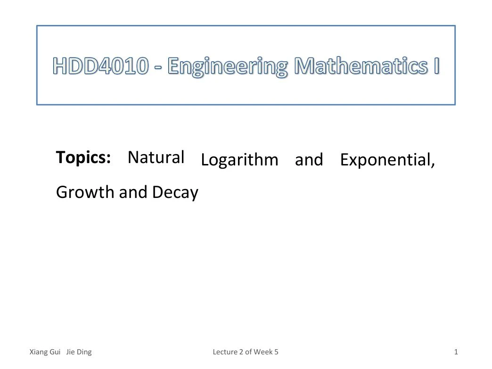
| English | 中文 | 说明 / 例句 |
|---|---|---|
| inverse function | 反函数 | y = f⁻¹(x) iff x = f(y); exists only for one-to-one f. |
| one-to-one | 一一对应 | f(x₁) ≠ f(x₂) for x₁ ≠ x₂; checked by the horizontal line test. |
| cancellation identity | 消去恒等式 | f⁻¹(f(x)) = x and f(f⁻¹(x)) = x. |
| derivative of an inverse | 反函数导数 | (f⁻¹)′(y) = 1/f′(x) with y = f(x). |
| algebraic function | 代数函数 | Built from polynomials by finitely many operations and roots. |
| transcendental function | 超越函数 | Not algebraic: sin x, cos x, aˣ, ln x. |
| exponential function | 指数函数 | aˣ with the variable in the exponent; base fixed. |
| power function | 幂函数 | xᵃ with the variable in the base; exponent fixed. |
| logarithm | 对数 | log_a x is the inverse of aˣ: y = log_a x iff x = a^y. |
| natural logarithm | 自然对数 | ln x, the area under 1/t from 1 to x; derivative 1/x. |
| Euler number | 欧拉数 e | The base with ln e = 1; e ≈ 2.718281828…. |
| logarithmic differentiation | 对数求导法 | Take ln of both sides, differentiate implicitly, then multiply by y. |
| exponential growth/decay | 指数增长/衰减 | dy/dt = ky gives y = y₀e^{kt}; k > 0 grows, k < 0 decays. |
| Newton law of cooling | 牛顿冷却定律 | dy/dt = k(y − a) gives y = a + (y₀ − a)e^{kt}. |
| logistic model | Logistic 模型 | dy/dt = k(1 − y/L)y gives y = Ly₀/(y₀ + (L−y₀)e^{−kt}). |
设 N(t) = N₀e^{kt}，N₀ = 500。由 N(24) = 800：500e^{24k} = 800，故 e^{24k} = 1.6，k = ln1.6/24。
于是 N(t) = 500e^{t ln1.6/24} = 500·1.6^{t/24}。
再过 12 小时即 t = 36：N(36) = 500·1.6^{36/24} = 500·1.6^{3/2}。
1.6^{3/2} = 1.6·√1.6 ≈ 1.6 × 1.2649 = 2.0238，故 N(36) ≈ 1012 个。
要点：「再过 12 小时」对应 t = 24 + 12 = 36，不是 t = 12；这是本题唯一的陷阱。另外把解写成 500·1.6^{t/24} 比保留 k 更好算。
设 T(t) = 20 + 60e^{kt}（a = 20、T₀ = 80）。
由 T(5) = 50：50 = 20 + 60e^{5k} → e^{5k} = 1/2 → k = −ln2/5。
令 T = 40：40 = 20 + 60e^{kt} → e^{kt} = 1/3 → kt = −ln3 → t = 5ln3/ln2 ≈ 7.92 分钟。
这是「从取出时刻算起」的总时间，题目问「还需多久」，故答案为 7.92 − 5 ≈ 2.92 分钟。
精确形式：5log₂3 − 5 或 5ln3/ln2 − 5。考试不允许计算器，通常写精确式即可；若要近似，用 ln2 ≈ 0.693、ln3 ≈ 1.099。
解式 y(t) = 3L/(3 + (L−3)e^{−kt})。
代 t = 1：5(3 + (L−3)e^{−k}) = 3L → 5(L−3)e^{−k} = 3L − 15 → e^{−k} = 3(L−5)/(5(L−3))。
代 t = 2：6(3 + (L−3)e^{−2k}) = 3L → 6(L−3)e^{−2k} = 3L − 18 → e^{−2k} = (L−6)/(2(L−3))。
用 (e^{−k})² = e^{−2k} 消去 k：9(L−5)²/(25(L−3)²) = (L−6)/(2(L−3))，即 18(L−5)² = 25(L−3)(L−6)。
展开化简：18L² − 180L + 450 = 25L² − 225L + 450 → 7L² − 45L = 0 → L(7L − 45) = 0。
舍去 L = 0（容量必须为正，且此时模型退化），得 L = 45/7 ≈ 6.429。合理性检查：数据 3 → 5 → 6 单调上升且增量递减（2 然后 1），符合「逼近上限」的形态，上限 6.43 略高于 6，合理。
(a) 两边取自然对数：(x−1)ln3 = x ln2。整理：x ln3 − ln3 = x ln2，即 x(ln3 − ln2) = ln3，故 x = ln3/ln(3/2) = log_{3/2}3。
等价做法：两边同除 3ˣ 得 (2/3)ˣ = 1/3，取对数得 x = ln(1/3)/ln(2/3) = ln3/ln(3/2)，一致。
(b) 取对数：ln y = x ln sin x。两边对 x 求导：y′/y = ln sin x + x·(cos x/sin x)。
故 y′ = (sin x)ˣ(ln sin x + x cot x)。
要点：变底变指数的函数必须「先取对数、再求导、最后乘回 y」；直接套幂法则或指数法则都会错。
- 求
f(x) = x³ + x的反函数在x = 2处的导数（即(f⁻¹)′(2)）。 - 化简：
log₂10 + log₂12 − log₂15；3^{log₉4}；log_{√2}(2⁵)。 - 求导数：
y = log₁₀(cos x)；f(x) = xᵃ − aˣ；y = x^{ln x}。 - 求积分：
∫e^{3x}dx；∫dx/(2x)；∫2^{x}dx。 - 某放射性物质每小时衰变 10%（即每小时剩余 90%），求半衰期（精确式）。
- 解方程
3^{x−1} = 2ˣ，并把答案写成两种等价形式。
答案与思路
1. f′(x) = 3x² + 1 > 0，严格递增，可逆。找 y 使 y³ + y = 2：y = 1。故 (f⁻¹)′(2) = 1/f′(1) = 1/4。
2. log₂(10·12/15) = log₂8 = 3；log₉4 = log₃2，故 3^{log₃2} = 2；ln32/ln√2 = 5ln2/(0.5ln2) = 10。
3. −tan x/ln10；a x^{a−1} − aˣ ln a；x^{ln x}·(2 ln x)/x。
4. e^{3x}/3 + C；(1/2)ln|x| + C；2ˣ/ln2 + C（来自 ∫a^{kx}dx = a^{kx}/(k ln a)，此处 k = 1、a = 2）。
5. 设剩余比例为 y(t) = 0.9^t（以小时为单位，因为每小时乘 0.9）。半衰期满足 0.9^t = 1/2，故 t = ln(1/2)/ln0.9 = ln2/ln(10/9)。数值约 6.58 小时。
6. x = ln3/ln(3/2) = log_{3/2}3 = log_{1.5}3；两种写法等价，第二式更便于用换底公式统一。
(aˣ)′ 与 (log_a x)′；④对数求导法处理变底变指数；⑤指数增长/衰减、牛顿冷却（求 k 再求时间）；⑥logistic 模型求 L。(f⁻¹)′(2)，必须找 f(y) = 2 的 y，再算 1/f′(y)；直接把 2 代入 f′ 是错的。d/dx(x²) = 2x，而 d/dx(2ˣ) = 2ˣ ln2；d/dx(x^π) = πx^{π−1}，而 d/dx(πˣ) = πˣ lnπ。看到「变量在指数上」就用 ln，看到「变量在底数上」就用幂法则。∫dx/x = ln|x| + C，∫dx/(ax+b) = (1/a)ln|ax+b| + C；丢掉绝对值会在负区间上给出错误答案。dy/dt = k(y − a) → y = a + (y₀ − a)e^{kt}；令 a = 0 得纯增长/衰减，令 a = L 并把 k 换成 −k 并加入「按比例缩小」的因子就得到 logistic 的骨架。理解模板比记三个公式可靠。方法与清单
求反函数及其导数（三步）
- 先证一一对应（严格单调，通常看
f′ > 0或f′ < 0） - 由
y = f(x)解出x = f⁻¹(y)，写明定义域（原函数的值域）与值域（原函数的定义域） - 求某点导数时：先解
f(y) = 给定值得 y，再算1/f′(y)
解指数/对数方程（三步）
- 尽量把两边化成同底，或用换底公式统一底数
- 两边取对数，把指数降为乘积，整理出未知量的一次方程
- 解出后用原方程代值检验（尤其检查是否在定义域内）
建立增长/衰减模型（四步）
- 判断「变化率与什么成正比」：与自身成正比 →
y₀e^{kt}；与「自身减 a」成正比 →a + (y₀−a)e^{kt} - 把已知条件逐条代入，先求 k（通常用一次比值或一次对数）
- 写出完整的 y(t) 表达式，保留精确形式（ln、e）
- 回答题目真正问的量：注意「还需多久」与「总共多久」的差别
| 源文件 | 页码 | 覆盖知识点 |
|---|---|---|
| Topic 5/EMI_Week5_Lecture1.pdf | p2–p4 | 反函数的概念、一一对应前提、f = x³ 的反函数 |
| Topic 5/EMI_Week5_Lecture1.pdf | p5–p7 | 反函数五条性质、图像关于 y = x 对称、√(2x+1) 与 (x²−1)/2 |
| Topic 5/EMI_Week5_Lecture1.pdf | p8 | 反函数导数公式及其链式法则证明 |
| Topic 5/EMI_Week5_Lecture1.pdf | p9–p11 | f = x³ + x 的可逆性证明与 (f⁻¹)′(2) = 1/4（p9–p10 为图片页，按 p11 的文字复原） |
| Topic 5/EMI_Week5_Lecture1.pdf | p12–p13 | 代数函数与超越函数、超越判别准则、Leibniz 与 Euler 的历史注记 |
| Topic 5/EMI_Week5_Lecture1.pdf | p14–p16 | 指数函数定义、整数/有理/无理指数、指数函数与幂函数的区别 |
| Topic 5/EMI_Week5_Lecture1.pdf | p17–p19 | 对数函数作为反函数、定义域值域对照、消去恒等式、渐近行为表 |
| Topic 5/EMI_Week5_Lecture1.pdf | p20–p23 | 指数六法则、对数六法则、三个化简例与 3^{x−1} = 2ˣ |
| Topic 5/EMI_Week5_Lecture1.pdf | p24–p29 | ln x 的面积定义、性质、导数 1/x 的夹逼证明、ln(xy) 恒等式证明、ln|x| 与 ∫dx/x |
| Topic 5/EMI_Week5_Lecture1.pdf | p30–p31 | eˣ 作为 ln 的反函数、五组恒等式及其证明 |
| Topic 5/EMI_Week5_Lecture2.pdf | p2–p3 | 指数与对数法则的复习 |
| Topic 5/EMI_Week5_Lecture2.pdf | p4–p5 | 欧拉数 e 的面积定义与级数、eˣ 与 ln x 的图形与渐近线 |
| Topic 5/EMI_Week5_Lecture2.pdf | p6–p9 | (aˣ)′ 与 ∫aˣ 的隐式推导、一般底对数求导、幂法则的再证明、两道求导任务 |
| Topic 5/EMI_Week5_Lecture2.pdf | p10–p12 | 变底变指数两种方法、xˣ 与 (sin x)ˣ 的求导 |
| Topic 5/EMI_Week5_Lecture2.pdf | p13 | 关键积分表（1/x、1/(x ln a)、e^{kx}、a^{kx}） |
| Topic 5/EMI_Week5_Lecture2.pdf | p14–p16 | ln x ≤ x−1 < x < x+1 ≤ eˣ、ln x/xᵃ → 0、xᵃ/eˣ → 0 的证明 |
| Topic 5/EMI_Week5_Lecture2.pdf | p17–p20 | 指数增长/衰减模型、应用清单、细胞培养例题 |
| Topic 5/EMI_Week5_Lecture2.pdf | p21–p23 | 广义模型 dy/dt = k(y−a)、牛顿冷却定律与咖啡例题 |
| Topic 5/EMI_Week5_Lecture2.pdf | p24–p28 | logistic 模型的解、渐近行为、由三个数据点求承载容量 L = 45/7 |
| （跳过）Topic 5 中 p9–p10 等纯图片页 | — | 无文字层，按相邻页文字与例题答案复原；Lecture One/Two.html 为登录页快照，无正文 |
| （拓展） | — | 把 ln x ≤ x−1 的证明、e 的级数表示与三类模型的统一模板列为归纳性补充，源文件以结论与例题给出 |
第 3 章 · 反三角、双曲函数、洛必达与定积分
Inverse Trigonometric and Hyperbolic Functions, L’Hôpital’s Rule, Riemann Sums 第 3 章 超越函数与极限技巧
本节定位
本讲把「函数库」补齐最后一块（反三角函数与双曲函数），把「极限工具」升级（洛必达法则），并开启本课程的第二大主题：积分。三件事看似无关，实际共用一条逻辑：反三角函数的导数给出两个新的积分公式；洛必达法则处理所有未定式；而黎曼和把「面积」定义为和式的极限——这正是第 7 讲定积分的起点。
本节还包含考试事务：第一次考试在 10 月 21 日，需在 10 月 14 日前报名；考试不允许使用计算器，但会提供公式表。
学完本节你应当能够：
- 写出 arcsin、arccos、arctan 的定义域、值域与导数，并会用它们求积分
- 处理三角函数的反函数复合（如
sin⁻¹(sin 4π/5)、cos(sin⁻¹ x)） - 写出双曲函数的定义、基本恒等式与导数
- 识别七种未定式，针对每种选择正确的变形路径，并正确使用洛必达法则（含判断何时不能用）
- 把面积写成黎曼和的极限，并用求和公式求出具体值
- 用定积分的性质（线性、可加、奇偶）简化计算
6.1 考试事务与反三角函数的必要性
第一次考试 10 月 21 日，报名截止 10 月 14 日。考试不允许使用计算器，但会发公式表（formula sheet，之后放在 Moodle 上）。这意味着 sin⁻¹(1/2)、tan⁻¹(1) 这类特殊值必须条件反射式地写出。
三角函数是周期的，因此在 ℝ 上不是一一对应，没有反函数。解决办法是限制定义域，在使函数一一对应的那段区间上定义反函数。每段区间的选择都不是随意的：要覆盖整个值域，且在该段上严格单调。
6.2 反正弦 arcsin
把 y = sin x 限制在 [−π/2, π/2]（在此区间严格递增，值域 [−1, 1]），其反函数记作 sin⁻¹ 或 arcsin：
y = sin⁻¹ x ⟺ x = sin y，其中 y ∈ [−π/2, π/2]。
定义域 [−1, 1]，值域 [−π/2, π/2]。示例：sin⁻¹(1/2) = π/6、sin⁻¹(√2/2) = π/4、sin⁻¹(−1) = −π/2、sin⁻¹ 2 无定义（2 超出 [−1, 1]）。
图像是 y = sin x 在 [−π/2, π/2] 这一段关于 y = x 的反射：过原点，两端点 (±1, ±π/2)，斜率为正。
源文件例（复合）：求 sin⁻¹(sin 4π/5)。因为 4π/5 ∉ [−π/2, π/2]，不能直接写 = 4π/5。用补角公式：sin(4π/5) = sin(π − 4π/5) = sin(π/5)，而 π/5 ∈ [−π/2, π/2]，故 sin⁻¹(sin 4π/5) = π/5。
源文件例：化简 cos(sin⁻¹ x)。令 θ = sin⁻¹ x，则 sin θ = x 且 θ ∈ [−π/2, π/2]；在该区间 cos θ ≥ 0，故 cos θ = √(1 − sin²θ) = √(1 − x²)。
sin⁻¹(sin θ) = θ 只在 θ ∈ [−π/2, π/2] 时成立；超出该区间必须先用诱导公式把角折回主值区间。同理 cos⁻¹(cos θ) = θ 只在 θ ∈ [0, π] 成立。6.3 arcsin 的导数
d/dx sin⁻¹ x = 1/√(1 − x²)（−1 < x < 1）。
证明：设 y = sin⁻¹ x，则 x = sin y。两边对 x 求导（链式法则）：1 = cos y·y′，故 y′ = 1/cos y。因为 y ∈ (−π/2, π/2)，cos y > 0，所以 cos y = √(1 − sin²y) = √(1 − x²)，于是 y′ = 1/√(1 − x²)。
源文件例：求 d/dx sin⁻¹(x/a)（a > 0），并由此得积分公式。由链式法则
d/dx sin⁻¹(x/a) = 1/√(1 − (x/a)²) · (1/a) = 1/√(a² − x²)（a > 0 时 √(a²) = a）。
故 ∫ dx/√(a² − x²) = sin⁻¹(x/a) + C（a > 0）。这是第 7 讲「三角代换」的标准出口。
6.4 反余弦 arccos
把 y = cos x 限制在 [0, π]（严格递减），反函数 cos⁻¹ 或 arccos：
y = cos⁻¹ x ⟺ x = cos y，y ∈ [0, π]；定义域 [−1, 1]，值域 [0, π]。
两个反三角函数的互补关系：由 cos y = sin(π/2 − y) 可得
cos⁻¹ x + sin⁻¹ x = π/2，
因此 cos⁻¹ x = π/2 − sin⁻¹ x，其导数为 −1/√(1 − x²)——比 arcsin 多一个负号，来源就是这个 π/2 的常数差（常数的导数为 0，负号来自对 sin⁻¹ x 取负）。
6.5 反正切 arctan
把 y = tan x 限制在 (−π/2, π/2)（严格递增），反函数 tan⁻¹ 或 arctan：
y = tan⁻¹ x ⟺ x = tan y，y ∈ (−π/2, π/2)；定义域 ℝ，值域 (−π/2, π/2)。
因为有两条水平渐近线 y = ±π/2：x → ±∞ 时 tan⁻¹ x → ±π/2。示例：tan⁻¹ 1 = π/4、tan⁻¹ 0 = 0、tan⁻¹(−√3) = −π/3。
导数：设 y = tan⁻¹ x，则 x = tan y，1 = sec²y·y′ = (1 + tan²y)y′ = (1 + x²)y′，故
d/dx tan⁻¹ x = 1/(1 + x²)，∫ dx/(a² + x²) = (1/a)tan⁻¹(x/a) + C（a ≠ 0）。
6.6 双曲函数
对任意实数 x，定义双曲余弦与双曲正弦：
cosh x = (eˣ + e^{−x})/2，sinh x = (eˣ − e^{−x})/2。
四个基本事实：cosh 是偶函数（cosh(−x) = cosh x）；sinh 是奇函数（sinh(−x) = −sinh x）；cosh 0 = 1、sinh 0 = 0；基本恒等式
cosh²x − sinh²x = 1。
恒等式的验证（源文件写法）：cosh²x − sinh²x = [(eˣ+e^{−x})/2]² − [(eˣ−e^{−x})/2]² = [(e^{2x} + 2 + e^{−2x}) − (e^{2x} − 2 + e^{−2x})]/4 = 4/4 = 1。这个式子与双曲线 x² − y² = 1 同形，正是「双曲」这个名字的来源（对应 cos² + sin² = 1 对应圆）。
6.7 双曲函数的图像与渐近行为
cosh x：定义域 ℝ，值域[1, ∞)，在x = 0取最小值 1（cosh x ≥ 1）；x → ∞时渐近于eˣ/2，x → −∞时渐近于e^{−x}/2sinh x：定义域 ℝ，值域 ℝ，过原点且处处递增；x → ∞时渐近于eˣ/2，x → −∞时渐近于−e^{−x}/2
6.8 双曲函数的导数
d/dx cosh x = sinh x，d/dx sinh x = cosh x——互相求导，没有负号，这是它们比 sin/cos 更好用的地方。
证明：d/dx[(eˣ + e^{−x})/2] = (eˣ − e^{−x})/2 = sinh x；d/dx[(eˣ − e^{−x})/2] = (eˣ + e^{−x})/2 = cosh x。
由此还可得 ∫cosh x dx = sinh x + C、∫sinh x dx = cosh x + C。
6.9 双曲恒等式的用法
源文件例 (a)：证明 cosh 2x = 2cosh²x − 1。由定义
cosh 2x = (e^{2x} + e^{−2x})/2 = [(eˣ + e^{−x})² − 2]/2 = [(2cosh x)² − 2]/2 = 2cosh²x − 1。
源文件例 (b)：已知 cosh x = 5/4，求 sinh 2x。先用上面的恒等式：cosh 2x = 2(25/16) − 1 = 50/16 − 1 = 34/16 = 17/8。再用 cosh²2x − sinh²2x = 1：
sinh²2x = 289/64 − 1 = 225/64，故 sinh 2x = ±15/8。
符号无法由 cosh x 唯一确定（因为 cosh 是偶函数，x 与 −x 给出同一个 cosh x 而 sinh 2x 变号），所以答案必须保留 ±；若题目另给 x > 0 则取正。
6.10 未定式与七种类型
若 f 与 g 在 x = c 处同时为 0，则 lim f(x)/g(x) 不能靠代入确定，代入会得到 0/0，称为未定式（indeterminate form）；需要进一步分析极限是否存在、等于多少。若两者在 c 附近都趋于 ±∞，则得到 ∞/∞ 型。
| 类型 | 典型例子 | 结果 | 处理方向 |
|---|---|---|---|
0/0 | lim_{x→0} sin x/x | 1 | 洛必达或等价化简 |
∞/∞ | lim_{x→∞}(x²+3x+1)/x | ∞ | 洛必达或比较次数 |
0 · ∞ | lim_{x→0⁺} x ln x | 0 | 改写成 0/(1/∞) 或 ∞/(1/0) |
∞ − ∞ | lim_{x→0}(1/x − 1/sin x) | 0 | 通分或乘共轭 |
0⁰ | lim_{x→0⁺} xˣ | 1 | 取对数化为 0·∞ |
∞⁰ | lim_{x→∞} x^{1/x} | 1 | 取对数化为 0·∞ |
1^∞ | lim_{x→0}(1+x)^{1/x} | e | 取对数化为 ∞·0 |
6.11 柯西中值定理
若 f、g 在 [a, b] 上连续、在 (a, b) 内可导，且 g′(x) ≠ 0 对一切 x ∈ (a, b) 成立，则存在 c ∈ (a, b) 使
[f(b) − f(a)]/[g(b) − g(a)] = f′(c)/g′(c)。
证明要用一个辅助函数：h(x) = [f(b) − f(a)]g(x) − [g(b) − g(a)]f(x)。它在两端点取值相等（h(a) = h(b)），且连续可导，由罗尔定理存在 c 使 h′(c) = 0，即 [f(b)−f(a)]g′(c) = [g(b)−g(a)]f′(c)，整理即得结论。
（源文件先说明 g(b) ≠ g(a)：否则由罗尔定理存在 g′ = 0 的点，与假设矛盾。）当 g(x) = x 时，柯西公式退化为拉格朗日中值定理——这是源文件特别指出的一点。
6.12 洛必达法则
若 f、g 在含 c 的开区间内可导（c 本身可以例外），g′(x) ≠ 0（x ≠ c），且 f(x)/g(x) 在 x → c 时呈 0/0 或 ∞/∞ 型，则
lim_{x→c} f(x)/g(x) = lim_{x→c} f′(x)/g′(x)，
只要右端的极限存在（或为 ±∞）。法则对 x → ±∞、单侧极限、以及 c = ±∞ 同样成立。
证明思路（0/0 型）：把 f、g 在 c 处补充定义为 0，使它们在 c 连续；再对区间 [c, x] 用柯西中值定理，得 f(x)/g(x) = f′(ξ)/g′(ξ)，其中 ξ 在 c 与 x 之间；令 x → c 则 ξ → c，结论成立。∞/∞ 型的证明更繁，源文件说明「可参考高等微积分教材」。
lim (x+1)/x 在 x→1，直接代入得 2，用洛必达会算出 1）；② 分子分母并非同时趋于 0 或同时趋于 ∞；③ 用了之后右端极限不存在且不是 ∞，此时法则失效，需回到代数变形。源文件在页末专门写了 Caution：不要对非未定式使用洛必达法则。6.13 0/0 型的三个例子
(a) lim_{x→1} ln x/(x² − 1)。代入得 0/0。用洛必达：(1/x)/(2x) = 1/(2x²) → 1/2。
(b) lim_{x→0} (eˣ + e^{−x} − 2)/(1 − cos 2x)。代入得 0/0。一次洛必达：(eˣ − e^{−x})/(2 sin 2x)，仍是 0/0；再次：(eˣ + e^{−x})/(4 cos 2x) → 2/4 = 1/2。
（也可以先用等价无穷小判断量级：分子 ≈ x²、分母 ≈ 2x²，直接看出答案 1/2。）
(c) lim_{x→π/2⁻} (2x − π)/cos x。代入得 0/0（分母从正侧趋于 0）。洛必达：2/(−sin x) → −2。
源文件强调：若一次洛必达后仍是未定式，可以重复使用，直到能定出极限；而最终极限的存在性反过来保证前面每一步的合法性。
6.14 ∞/∞ 型：先变形再洛必达
(a) lim_{x→∞} x e^{−x/2}。这是 0 · ∞ 型，改写成 ∞/∞：x/e^{x/2}。洛必达一次：1/((1/2)e^{x/2}) = 2/e^{x/2} → 0。
(b) lim_{x→π/2⁻} 4 tan x/(1 + sec x)。代入得 ∞/∞。洛必达：4sec²x/(sec x tan x) = 4sec x/tan x = 4/sin x → 4。
源文件还演示了一条「洛必达越用越乱」的情形：若对 4tan x/(1+sec x) 反复求导，会一直停在 ∞/∞。此时应改用三角恒等式把商化简：4sec x/tan x = (4/cos x)/(sin x/cos x) = 4/sin x，直接看出极限为 4。这说明洛必达不是万能钥匙，先化简往往更快。
6.15 0 · ∞ 型
标准做法：把 f·g 写成 f/(1/g) 或 g/(1/f)，选那个「变形后更好求导」的方向。
lim_{x→0⁺} xᵃ ln x = 0（a > 0）：改写为ln x/x^{−a}，洛必达得(1/x)/(−a x^{−a−1}) = −xᵃ/a → 0，再由夹逼取绝对值lim_{x→∞} ln x/xᵃ = 0（a > 0）：直接用洛必达得(1/x)/(a x^{a−1}) = 1/(a xᵃ) → 0lim_{x→0⁺} x ln(1/x) = 0：注意ln(1/x) = −ln x，化为上一条lim_{x→0} x cot x = 1：改写为x cos x/sin x，cos x → 1且x/sin x → 1，故为 1
6.16 ∞ − ∞ 型：通分或乘共轭
lim_{x→0}(1/x − 1/sin x) = 0：通分得(sin x − x)/(x sin x)，两次洛必达得0/2 = 0（也可用sin x − x ≈ −x³/6快速判断）lim_{x→∞}(x − x²/(x + ln x)) = ∞：通分得(x² + x ln x − x²)/(x + ln x) = x ln x/(x + ln x)，分子增长更快，故为 ∞lim_{x→1⁺}(1/ln x − 1/(x−1)) = 1/2：通分得(x − 1 − ln x)/((x−1)ln x)，两次洛必达（或展开）得 1/2lim_{x→0}(1/(eˣ − 1) − 1/x) = −1/2：通分得(x − eˣ + 1)/(x(eˣ−1))，两次洛必达得 −1/2
6.17 幂型：0⁰、∞⁰、1^∞ 的四步法
对 lim f(x)^{g(x)} 呈 0⁰、∞⁰ 或 1^∞ 型：
- 令
y = f(x)^{g(x)}，先求ln y = g(x) ln f(x) - 求
lim ln y（此时已化为0·∞型，按上节处理） - 设
lim ln y = L，则lim y = e^L
源文件三个例子：
lim_{x→0⁺} xˣ = 1：ln y = x ln x → 0，故y → e⁰ = 1lim_{x→∞} x^{1/x} = 1：ln y = (ln x)/x → 0，故y → 1lim_{x→∞}(1 + sin(3/x))ˣ = e³：ln y = x ln(1 + sin(3/x))，用ln(1+u) ≈ u得≈ x·sin(3/x) ≈ x·(3/x) = 3，故y → e³
其他常见结果：lim_{x→0}(1 + 3x)^{1/(2x)} = e^{3/2}、lim_{x→0}(1+x)^{1/x} = e、lim_{x→0}(1−x)^{1/x} = e^{−1}。这三个都由标准极限 lim_{u→0}(1+u)^{1/u} = e 变形而来：把指数改写成 (1/3x)·(3/2) 之类的形式即可。
6.18 面积问题与黎曼和
考虑区域 R：在 y = f(x) 之下（f 在 [a, b] 连续且 f ≥ 0）、x 轴之上、竖直线 x = a 与 x = b 之间。
用分割点 x₀ = a < x₁ < ⋯ < xₙ = b 把区间分成 n 段，第 i 段长 Δxᵢ = xᵢ − xᵢ₋₁。在第 i 段上任取样本点 xᵢ*∈ [xᵢ₋₁, xᵢ]，以 f(xᵢ*) 为高作矩形，面积为 f(xᵢ*)Δxᵢ。把这些面积相加得黎曼和（Riemann sum）：
Sₙ = Σ_{i=1}^{n} f(xᵢ*)Δxᵢ。
当 n → ∞ 且 max Δxᵢ → 0 时，Sₙ 趋于区域面积。这个「和式的极限」就是定积分。
6.19 一个完整计算：y = x² 在 [0, b] 上的面积
把 [0, b] 等分成 n 段，Δx = b/n，xᵢ = ib/n。取右端点作样本点，矩形高 (ib/n)²，于是
Sₙ = Σ_{i=1}^{n} (ib/n)²(b/n) = (b³/n³) Σ_{i=1}^{n} i² = (b³/n³)·n(n+1)(2n+1)/6。
化简：Sₙ = b³(n+1)(2n+1)/(6n²)。令 n → ∞：
lim Sₙ = b³·(2/6) = b³/3。
这条推导依赖求和公式 Σ_{i=1}^{n} i² = n(n+1)(2n+1)/6（源文件把它列入公式表，考试可直接引用）。代入 b = 1 得经典结果 ∫₀¹x²dx = 1/3。
6.20 下和、上和与可积性
分割 P = {x₀, x₁, …, xₙ}（a = x₀ < ⋯ < xₙ = b）把 [a, b] 分成 n 个子区间，称 P 为一个分割；其范数（norm）为 ||P|| = max Δxᵢ。
在每个子区间上，连续函数取到最小值 mᵢ 与最大值 Mᵢ（最值定理保证）。下和与上和定义为
L(f, P) = Σ mᵢΔxᵢ，U(f, P) = Σ MᵢΔxᵢ。
显然 L(f, P) ≤ 真实面积 ≤ U(f, P)，且任何黎曼和都夹在两者之间。对 x² 在 [0, b] 上等分，用左端点得下和
L = (b³/n³)Σ_{i=1}^{n}(i−1)² = b³(n−1)(2n−1)/(6n²)，
用右端点得上和 U = b³(n+1)(2n+1)/(6n²)。当 n → ∞ 时两者都趋于 b³/3——这就是「可积」的含义。
可积的定义：若存在唯一的数 I，使对 [a, b] 的每个分割 P 都有 L(f, P) ≤ I ≤ U(f, P)，则称 f 在 [a, b] 上可积（integrable），并定义
I = ∫ₐᵇ f(x) dx，即 lim_{||P||→0} L(f, P) = I = lim_{||P||→0} U(f, P)。
记号各部分：∫ 是积分号（integral sign）；a、b 是积分下限与上限；f(x) 是被积函数（integrand）；x 是积分变量；dx 是 x 的微分。积分变量用什么字母都不影响结果（哑变量）。
6.21 定积分的几何意义与性质
几何上，定积分是有向面积：x 轴上方部分计正、下方部分计负。若 f ≥ 0，∫ₐᵇ f 就是面积；若 f ≤ 0，积分为负的面积；若 f 变号，则正负相消，得到「上方面积减下方面积」。
性质（设 f、g 在含 a、b、c 的区间上可积）：
∫ₐᵃ f = 0（零宽度，面积为 0）∫ₐᵇ f = −∫ᵦᵃ f（交换上下限变号）- 线性：
∫ₐᵇ(αf + βg) = α∫ₐᵇf + β∫ₐᵇg - 可加：
∫ₐᶜ f + ∫꜀ᵇ f = ∫ₐᵇ f（c 可以在区间内、外都成立） - 比较：若
a ≤ b且f ≤ g，则∫ₐᵇ f ≤ ∫ₐᵇ g - 绝对值不等式：
|∫ₐᵇ f| ≤ ∫ₐᵇ |f| - 奇偶性：f 奇则
∫_{−a}^{a} f = 0；f 偶则∫_{−a}^{a} f = 2∫₀^{a} f
最后一条来自「有向面积的正负相消」：奇函数在对称区间的左右两块面积大小相等、符号相反，故总和为 0。这条性质在考试里能省下大量计算。
连续与可积：若 f 在 [a, b] 上连续，则 f 在 [a, b] 上可积。逆命题不成立——可积函数可以是不连续的（例如分段连续、只有有限个跳跃点的函数）。
积分中值定理：若 f 在 [a, b] 上连续，则存在 c ∈ [a, b] 使 f(c) = (1/(b−a))∫ₐᵇ f(x)dx。也就是说，连续函数在区间上的平均值一定能被某点的函数值取到。
原版图页（源 PDF 插图页）

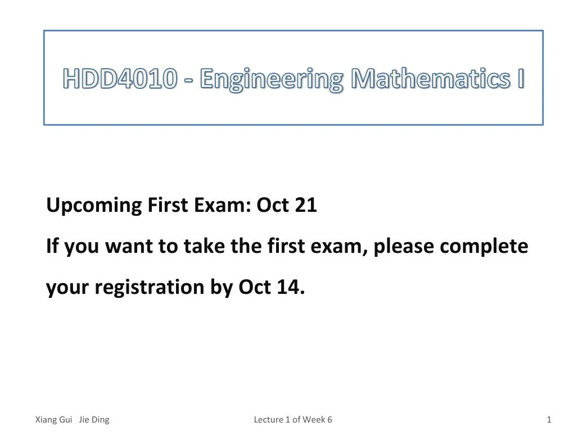
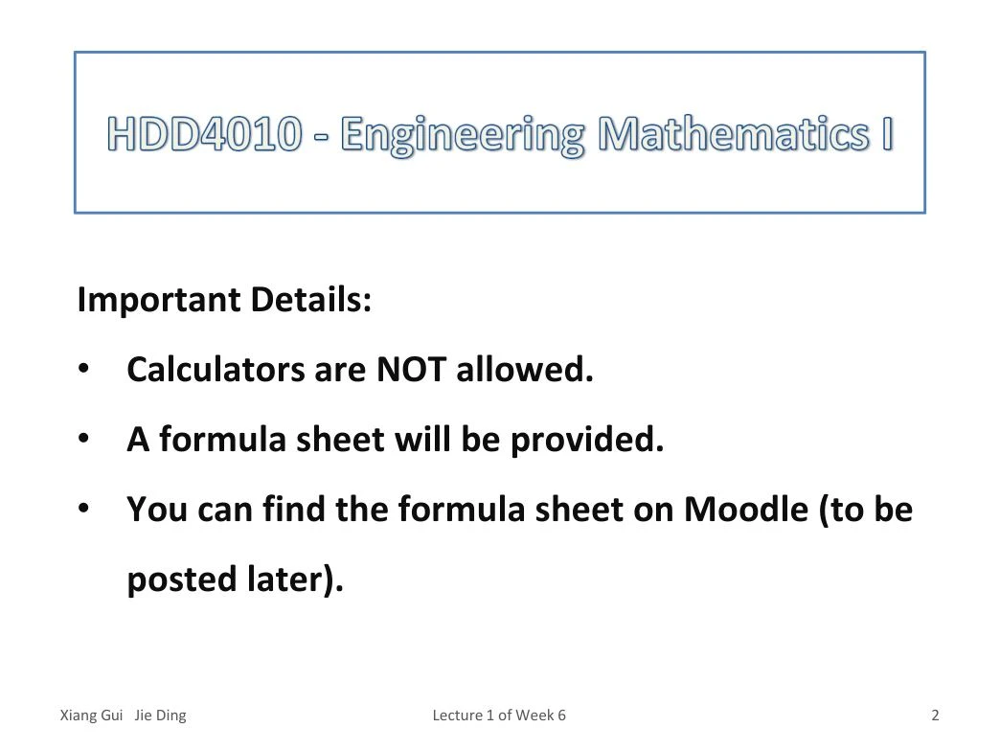


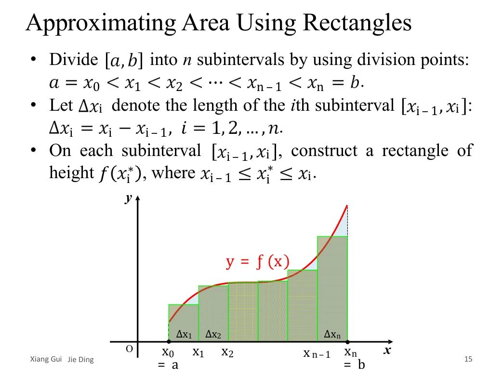
| English | 中文 | 说明 / 例句 |
|---|---|---|
| inverse sine | 反正弦 | y = sin⁻¹x on [−1,1], range [−π/2, π/2]. |
| inverse cosine | 反余弦 | cos⁻¹x = π/2 − sin⁻¹x, range [0, π]. |
| inverse tangent | 反正切 | tan⁻¹x on ℝ, range (−π/2, π/2), horizontal asymptotes ±π/2. |
| hyperbolic cosine | 双曲余弦 | cosh x = (eˣ + e^{−x})/2, even, range [1, ∞). |
| hyperbolic sine | 双曲正弦 | sinh x = (eˣ − e^{−x})/2, odd, range ℝ. |
| fundamental identity | 双曲基本恒等式 | cosh²x − sinh²x = 1. |
| indeterminate form | 未定式 | Limits of type 0/0, ∞/∞, 0·∞, ∞−∞, 0⁰, ∞⁰, 1^∞. |
| Cauchy mean-value theorem | 柯西中值定理 | [f(b)−f(a)]/[g(b)−g(a)] = f′(c)/g′(c). |
| L’Hôpital’s rule | 洛必达法则 | For 0/0 or ∞/∞, lim f/g = lim f′/g′. |
| logarithmic limit | 对数化处理 | For powers, take ln y, find the limit, then exponentiate. |
| Riemann sum | 黎曼和 | Σ f(xᵢ*)Δxᵢ approximating the area under the graph. |
| partition | 分割 | A finite set a = x₀ < x₁ < ⋯ < xₙ = b; its norm is max Δxᵢ. |
| lower and upper sums | 下和与上和 | Σ mᵢΔxᵢ and Σ MᵢΔxᵢ bracketing the true area. |
| definite integral | 定积分 | The unique number I with L(f,P) ≤ I ≤ U(f,P) for every partition. |
| integrable | 可积 | A definite integral exists; every continuous function on [a,b] is integrable. |
(a) 4π/5 不在主值区间 [−π/2, π/2]，不能直接抵消。用补角公式：sin(4π/5) = sin(π − 4π/5) = sin(π/5)。
而 π/5 ∈ [−π/2, π/2]，故 sin⁻¹(sin 4π/5) = sin⁻¹(sin π/5) = π/5。
(b) 令 θ = sin⁻¹ x，则 sin θ = x、θ ∈ [−π/2, π/2]。在该区间 cos θ ≥ 0，故 cos θ = √(1 − sin²θ) = √(1 − x²)，取正号。
要点：反三角复合题一律「先判断角是否在主值区间 → 用诱导公式折回 → 再抵消」；开方时用主值区间的符号确定正负。
(a) 代入得 0/0。一次洛必达：(1/x)/(2x) = 1/(2x²)，令 x → 1 得 1/2。
(b) 代入得 0/0。一次：(eˣ − e^{−x})/(2 sin 2x)（仍是 0/0）；二次：(eˣ + e^{−x})/(4 cos 2x)。令 x → 0：(1+1)/(4·1) = 1/2。
(c) 代入得 0/0（cos x → 0⁺）。一次：2/(−sin x)，令 x → π/2⁻ 得 2/(−1) = −2。
要点：每用一次都要重新检查是否仍是未定式；一旦不再是（如 (c) 第二次已是有限值），立刻停止并代值。
(a) 这是 1^∞ 型。设 y = (1+3x)^{1/(2x)}，则 ln y = ln(1+3x)/(2x)。
洛必达：(3/(1+3x))/2 → 3/2（令 x → 0）。故 y → e^{3/2}。
(b) 这是 0⁰ 型。ln y = x ln x，由上节结果 x ln x → 0，故 y → e⁰ = 1。
(c) 这是 1^∞ 型（sin(3/x) → 0）。ln y = x ln(1 + sin(3/x))。用 ln(1+u) ≈ u（u → 0）：ln y ≈ x sin(3/x) ≈ x·(3/x) = 3，故 y → e³。
统一模板：取对数 → 变成 0·∞ → 改写成商 → 洛必达或等价化简 → 取指数。三步走，所有幂型未定式都适用。
把 [0, b] 等分，Δx = b/n，分割点 xᵢ = ib/n（i = 0, …, n）。
取右端点作样本点 xᵢ* = ib/n，矩形高 (ib/n)²，黎曼和
Sₙ = Σ_{i=1}^{n}(ib/n)²(b/n) = (b³/n³)Σ_{i=1}^{n}i²。
代入 Σi² = n(n+1)(2n+1)/6：Sₙ = b³(n+1)(2n+1)/(6n²)。
令 n → ∞：(n+1)(2n+1)/(6n²) → 2/6 = 1/3，故面积 = b³/3。
检验：b = 1 时 1/3；b = 3 时 9。量纲检查：面积应与 b³ 同量纲，因为曲线是 y = x²（长度²），再乘长度得长度³——结果形式合理。
- 求
d/dx tan⁻¹(3x)；并写出∫dx/(x² + 9)。 - 已知
cosh x = 5/4，求cosh 2x与sinh 2x。 - 用洛必达法则求
lim_{x→0}(sin x − x)/x³。 - 用洛必达法则求
lim_{x→0}(tan x − x)/x³。 - 求
lim_{x→1⁺}(1/ln x − 1/(x−1))。 - 用黎曼和求
∫₀¹ x² dx，并用定积分性质计算∫_{−2}^{2}(x³ + x) dx。
答案与思路
1. d/dx tan⁻¹(3x) = 3/(1 + 9x²)；∫dx/(x²+9) = (1/3)tan⁻¹(x/3) + C（公式 ∫dx/(a²+x²) = (1/a)tan⁻¹(x/a)，此处 a = 3）。
2. cosh2x = 2(5/4)² − 1 = 50/16 − 1 = 17/8；sinh²2x = (17/8)² − 1 = 225/64，故 sinh2x = ±15/8（符号取决于 x 的正负，题目未给则写 ±）。
3. 三次洛必达：(sin x − x)/x³ → (cos x − 1)/(3x²) → (−sin x)/(6x) → (−cos x)/6 → −1/6。
4. (tan x − x)/x³ → (sec²x − 1)/(3x²) = tan²x/(3x²) → (1/3)(tan x/x)² → 1/3。注意第二步用了 sec²x − 1 = tan²x，这比继续求导更快。
5. 通分：(x − 1 − ln x)/((x−1)ln x)。第一次洛必达得 (1 − 1/x)/(ln x + 1 − 1/x)（仍是 0/0），第二次得 (1/x²)/(1/x + 1/x²) = 1/(x+1)，令 x → 1⁺ 得 1/2。也可用展开 ln x ≈ (x−1) − (x−1)²/2 直接看出结果，两种做法互相印证。
6. 黎曼和：Sₙ = (1/n³)Σi² = (n+1)(2n+1)/(6n²) → 1/3。∫_{−2}^{2}(x³+x)dx = 0：被积函数是奇函数（(−x)³ + (−x) = −(x³+x)），在对称区间上积分为 0。
sin⁻¹、cos⁻¹、tan⁻¹ 的导数与三个配套积分公式；②反三角复合（主值区间问题）；③双曲函数恒等式与导数；④洛必达处理 0/0、∞/∞、0·∞、∞−∞、幂型；⑤黎曼和求面积；⑥定积分性质（尤其奇偶性）。sin⁻¹(sin 4π/5) ≠ 4π/5，必须先用诱导公式折算回主值区间。lim ln y = L 后必须写 lim y = e^L，很多人停在 L 上。b/n 而不是 1；Σi² 的上限是 n（右端点）或 n−1（左端点），两者极限相同但中间式子不同。sin x ≈ x、tan x ≈ x、1 − cos x ≈ x²/2、ln(1+u) ≈ u、e^u − 1 ≈ u。先用等价量判断阶数，再用洛必达收尾，通常能少求一两次导。方法与清单
处理未定式（先分类，再选工具）
- 代入判断类型：
0/0、∞/∞、0·∞、∞−∞、0⁰、∞⁰、1^∞ 0·∞改写成商；∞−∞通分或乘共轭；幂型取对数化成0·∞- 变成
0/0或∞/∞后才用洛必达，每用一次重新检查类型 - 若洛必达越用越乱，改回代数变形或三角恒等式化简
反三角复合（三步）
- 看内层角是否落在主值区间（arcsin 为
[−π/2, π/2]，arccos 为[0, π]） - 不在则用周期性或诱导公式把角折回主值区间
- 抵消后若需开方（如
cos(sin⁻¹x)），符号由主值区间决定
黎曼和求面积（四步）
- 等分区间，写出
Δx与分割点xᵢ - 选样本点（左端、右端或中点），写出矩形高
f(xᵢ*) - 写出和式并代入
Σ1 = n、Σi、Σi²等公式化简 - 令
n → ∞取极限，并用特殊值或量纲检查结果
| 源文件 | 页码 | 覆盖知识点 |
|---|---|---|
| Topic 6/EMI_Week6_Lecture1.pdf | p1–p2 | 第一次考试时间与报名截止、不允许计算器、公式表 |
| Topic 6/EMI_Week6_Lecture1.pdf | p4–p8 | 反三角函数的必要性、arcsin 的定义域值域与图像、反三角复合两例 |
| Topic 6/EMI_Week6_Lecture1.pdf | p9–p10 | arcsin 导数证明、sin⁻¹(x/a) 的导数与 ∫dx/√(a²−x²) |
| Topic 6/EMI_Week6_Lecture1.pdf | p11–p15 | arccos 的定义与互补关系、其导数；arctan 的定义、渐近线、导数与积分公式 |
| Topic 6/EMI_Week6_Lecture1.pdf | p16–p17 | 双曲函数的定义、奇偶性、基本恒等式、图像与渐近行为 |
| Topic 6/EMI_Week6_Lecture1.pdf | p18–p19 | cosh 与 sinh 的导数推导、cosh2x 恒等式、由 cosh x 求 sinh 2x |
| Topic 6/EMI_Week6_Lecture1.pdf | p20–p21 | 未定式概念、七种类型及其代表例 |
| Topic 6/EMI_Week6_Lecture1.pdf | p22–p25 | 柯西中值定理、辅助函数与罗尔定理证明、MVT 作为特例 |
| Topic 6/EMI_Week6_Lecture1.pdf | p26–p29 | 洛必达法则的陈述、0/0 型的证明、∞/∞ 与 x→∞ 的说明 |
| Topic 6/EMI_Week6_Lecture1.pdf | p30–p32 | 三个 0/0 型例子、重复使用法则、四道任务与「不要滥用」的警告 |
| Topic 6/EMI_Week6_Lecture2.pdf | p2–p4 | ∞/∞ 型与 0·∞ 改写、4tan x/(1+sec x) 的恒等式化简、四道 0·∞ 任务 |
| Topic 6/EMI_Week6_Lecture2.pdf | p5–p7 | ∞−∞ 型的通分处理、两个例子与四道任务 |
| Topic 6/EMI_Week6_Lecture2.pdf | p8–p13 | 幂型 0⁰、∞⁰、1^∞ 的四步法、三个例子与四道任务 |
| Topic 6/EMI_Week6_Lecture2.pdf | p14–p20 | 面积问题、分割与样本点、黎曼和、y = x² 的完整计算 |
| Topic 6/EMI_Week6_Lecture2.pdf | p21–p23 | 分割的范数、下和与上和、x² 的上下和、夹逼到 b³/3 |
| Topic 6/EMI_Week6_Lecture2.pdf | p24–p28 | 定积分定义与记号、几何意义（有向面积）、六条性质、连续 ⇒ 可积、积分中值定理 |
| （跳过）Topic 6 中纯图片页与 _info 页面 | — | p4–p5 等图形页按相邻文字复原；Lecture One/Two.html 为登录页快照 |
| （拓展） | — | 七种未定式的处理流程图、双曲函数的积分公式与黎曼和的分割范数讨论为衔接性补充 |
第 4 章 积分 1 讲 章节页 →
第 4 章 · 微积分基本定理与积分方法
Fundamental Theorem of Calculus and Techniques of Integration 第 4 章 积分
本节定位
第 6 讲把定积分定义成黎曼和的极限，但那个定义几乎不能用来算题——除了 x² 这类极简单的函数，求和公式都不存在。本讲给出真正的计算工具：微积分基本定理（FTC）把定积分转成「找原函数 + 代端点」，随后是换元、分部积分、三角积分、三角代换与部分分式五套方法，覆盖本课程所有积分题。
这五套方法不是并列的选项，而是一棵决策树：先看被积函数的结构（复合、乘积、三角幂、根式、有理式），再决定用哪一套。本讲会把判断顺序写清楚，并在 checklist 里给出可执行流程。
学完本节你应当能够：
- 陈述并证明 FTC 的两个部分，用它计算定积分并求函数在区间上的平均值（含分段连续函数）
- 用换元法（定积分要同时换上下限）计算复合型积分
- 用分部积分处理「多项式 × 指数/三角/对数/反三角」型积分
- 按幂次奇偶选择三角积分的代换，必要时用倍角公式降幂
- 用
a sin θ、a tan θ、a sec θ消除根式 - 把有理函数拆成部分分式并逐项积分
7.1 微积分基本定理（第一部分）
设 f 在含点 a 的区间 I 上连续，定义累积函数
F(x) = ∫ₐˣ f(t) dt（x ∈ I）。
FTC 第一部分：F′(x) = f(x)。也就是说，累积函数是 f 的一个原函数——「先积分再求导」会回到原函数。
证明：由导数定义
F′(x) = lim_{h→0}[F(x+h) − F(x)]/h = lim_{h→0}(1/h)∫ₓ^{x+h} f(t)dt。
由积分中值定理，∫ₓ^{x+h} f(t)dt = h·f(ξ)，其中 ξ 在 x 与 x+h 之间；当 h → 0 时 ξ → x，由 f 的连续性得 f(ξ) → f(x)。故 F′(x) = f(x)。
直观解释（源文件）：若 x(t) 是位置，则 ∫ₐᵇ x′(t)dt 把「速度表读数」按时间累加，得到「从 t = a 到 t = b 走了多远」。FTC 说的就是「速度的累积等于位移」，这正是里程表与速度表的关系。
7.2 微积分基本定理（第二部分）
FTC 第二部分：若 F 是 f 在 I 上的任一原函数（即 F′ = f），则
∫ₐᵇ f(x)dx = F(b) − F(a)。
证明：设 G(x) = ∫ₐˣ f，由第一部分 G′ = f，故 F − G 的导数为 0，即为常数 C：F = G + C。取 x = a 得 0 = G(a) = F(a) − C，故 C = −F(a)。于是 G(b) = F(b) − F(a)。
求值符号：F(x)|ₐᵇ = F(b) − F(a)。写题时标准格式是 ∫ₐᵇ f(x)dx = [F(x)]ₐᵇ = F(b) − F(a)。
7.3 函数的平均值
若 f 在 [a, b] 上可积，则它在区间上的平均值（average / mean value）为
f̄ = (1/(b−a))∫ₐᵇ f(x)dx。
源文件例：求 f(x) = √x 在 [1, 5] 上的平均值。
f̄ = (1/4)∫₁⁵ √x dx = (1/4)·(2/3)x^{3/2}|₁⁵ = (1/6)(5√5 − 1)。
（源文件把结果写成 (5√5 − 1)/6，是一样的。）注意平均值不是「端点的平均」，也不是「中点的函数值」。
7.4 分段连续函数
若 f 在 [a, b] 上只有有限个间断点、在间断点之间连续，且在每个间断点处的单侧极限存在（有限），则称 f 在 [a, b] 上分段连续（piecewise continuous）。分段连续函数可积，且积分可以按段相加。
源文件例：f(x) = √(1−x²)（0 ≤ x ≤ 1）、f(x) = 2（1 < x ≤ 2）、f(x) = x − 2（2 < x ≤ 3），求 ∫₀³ f。
∫₀³ f = ∫₀¹√(1−x²)dx + ∫₁²2dx + ∫₂³(x−2)dx。
第一段是单位圆在第一象限的四分之一，面积 π/4（用几何意义而非原函数，因为 √(1−x²) 的原函数要用三角代换，见 7.16）；第二段 = 2(2−1) = 2；第三段 = (1/2)(1)(1) = 1/2。故
∫₀³ f = π/4 + 2 + 1/2 = π/4 + 5/2。
7.5 用 FTC 计算定积分
源文件例 1(a)：∫₀²(x² − x)dx = [x³/3 − x²/2]₀² = 8/3 − 2 = 2/3。
源文件例 1(b)：∫₋₁²(x² − 3x + 2)dx = [x³/3 − 3x²/2 + 2x]₋₁² = (8/3 − 6 + 4) − (−1/3 − 3/2 − 2) = 2/3 − (−23/6) = 9/2。
第二题最容易错在「代下限」时的符号：先把原函数在 a 处的值整体算出，再用 F(b) − F(a)，不要在式子中间随手加减。
7.6 曲线下方的面积
源文件例 2：求 y = 3x − x² 在 x 轴上方部分的面积。先找 x 截距：3x − x² = x(3 − x) = 0，得 x = 0, 3；在 (0, 3) 内 3x − x² > 0，故
A = ∫₀³(3x − x²)dx = [3x²/2 − x³/3]₀³ = 27/2 − 9 = 9/2。
要点：面积题必须先定积分区间（找交点或截距），再确认被积函数在该区间上非负；否则会用「有向面积」算出错误的正负。
7.7 两曲线之间的面积
源文件例 3：求 y = 5/(x²+1) 与 y = 1 在 x = −2 到 x = 2 之间的面积。先求交点：5/(x²+1) = 1 得 x² = 4，x = ±2。在该区间上 5/(x²+1) ≥ 1，故
A = ∫₋₂²[5/(x²+1) − 1]dx = 2∫₀²[5/(x²+1) − 1]dx（被积函数为偶函数）。
原函数：5tan⁻¹x − x。故 A = 2[5tan⁻¹2 − 2]。
上函数 − 下函数；若不确定谁在上，先在区间内取一个测试点算两者的值。若两曲线在区间内交叉，必须分段积分，否则会正负抵消。7.8 定积分的换元法
若 u = g(x) 在 [a, b] 上可导、g′ 连续，f 在 g 的值域上连续，则
∫ₐᵇ f(g(x))g′(x)dx = ∫_{g(a)}^{g(b)} f(u)du。
证明：设 F 是 f 的原函数，则 (F∘g)′ = f(g(x))g′(x)（链式法则），由 FTC：
∫ₐᵇ f(g(x))g′(x)dx = F(g(b)) − F(g(a)) = ∫_{g(a)}^{g(b)} f(u)du。
关键差别：定积分换元必须同时把上下限换成 u 的值，换完直接算，不需要再换回 x。若坚持换回 x，就要把上下限也换回来（多一步、易错）。
源文件例：∫₀⁸ cos√(x+1)/√(x+1) dx。令 u = √(x+1)，则 du = dx/(2√(x+1))，即 dx/√(x+1) = 2du。
换限：x = 0 → u = 1；x = 8 → u = 3。于是
∫₀⁸ ... = 2∫₁³ cos u du = 2[sin u]₁³ = 2(sin3 − sin1)。
7.9 不定积分的换元与三道任务
不定积分换元后必须换回原变量（因为答案要以 x 表示），并加 C。源文件三道任务：
∫(2x−3)/√(x²−3x+1) dx：令u = x²−3x+1，du = (2x−3)dx，得∫u^{−1/2}du = 2√u + C = 2√(x²−3x+1) + C∫dx/√(6x−x²)：配方6x−x² = 9 − (x−3)²，令u = x−3，得sin⁻¹((x−3)/3) + C∫(2x−1)/√(1−x²) dx：拆成2∫x/√(1−x²)dx − ∫dx/√(1−x²)，前者令u = 1−x²得−2√(1−x²)，后者为sin⁻¹x，故−2√(1−x²) − sin⁻¹x + C
第三题示范了「拆项」技巧：一个积分拆成两个各自可算的部分，比分母整体换元更省力。
7.10 三角函数的积分
四个基本结果（源文件给出并推导前两个）：
| 积分 | 结果 | 代换 |
|---|---|---|
∫tan x dx | ln|sec x| + C | u = cos x |
∫cot x dx | ln|sin x| + C | u = sin x |
∫sec x dx | ln|sec x + tan x| + C | u = sec x + tan x |
∫csc x dx | −ln|csc x + cot x| + C | u = csc x − cot x |
∫tan x dx：∫(sin x/cos x)dx，令 u = cos x、du = −sin x dx，得 −∫du/u = −ln|u| = −ln|cos x| = ln|sec x|。
∫sec x dx：分子分母同乘 (sec x + tan x)，得 ∫(sec²x + sec x tan x)/(sec x + tan x)dx；令 u = sec x + tan x，则 du 恰为分子，故 = ln|u| = ln|sec x + tan x|。这个「乘一个巧妙的因子」是本节唯一的技巧点，记不住可以现场推。
7.11 sinᵐx cosⁿx 型
按幂次奇偶分三种情形：
- m 为奇数：留一个
sin x与dx配对，其余用sin² = 1 − cos²转成 cos，令u = cos x - n 为奇数：对称处理，令
u = sin x - m、n 都是偶数：用倍角公式降幂：
sin²x = (1 − cos2x)/2、cos²x = (1 + cos2x)/2
源文件例 (a)：∫sin³x cos⁸x dx。sin 的幂为奇，令 u = cos x，du = −sin x dx：
∫sin³x cos⁸x dx = ∫(1 − cos²x)cos⁸x sin x dx = −∫(1 − u²)u⁸du = ∫(u¹⁰ − u⁸)du，
故 = u¹¹/11 − u⁹/9 + C = (1/11)cos¹¹x − (1/9)cos⁹x + C。
源文件例 (b)：∫cos⁴x dx。用倍角公式：cos⁴x = [(1 + cos2x)/2]² = (1 + 2cos2x + cos²2x)/4；再对 cos²2x 用一次倍角：= (1 + cos4x)/2。于是
∫cos⁴x dx = (1/4)∫[1 + 2cos2x + (1 + cos4x)/2]dx = (3/8)x + (1/4)sin2x + (1/32)sin4x + C。
7.12 secᵐx tanⁿx 型与 cscᵐx cotⁿx 型
secᵐ tanⁿ：若 n 为偶数，留 sec²x dx，令 u = tan x；若 m 为偶数，留 sec²x 转成 1 + tan²；若 m 为奇数、n 为偶数，用分部积分。恒等式：sec² = 1 + tan²。
例：∫sec⁴x dx = ∫(1 + tan²x)sec²x dx，令 u = tan x，得 ∫(1 + u²)du = u + u³/3 = tan x + (1/3)tan³x + C。
cscᵐ cotⁿ：若 n 为偶数，留 csc²x dx，令 u = cot x；若 m 为奇数，令 u = csc x；恒等式 csc² = 1 + cot²。
例：∫csc³x cot³x dx = ∫csc²x·cot²x·csc x cot x dx，令 u = csc x、du = −csc x cot x dx，且 cot² = u² − 1：
= −∫u²(u² − 1)du = ∫(u² − u⁴)du = u³/3 − u⁵/5 + C = (1/3)csc³x − (1/5)csc⁵x + C。
源文件另一道任务：∫(sec x + tan x)²dx。展开得 sec²x + 2sec x tan x + tan²x，用 tan² = sec² − 1 化为 2sec²x + 2sec x tan x − 1，逐项积分得 2tan x + 2sec x − x + C。
产品化公式：∫sin2x cos3x dx 用积化和差 sinA cosB = [sin(A−B) + sin(A+B)]/2，得 (1/2)cos x − (1/10)cos5x + C。
∫√(1 − cos4x)dx（0 ≤ x ≤ π/2）：由 1 − cos4x = 2sin²2x 得被积函数 √2 sin2x（该区间内 sin2x ≥ 0），故积分为 −(√2/2)cos2x + C。
7.13 三角代换：消除根式
当被积函数含下列根式时，用三角代换把根式变成有理式：
| 根式 | 代换 | 化简结果 | θ 的范围 |
|---|---|---|---|
√(a² − x²) | x = a sin θ | a cos θ | [−π/2, π/2] |
√(a² + x²) | x = a tan θ | a sec θ | (−π/2, π/2) |
√(x² − a²) | x = a sec θ | a tan θ | x ≥ a: [0, π/2)；x ≤ −a: (π/2, π] |
记忆方式：画直角三角形。x = a sin θ 时对边 x、斜边 a，邻边 √(a²−x²)；x = a tan θ 时对边 x、邻边 a，斜边 √(a²+x²)；x = a sec θ 时斜边 x、邻边 a，对边 √(x²−a²)。
源文件例 (a)：∫dx/(x²√(16−x²))。令 x = 4sin θ，dx = 4cos θ dθ，√(16−x²) = 4cos θ：
∫ = ∫(4cos θ dθ)/(16sin²θ·4cos θ) = (1/16)∫csc²θ dθ = −(1/16)cot θ + C。
由三角形：cot θ = (邻边)/(对边) = √(16−x²)/x，故 = −√(16−x²)/(16x) + C。
源文件例 (b)：∫dx/√(4+x²)。令 x = 2tan θ，dx = 2sec²θ dθ，√(4+x²) = 2sec θ：
∫ = ∫sec θ dθ = ln|sec θ + tan θ| + C = ln|√(4+x²)/2 + x/2| + C = ln(√(4+x²) + x) + C₁，其中 C₁ = C − ln2。
ln 2 之类的常数，把它并进 C 即可；但必须显式说明「令 C₁ = C − ln2」，否则答案形式与标准答案不一致会被扣分。7.14 分部积分
由乘积法则 (uv)′ = u′v + uv′ 移项、积分，得
∫u dv = uv − ∫v du，或写成 ∫u(x)v′(x)dx = u(x)v(x) − ∫v(x)u′(x)dx。
它的作用是「把不好积的 u dv 换成可能好积的 v du」。选 u 的顺序（源文件虽未明说，但由例题可归纳）：反三角 → 对数 → 幂 → 三角 → 指数（越靠前越适合当 u，因为求导后会变简单）。
源文件例 1(a)：∫x cos x dx。取 u = x、dv = cos x dx，则 du = dx、v = sin x：
= x sin x − ∫sin x dx = x sin x + cos x + C。
源文件例 1(b)：∫x²eˣ dx。取 u = x²、dv = eˣdx，两次分部：
= x²eˣ − 2∫xeˣdx = x²eˣ − 2(xeˣ − ∫eˣdx) = eˣ(x² − 2x + 2) + C。
源文件例 2(a)：∫ln x dx。取 u = ln x、dv = dx，则 du = dx/x、v = x：
= x ln x − ∫x·(1/x)dx = x ln x − x + C。
源文件例 2(b)：∫x tan⁻¹x dx。取 u = tan⁻¹x、dv = x dx，则 du = dx/(1+x²)、v = x²/2：
= (x²/2)tan⁻¹x − (1/2)∫x²/(1+x²)dx = (x²/2)tan⁻¹x − (1/2)∫(1 − 1/(1+x²))dx，
故 = (x²/2)tan⁻¹x − x/2 + (1/2)tan⁻¹x + C = ((x²+1)/2)tan⁻¹x − x/2 + C。
源文件任务：∫x²sin x dx = −x²cos x + 2x sin x + 2cos x + C；∫sin⁻¹x dx = x sin⁻¹x + √(1−x²) + C；∫eˣcos x dx = (1/2)eˣ(sin x + cos x) + C。
最后这个「循环型」值得单独记：两次分部后右边重新出现原积分，把它移到左边解方程即可（系数为 1/2）。
7.15 递推公式
分部积分还可以用来把高次幂降到低次幂，得到递推公式（reduction formula）。源文件推导 ∫sinⁿx dx：取 u = sin^{n−1}x、dv = sin x dx，则 du = (n−1)sin^{n−2}x cos x dx、v = −cos x：
∫sinⁿx dx = −cos x sin^{n−1}x + (n−1)∫cos²x sin^{n−2}x dx，
把 cos² = 1 − sin² 代入，右边的 ∫sinⁿ 移项，得
∫sinⁿx dx = −(1/n)cos x sin^{n−1}x + ((n−1)/n)∫sin^{n−2}x dx。
应用（n = 4）：∫sin⁴x dx = −(1/4)cos x sin³x + (3/4)∫sin²x dx；再用 n = 2：∫sin²x dx = −(1/2)cos x sin x + (1/2)∫dx = −(1/2)sin x cos x + x/2。合并得
∫sin⁴x dx = −(1/4)cos x sin³x − (3/8)sin x cos x + (3/8)x + C，
与用倍角公式得到的 (3/8)x − (1/4)sin2x + (1/32)sin4x + C 等价（展开 sin2x、sin4x 可互相转化）。
7.16 有理函数的积分：第一步永远是除法
形如 ∫P(x)/Q(x)dx 的积分。若 deg P ≥ deg Q，先用多项式除法把它写成「多项式 + 真分式」：
P/Q = S + R/Q，其中 deg R < deg Q。
源文件例：∫(x³ + 3x²)/(x² + 1)dx。除法得 = x + 3 − (x+3)/(x²+1)，故
= x²/2 + 3x − (1/2)ln(x²+1) − 3tan⁻¹x + C。
三个基本公式（分母是一次或二次）：
| 积分 | 结果 |
|---|---|
∫dx/(ax + b) | (1/a)ln|ax + b| + C |
∫x dx/(x² ± a²) | (1/2)ln|x² ± a²| + C |
∫dx/(x² + a²) | (1/a)tan⁻¹(x/a) + C |
∫dx/(x² − a²) | (1/(2a))ln|(x−a)/(x+a)| + C |
7.17 部分分式：四种情形
设 f(x) = P(x)/Q(x) 且 deg P < deg Q（否则先除法）：
- 互不相同的线性因子
Q = (x−a)(x−b)⋯：f = A/(x−a) + B/(x−b) + ⋯ - 重复线性因子
(x−a)²：f = A/(x−a) + B/(x−a)² + ⋯ - 不可约二次因子
ax²+bx+c（判别式 < 0）：f = (Ax+B)/(ax²+bx+c) + ⋯ - 重复不可约二次因子：
f = (Ax+B)/(ax²+bx+c) + (Cx+D)/(ax²+bx+c)² + ⋯
求系数的方法：两边乘以 Q(x) 得到多项式恒等式，再「代入特殊值」或「比较同次项系数」。前者更快，后者更稳。
源文件例（互异线性）：1/(x² − a²) = (1/(2a))[1/(x−a) − 1/(x+a)]，故 ∫ = (1/(2a))ln|x−a| − (1/(2a))ln|x+a| + C。
源文件例（重复线性）：1/(x(x−1)²) = 1/x − 1/(x−1) + 1/(x−1)²。验证：通分后分子 (x−1)² − x(x−1) + x = x² − 2x + 1 − x² + x + x = 1 ✓。故积分为 ln|x| − ln|x−1| − 1/(x−1) + C。
源文件例（不可约二次）：∫dx/(x³+1)。分解 x³+1 = (x+1)(x²−x+1)，设
1/((x+1)(x²−x+1)) = A/(x+1) + (Bx+C)/(x²−x+1)，
解得 A = 1/3、B = −1/3、C = 2/3。二次因子配方：x² − x + 1 = (x − 1/2)² + 3/4。于是
∫ = (1/3)ln|x+1| − (1/6)ln(x²−x+1) + (1/√3)tan⁻¹((2x−1)/√3) + C。
其中二次项的处理技巧：把分子 (−x+2)/3 拆成 −(1/6)(2x−1) + (1/2)，第一块凑成「分母的导数」得到对数，第二块用 tan⁻¹ 公式。
源文件综合例：∫(x³+2)/(x³−x)dx。除法：(x³+2)/(x³−x) = 1 + (x+2)/(x(x−1)(x+1))；部分分式解得 A = −2（对应 1/x）、B = 3/2（对应 1/(x−1)）、C = 1/2（对应 1/(x+1)）。故
= x − 2ln|x| + (3/2)ln|x−1| + (1/2)ln|x+1| + C。
原版图页（源 PDF 插图页）

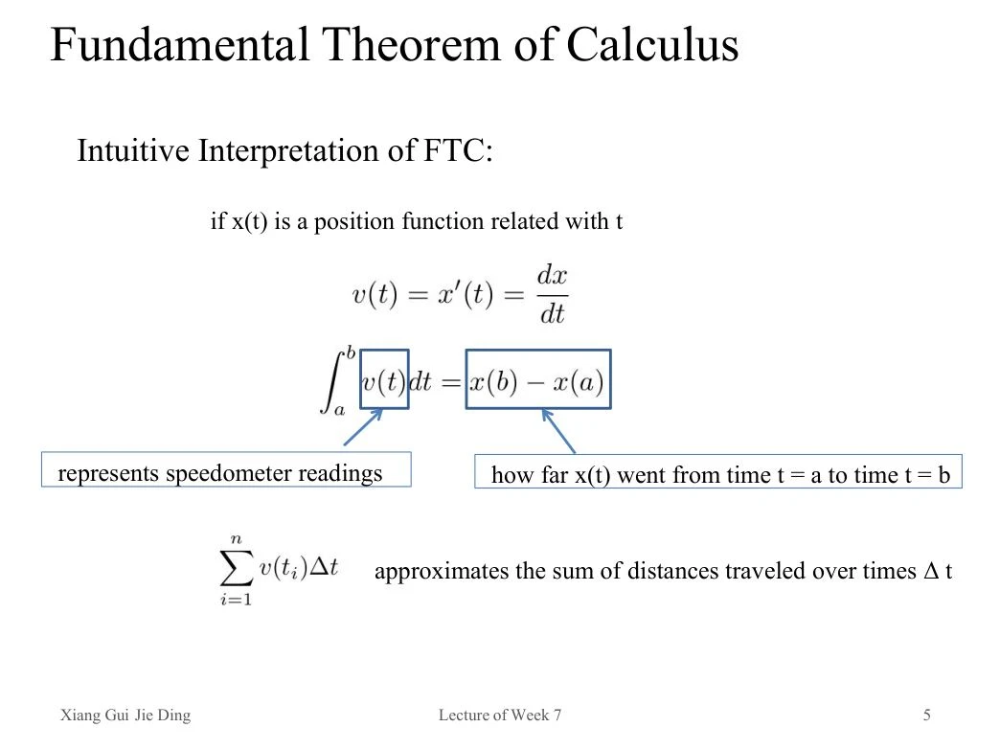
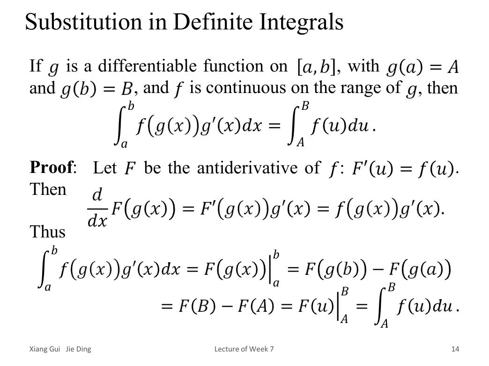

| English | 中文 | 说明 / 例句 |
|---|---|---|
| fundamental theorem of calculus | 微积分基本定理 | d/dx∫ₐˣf = f(x) and ∫ₐᵇf = F(b) − F(a). |
| average value | 平均值 | f̄ = (1/(b−a))∫ₐᵇ f(x)dx. |
| piecewise continuous | 分段连续 | Finitely many discontinuities with finite one-sided limits; integrable. |
| substitution | 换元法 | ∫f(g(x))g′(x)dx = ∫f(u)du; for definite integrals also change the limits. |
| change of limits | 换上下限 | In a definite integral, x = a gives u = g(a), x = b gives u = g(b). |
| integration by parts | 分部积分 | ∫u dv = uv − ∫v du. |
| reduction formula | 递推公式 | Expresses ∫sinⁿ in terms of ∫sin^{n−2}. |
| trigonometric integral | 三角积分 | Choose u = cos x or sin x according to which power is odd. |
| double-angle formula | 倍角公式 | sin²x = (1−cos2x)/2, cos²x = (1+cos2x)/2, used when both powers are even. |
| trigonometric substitution | 三角代换 | x = a sin θ, a tan θ, a sec θ to remove √(a²−x²), √(a²+x²), √(x²−a²). |
| partial fractions | 部分分式 | Decompose P/Q into simple fractions according to the factor type of Q. |
| improper factor | 不可约二次因子 | ax²+bx+c with negative discriminant; its partial fraction has a linear numerator. |
| completing the square | 配方 | ax²+bx+c = a(x + b/2a)² + (c − b²/4a). |
| polynomial division | 多项式除法 | Write P/Q = S + R/Q before decomposing, when deg P ≥ deg Q. |
| improper integral form | 假分式 | deg P ≥ deg Q; must be divided first. |
(a) 原函数 x³/3 − x²/2。代入：[8/3 − 2] − [0] = 2/3。
(b) 原函数 x³/3 − 3x²/2 + 2x。
上端：8/3 − 6 + 4 = 2/3；下端：−1/3 − 3/2 − 2 = −23/6。
相减：2/3 − (−23/6) = 4/6 + 23/6 = 27/6 = 9/2。
要点：先把 F(b) 与 F(a) 各自算成一个数，再做减法；分式运算不要在中途混着做，容易丢负号。
令 u = √(x+1)，则 u² = x + 1、2u du = dx，故 dx/√(x+1) = 2du。
换限：x = 0 → u = 1；x = 8 → u = 3。
原式 = ∫₁³ 2cos u du = 2[sin u]₁³ = 2(sin3 − sin1)。
结果保留精确形式（考试无计算器），不要写 0.28 之类的小数。若题目要求近似，用 sin3 ≈ 0.141、sin1 ≈ 0.841 得 2(−0.700) ≈ −1.40。
对照：若用不定积分换元再回代，会得到 2sin√(x+1)，再代 0 与 8，结果相同——但多一步回代，容易在回代时把 √(x+1) 写成 x+1。
(a) 取 u = x²、dv = eˣdx，v = eˣ：= x²eˣ − 2∫xeˣdx。
对 ∫xeˣdx 再用一次（u = x、dv = eˣdx）：= xeˣ − ∫eˣdx = xeˣ − eˣ。
代回：= x²eˣ − 2(xeˣ − eˣ) + C = eˣ(x² − 2x + 2) + C。
(b) 取 u = tan⁻¹x、dv = x dx，v = x²/2、du = dx/(1+x²)：
= (x²/2)tan⁻¹x − (1/2)∫x²/(1+x²)dx。
拆项：x²/(1+x²) = 1 − 1/(1+x²)，故 ∫ = x − tan⁻¹x。
代回：= (x²/2)tan⁻¹x − x/2 + (1/2)tan⁻¹x + C = ((x²+1)/2)tan⁻¹x − x/2 + C。
要点：分部积分后剩下的积分要「凑成可算的形状」——通常靠拆项、配方或再分部。x²/(1+x²) 的拆项是固定套路。
步骤 1（除法）：(x³+2)/(x³−x) = (x³ − x + x + 2)/(x³−x) = 1 + (x+2)/(x³−x)。
步骤 2（分解分母）：x³ − x = x(x−1)(x+1)。
步骤 3（部分分式）：设 (x+2)/(x(x−1)(x+1)) = A/x + B/(x−1) + C/(x+1)。两边乘分母：x + 2 = A(x−1)(x+1) + Bx(x+1) + Cx(x−1)。
代 x = 0：2 = A(−1)(1)，故 A = −2；代 x = 1：3 = B(1)(2)，故 B = 3/2；代 x = −1：1 = C(−1)(−2)，故 C = 1/2。
步骤 4（逐项积分）：
∫ = ∫1dx − 2∫dx/x + (3/2)∫dx/(x−1) + (1/2)∫dx/(x+1)
= x − 2ln|x| + (3/2)ln|x−1| + (1/2)ln|x+1| + C。
验算：对结果求导，应回到 (x³+2)/(x³−x)；也可取 x = 2 数值核对（结果约 2 − 1.386 + 0 + 0.549 = 1.163，与 10/6 ≈ 1.667？——注意数值核对要连同 C 的任意性一起看，通常验算导数更可靠）。
- 求
∫dx/(x² − 9)。 - 求
∫(2x − 3)/√(x² − 3x + 1) dx。 - 求
∫sin³x cos⁸x dx。 - 求
∫dx/(x²√(16 − x²))。 - 求
∫x² cos(πx) dx。 - 求
∫₀^{π/4} sec⁵x dx（作业七第 4(b) 题）。
答案与思路
1. 分解 1/(x²−9) = (1/6)[1/(x−3) − 1/(x+3)]，故 (1/6)ln|(x−3)/(x+3)| + C。
2. 令 u = x² − 3x + 1、du = (2x−3)dx，得 2√(x²−3x+1) + C。
3. 令 u = cos x：−∫(1−u²)u⁸du = ∫(u¹⁰ − u⁸)du = (1/11)cos¹¹x − (1/9)cos⁹x + C。
4. 令 x = 4sin θ：(1/16)∫csc²θ dθ = −(1/16)cot θ = −√(16−x²)/(16x) + C。
5. 两次分部：u = x²、dv = cos πx dx，得 v = sin πx/π；= (x²/π)sin πx − (2/π)∫x sin πx dx；再对 ∫x sin πx dx 分部（v = −cos πx/π），最终 (x²/π)sin πx + (2x/π²)cos πx − (2/π³)sin πx + C。
6. 用递推公式：∫sec⁵ = (1/4)sec³x tan x + (3/4)∫sec³x，∫sec³ = (1/2)sec x tan x + (1/2)ln|sec x + tan x|。合并后代入上下限：在 π/4 处 sec = √2、tan = 1，得 (1/4)(2√2) + (3/8)(√2) + (3/8)ln(1+√2) = 7√2/8 + (3/8)ln(1+√2)；在 0 处各项为 0。
deg P ≥ deg Q 时必须先除，否则分解形式不成立。sin 奇则 u = cos，cos 奇则 u = sin）；两者都偶时必须降幂，不能硬代换。∫(f − g) 会在交叉处出现负面积抵消。方法与清单
定积分计算（四步）
- 先看能否直接用基本公式或 FTC：找原函数
- 复合型先换元；若做定积分换元，立即把上下限换成新变量并写清新限
- 分段函数按段积分再相加；含绝对值先按零点分段去绝对值
- 用几何意义（面积、奇偶性）交叉验证结果的正负与量级
分部积分的 u 选择顺序
- 优先级：反三角函数 → 对数函数 → 幂函数（多项式）→ 三角函数 → 指数函数，越靠前越适合作 u
- 把剩下的部分整体作 dv，并确认 dv 容易积分出 v
- 套
uv − ∫v du，检查新积分是否比原积分更简单 - 若新积分与原积分同型（如
eˣcos x），移项解出原积分
有理函数积分（四步）
- 若
deg P ≥ deg Q，先做多项式除法 - 把 Q 在实数范围内分解成线性因子与不可约二次因子的乘积
- 按因子类型写出部分分式（互异线性、重复线性、不可约二次、重复二次）
- 用代特殊值或比较系数求系数，逐项积分（对数项 + tan⁻¹ 项）
| 源文件 | 页码 | 覆盖知识点 |
|---|---|---|
| Topic 7/EMI_Week7_Lecture.pdf | p2–p3 | 黎曼和与定积分定义的复习 |
| Topic 7/EMI_Week7_Lecture.pdf | p4–p7 | FTC 两部分、直觉解释、第一部分的证明、求值符号 |
| Topic 7/EMI_Week7_Lecture.pdf | p8 | 平均值定义与 √x 在 [1,5] 上的例子 |
| Topic 7/EMI_Week7_Lecture.pdf | p9–p10 | 分段连续函数与三分段例题 |
| Topic 7/EMI_Week7_Lecture.pdf | p11–p13 | 两道定积分计算、y = 3x−x² 的面积、两曲线间面积 |
| Topic 7/EMI_Week7_Lecture.pdf | p14–p16 | 定积分换元定理与证明、∫₀⁸ 的例题、三道换元任务 |
| Topic 7/EMI_Week7_Lecture.pdf | p17–p24 | ∫tan/cot/sec/csc 的公式与推导、sinᵐcosⁿ 策略与两例、secᵐtanⁿ 与 cscᵐcotⁿ 策略与两例、三道三角积分任务 |
| Topic 7/EMI_Week7_Lecture.pdf | p25–p28 | 三类三角代换与三角形图示、两个根式积分例子 |
| Topic 7/EMI_Week7_Lecture.pdf | p29–p33 | 分部积分的推导与 Leibniz 写法、四道例题、三道任务 |
| Topic 7/EMI_Week7_Lecture.pdf | p36–p37 | ∫sinⁿ 的递推公式推导与 ∫sin⁴ 的应用 |
| Topic 7/EMI_Week7_Lecture.pdf | p38–p40 | 有理函数与除法算法、(x³+3x²)/(x²+1)、线性与二次分母公式、互异线性因子的部分分式 |
| Topic 7/EMI_Week7_Lecture.pdf | p41–p42 | (x³+2)/(x³−x) 的四步分解与积分 |
| Topic 7/EMI_Week7_Lecture.pdf | p43–p45 | 重复线性因子、不可约二次因子、重复二次因子的部分分式形式 |
| Topic 7/EMI_Week7_Lecture.pdf | p46–p48 | 1/(x³+1) 的部分分式、配方与最终结果 |
| Topic 7/EMI_Week7_Lecture.pdf | p49–p50 | 六道综合任务（4x²+13x−9 型、1/(x(x−1)²) 型等）及答案 |
| Topic 7/EMI_7.pdf | p1 | 作业七的五道题（平均值、sgn 与 |cos| 的定积分、三角幂、分部积分、有理函数） |
| Topic 7/EM_7_sol.pdf | p1–p3 | 作业七的完整解答：π/4、1、8、sin 幂代换、sec⁵tan、x²cos πx、∫₀^{π/4}sec⁵、三个有理函数积分 |
| （跳过）Topic 7/Lecture One.html、Exercise Seven.html、Exercise Seven Solutions.html | — | 均为 Moodle 登录页快照，无可读正文；作业与解答以 EMI_7.pdf、EM_7_sol.pdf 为准 |
| （拓展） | — | 分部积分的 u 选择顺序、积分方法决策树、secⁿ 递推公式为归纳性补充，源文件以例题形式呈现 |
第 5 章 模拟卷与题型 1 讲 章节页 →
第 5 章 · 模拟卷与题型
Mock Exam and Question Types 第 5 章 模拟卷与题型
本节定位
这是全课程的收束讲。前面七讲按 Topic 推进，本讲换成「考试视角」：把官方模拟卷（MockExam.pdf）与官方答案（MockExam_answers.pdf）逐题拆开，说明每道题考的是哪一讲的哪个知识点、评分点在哪里、常见失分是什么。
模拟卷的结构很稳定：总分 60，六道题等分（每题 10 分），全部必答；不允许使用计算器，考场提供公式表；评分要求「写出所用公式、代入过程与中间步骤」，只写最终答案不给分。因此本讲不仅给答案，更给「应该写成什么样的解题过程」。
学完本节你应当能够：
- 在无计算器条件下写出精确形式的答案（含 e、ln、√、π）
- 把六道模拟题的解法压缩成可复用的模板
- 识别每道题背后的章节与考点，遇到同型题能立刻定位方法
- 按评分要求组织解题过程（公式 → 代换 → 中间步骤 → 结论）
- 判断哪些题必须先做、哪些可以最后收尾，合理分配时间
8.1 试卷结构与评分规则
官方模拟卷的抬头写得很明确：总分 60 分；不允许使用计算器（Calculators are not allowed）；解答必须包含所用公式、代换与中间步骤（Solutions must include the applied formulas, substitutions, and intermediate steps），只提交最终答案不可接受；全卷六题，全部必答，每题等分。
这四条规则直接决定答题策略：
- 无计算器：答案写精确式，例如
10ln(3/2)/ln2而不是5.85；特殊值（sin(π/6) = 1/2、ln1 = 0、e⁰ = 1）必须脱口而出 - 要写公式：每道积分题第一行就写「用分部积分
∫u dv = uv − ∫v du」或「用部分分式」 - 要写代换：换元题必须写明
u = …、du = …，定积分换元还要写「x = a → u = …」 - 要写中间步骤：即使心算得出结果，也要把关键的一两行写出来，否则按「只有答案」处理
六道题的分值分布与考点（按官方答案顺序）：第 1 题—分部积分 + 反函数导数；第 2 题—有理函数积分 + 平均值；第 3 题—牛顿冷却 + 运动学判断；第 4 题—重要极限 + 定义域值域 + 无穷远极限；第 5 题—一阶线性微分方程（广义指数模型）+ 切线与法线；第 6 题—可去间断 + 可导条件 + 二阶初值问题。可以看出：六道题几乎覆盖了全部七个 Topic，每题内部又各有「计算 + 概念」两部分。
8.2 公式表里有什么（以及为什么够用）
模拟卷附了一张「List of Potentially Useful Formulas」，内容按主题排列，可以视为本课程的官方公式清单：
| 公式组 | 主要内容 | 对应讲次 |
|---|---|---|
| 坐标与直线 | 距离、中点、斜率、垂直条件 m₁m₂ = −1、点斜式、圆 | 第 1 讲 |
| 函数基础 | 奇偶性、复合、sgn、Heaviside、求根公式、代数恒等式 | 第 1 讲 |
| 三角 | 弧度换算、平方关系、周期与奇偶、诱导公式、和角、倍角、积化和差、特殊值表 | 第 1、3 讲 |
| 极限 | 夹逼、sinθ/θ、(cosθ−1)/θ、ln x/xᵃ、xᵃ/eˣ、洛必达、渐近线判据、连续性、可导性、左右导数 | 第 2、6 讲 |
| 求导 | 四则与链式法则、基本导数表（含 |x|、六个三角函数、aˣ、log_a x） | 第 3、5 讲 |
| 积分 | 幂函数、f′/f、1/x、e^{kx}、a^{kx}、四个三角积分、反三角积分、双曲、分部积分、换元、三角代换、有理函数公式、部分分式、配方 | 第 4、6、7 讲 |
| 模型 | 指数增长/衰减、广义模型、logistic 模型、位置-速度-加速度 | 第 4、5 讲 |
| 求和 | Σk² = n(n+1)(2n+1)/6、几何级数、定积分定义、FTC | 第 6、7 讲 |
√(16−x²) 要用 4sinθ」；它列了部分分式的四种形式，但不会提醒你「先做除法」。判断力必须自己带进考场。8.3 第 1 题：分部积分与反函数导数
(a) 求 ∫eˣ sin x dx。这是「循环型」分部积分：两次分部后原积分重现，移项解出。
第一次：取 u = eˣ、dv = sin x dx，则 du = eˣdx、v = −cos x：
I = −eˣcos x + ∫eˣcos x dx。
第二次（对 ∫eˣcos x dx）：取 u = eˣ、dv = cos x dx，v = sin x：
∫eˣcos x dx = eˣsin x − ∫eˣsin x dx = eˣsin x − I。
代回：I = −eˣcos x + eˣsin x − I，故 2I = eˣ(sin x − cos x)，
I = (1/2)eˣ(sin x − cos x) + C，与官方答案一致。
(b) 证明 f(x) = x³ + x − 9 可逆，并求 (f⁻¹)′(1)。
先证一一对应：f′(x) = 3x² + 1 > 0 对一切实数成立，故 f 在 ℝ 上严格递增，从而是一一对应，反函数存在。
再用反函数导数公式 (f⁻¹)′(y) = 1/f′(x)，其中 y = f(x)。要求 (f⁻¹)′(1)，先找 x 使 f(x) = 1：
x³ + x − 9 = 1 ⟺ x³ + x = 10，试 x = 2：8 + 2 = 10 ✓（严格递增保证解唯一）。
于是 (f⁻¹)′(1) = 1/f′(2) = 1/(3·4 + 1) = 1/13，与官方答案一致。
f′ > 0，故严格递增」；②「故一一对应，反函数存在」；③「解 f(x) = 1 得 x = 2」。少任何一句都会扣过程分，即便最后的 1/13 对了。8.4 第 2 题：有理函数积分与平均值
(a) 求 ∫(x³ − 5x² + 4x + 8)/(x² − 6x + 9)dx。分母是 (x−3)²，属于「重复线性因子」。
第一步除法（因为分子次数 3 ≥ 分母次数 2）：设商 x + 1，则 (x+1)(x²−6x+9) = x³ − 5x² + 3x + 9，与原分子相减得余式 x − 1。故
(x³−5x²+4x+8)/(x²−6x+9) = x + 1 + (x−1)/(x−3)²。
第二步把余式拆成重复因子的两块：(x−1)/(x−3)² = (x−3+2)/(x−3)² = 1/(x−3) + 2/(x−3)²。
第三步逐项积分：∫(x+1)dx = x²/2 + x；∫dx/(x−3) = ln|x−3|；∫2(x−3)^{−2}dx = −2/(x−3)。故
= x²/2 + x + ln|x−3| − 2/(x−3) + C，与官方答案一致。
(b) 求 f(x) = 3x − x² 在 [0, 6] 上的平均值。
f̄ = (1/(6−0))∫₀⁶(3x − x²)dx = (1/6)[3x²/2 − x³/3]₀⁶ = (1/6)(54 − 72) = −3。
平均值为负是允许的：函数在 [0, 3] 为正、在 [3, 6] 为负，且负的部分更大（有向面积之和为 −18）。
[0, 6] 误读为 [0, 3]（只取正的部分），会算出 3/2 而不是 −3。8.5 第 3 题：牛顿冷却与运动学
(a) 面包从 200 ℃ 烤箱取出，房间 20 ℃，10 分钟后降到 110 ℃，问到 80 ℃ 还需多久（给精确答案）。
设 T(t) = 20 + 180e^{kt}（环境 20、初值 200，故 y₀ − a = 180）。
由 T(10) = 110：90 = 180e^{10k}，故 e^{10k} = 1/2，k = −ln2/10。
令 T = 80：60 = 180e^{kt}，即 e^{kt} = 1/3，t = 10ln3/ln2（从取出时刻算起）。
题目问「还需多久」，故答案为 10ln3/ln2 − 10 = 10ln(3/2)/ln2 分钟，与官方答案一致；数值约 5.85 分钟。
(b) x(t) = t³ − 6t² + 1，判断 t = 3 时加速还是减速。
v = 3t² − 12t，a = 6t − 12；v(3) = 27 − 36 = −9，a(3) = 18 − 12 = 6。
v 与 a 异号（负、正），速率 |v| 在减小，故减速。官方答案只说「decelerating at t = 3」，过程分要求写出 v 与 a 的符号比较。
8.6 第 4 题：三个极限与函数分析
(a) lim_{x→∞}(1 + 1/x)ˣ。这是 1^∞ 型。设 y = (1+1/x)ˣ，则 ln y = x ln(1 + 1/x)。
令 u = 1/x → 0⁺，则 ln y = ln(1+u)/u → 1（洛必达或标准极限），故 y → e。
这是标准极限 lim(1+1/x)ˣ = e，可直接引用公式表。
(b) 求 g(x) = 12x/(x² + 9) 的定义域与值域。
定义域：分母 x² + 9 > 0 恒成立，故为 (−∞, ∞)。
值域：求导 g′ = [12(x²+9) − 12x·2x]/(x²+9)² = 12(9 − x²)/(x²+9)²。临界点 x = ±3；g(3) = 36/18 = 2（最大），g(−3) = −2（最小）。
又 x → ±∞ 时 g → 0，故值域为 [−2, 2]。官方答案一致。
(c) lim_{x→∞}(x² + sin x)/(x² + cos x)。分子分母同除 x²：
= (1 + sin x/x²)/(1 + cos x/x²)。由夹逼（|sin x| ≤ 1）得 sin x/x² → 0、cos x/x² → 0，故极限为 1/1 = 1。
这题是「夹逼 + 分式」的组合：不能用洛必达（求导后仍在振荡，且分子分母并非同趋于 0 或 ∞ 的干净形式）。
8.7 第 5 题：药物浓度模型与切线法线
(a) dy/dt = a − by，a = 3、b = 1，y(0) = 0。
这是广义模型 dy/dt = k(y − A) 的变体：把右边写成 −1·(y − 3)，即 k = −1、A = 3。由公式 y = A + (y₀ − A)e^{kt}：
y(t) = 3 + (0 − 3)e^{−t} = 3 − 3e^{−t}。
（也可直接分离变量验证：y′ = 3 − y，y(0) = 0，y ≡ 3 是一个特解，通解 y = 3 + Ce^{−t}，代初值得 C = −3。）
(2) 极限浓度：lim_{t→∞}y = 3（e^{−t} → 0）。
(3) 达到一半（1.5）所需时间：3 − 3e^{−t} = 1.5 → e^{−t} = 1/2 → t = ln2。官方答案一致。
(b) 求 y = (1 − x²)/(1 + x²) 在 x = 1 处的切线与法线。
切点：y(1) = 0/2 = 0，即 (1, 0)。
导数（商法则）：y′ = [(−2x)(1+x²) − (1−x²)(2x)]/(1+x²)² = −4x/(1+x²)²；在 x = 1 处 y′ = −4/4 = −1。
切线：y = −1(x − 1) = 1 − x；法线斜率 1，y = 1·(x − 1) = x − 1。与官方答案一致。
8.8 第 6 题：间断点、可导条件与二阶初值问题
(a) f(x) = (3x² − 15x − 18)/(x³ + 1)，找出 x 轴上的间断点，并说明如何补充定义使之连续。
分解：分子 3(x² − 5x − 6) = 3(x−6)(x+1)；分母 x³+1 = (x+1)(x² − x + 1)。
约去 x+1 得 f(x) = 3(x−6)/(x² − x + 1)（x ≠ −1）。分母 x² − x + 1 的判别式 1 − 4 = −3 < 0，无实根，故唯一的间断点是 x = −1。
求极限：lim_{x→−1}f(x) = 3(−7)/(1 + 1 + 1) = −21/3 = −7。因此这是可去间断，重新定义 f(−1) = −7 即可使函数在 −1 处连续。官方答案一致。
(b) 求 a、b 使 f(x) = ax + 1（x < 1）、f(x) = bx² + x + 2（x ≥ 1）在 x = 1 处可导。
可导必连续，先写连续条件（左极限 = 右极限 = 函数值）：a·1 + 1 = b·1 + 1 + 2，即 a + 1 = b + 3，a = b + 2。
再写可导条件（左右导数相等）：左边导数 a；右边导数 2bx + 1 在 1 处为 2b + 1。故 a = 2b + 1。
联立：b + 2 = 2b + 1 → b = 1，a = 3。官方答案 a = 3, b = 1 ✓。
(c) a(t) = 6t − cos t，初速度 2、初始位置 0，求 x(t)。
第一次积分：v(t) = 3t² − sin t + C₁；由 v(0) = 2 得 C₁ = 2。
第二次积分：x(t) = t³ + cos t + 2t + C₂；由 x(0) = 0 得 1 + C₂ = 0，C₂ = −1。
故 x(t) = t³ + 2t + cos t − 1，与官方答案一致。
8.9 题型分布与章节映射
| 题号 | 考点 | 所属讲次 | 主要方法 |
|---|---|---|---|
| 1(a) | 指数 × 三角的循环分部积分 | 第 7 讲 | 两次分部 + 移项 |
| 1(b) | 反函数存在性与反函数导数 | 第 3、5 讲 | f′ > 0 + 1/f′(y) |
| 2(a) | 假分式 + 重复线性因子 | 第 1、7 讲 | 除法 + 拆项 + 对数 |
| 2(b) | 定积分求平均值 | 第 7 讲 | FTC + 代端点 |
| 3(a) | 牛顿冷却（广义指数模型） | 第 5 讲 | 求 k 再求 t，注意「还需」 |
| 3(b) | 速度与加速度的符号 | 第 4 讲 | v、a 异号即减速 |
| 4(a) | 1^∞ 型极限 | 第 6 讲 | 取对数或标准极限 |
| 4(b) | 有理函数的定义域与值域 | 第 1、4 讲 | 求导找极值 + 无穷远行为 |
| 4(c) | 含振荡项的无穷远极限 | 第 2 讲 | 同除最高次 + 夹逼 |
| 5(a) | 一阶线性微分方程 / 广义模型 | 第 5 讲 | 通解 + 初值 + 极限 |
| 5(b) | 切线与法线 | 第 3 讲 | 商法则 + 点斜式 |
| 6(a) | 可去间断与补充定义 | 第 1、2 讲 | 分解约分 + 极限 |
| 6(b) | 分段函数的可导条件 | 第 2、3 讲 | 连续 + 左右导数相等 |
| 6(c) | 二阶初值问题 | 第 4 讲 | 两次积分 + 两个常数 |
观察这张表：六道大题共 14 个小问，其中积分类（1a、2a、2b）占 3 问、极限类（4a、4c）2 问、导数应用类（3b、5b、6b）3 问、模型类（3a、5a）2 问、函数与连续性（4b、6a）2 问、初值问题（6c）1 问、反函数（1b）1 问。也就是说，第 7 讲的积分方法、第 4–5 讲的导数应用与模型、第 2 讲的极限各占约三分之一，没有任何一讲可以放弃。
8.10 答题顺序与时间分配
六题等分，因此理论上每题时间相同；但难度差异明显。建议的顺序是先扫一遍全卷，按「一眼能下手」排序：
- 先做 4(b)、5(b)、6(c)、3(b) 这类「流程固定、计算量小」的小问，拿到基本分；
- 再做 2(b)、4(a)、4(c) 这类「一步到位」的极限与定积分；
- 然后做 6(a)、6(b)，注意写全「连续 + 可导」两条；
- 最后攻 1(a)、2(a)、5(a) 这类步骤多、容易算错的大题，留足检查时间。
每题至少留一分钟检查三件事：符号（尤其负号与绝对值）、常数 C 或 C₁/C₂ 是否齐全、答案是否符合量纲或量级（如面积为正、浓度为 3 而不是 30）。
8.11 六类高频失分点
- 只写答案：模拟卷明文规定不可接受，过程分至少占一半；
- 无计算器却写小数：
10ln(3/2)/ln2写成5.85会被视为未经允许的近似； - 忘记「还需多久」：第 3(a) 题必须减去已经过的 10 分钟；
- 连续与可导混为一谈：第 6(b) 题必须写两组方程，只写连续性只能得一半分；
- 反函数导数代错点：第 1(b) 题要解
f(x) = 1找原像，不能直接用 1； - 模型常数未定：第 5(a) 题必须先用
y(0) = 0定出常数，再求极限与半值时间。
| English | 中文 | 说明 / 例句 |
|---|---|---|
| mock exam | 模拟卷 | Six questions, 60 marks, equal weight, all compulsory. |
| marking scheme | 评分规则 | Formulas, substitutions and intermediate steps are required. |
| formula sheet | 公式表 | Provided in the exam; lists forms but not when to use them. |
| integration by parts | 分部积分 | ∫u dv = uv − ∫v du; iterate twice for eˣsin x. |
| inverse function derivative | (f⁻¹)′ | (f⁻¹)′(y) = 1/f′(x) with y = f(x); find the preimage first. |
| improper rational function | 假分式 | deg P ≥ deg Q; divide before decomposing. |
| repeated linear factor | 重复线性因子 | Produces terms A/(x−a) + B/(x−a)². |
| average value | 平均值 | f̄ = (1/(b−a))∫ₐᵇ f. |
| Newton cooling | 牛顿冷却 | T = a + (T₀ − a)e^{kt}; solve for k, then for t. |
| deceleration | 减速 | v and a have opposite signs. |
| one-to-the-infinity | 1^∞ 型 | Take logarithms; the limit equals e^L. |
| squeeze with oscillation | 振荡夹逼 | sin x/x² → 0 by boundedness times vanishing factor. |
| generalized exponential model | 广义指数模型 | dy/dt = a − by gives y = a/b + Ce^{−bt}. |
| removable discontinuity | 可去间断 | Factor, cancel, take the limit, then redefine f at that point. |
| differentiability condition | 可导条件 | Continuity plus equality of the one-sided derivatives. |
(a) 第一次分部：u = eˣ、dv = sin x dx → v = −cos x：I = −eˣcos x + ∫eˣcos x dx。
第二次分部：对后者取 u = eˣ、dv = cos x dx → v = sin x：∫eˣcos x dx = eˣsin x − I。
代回并移项：I = −eˣcos x + eˣsin x − I → 2I = eˣ(sin x − cos x) → I = (1/2)eˣ(sin x − cos x) + C。
(b) f′(x) = 3x² + 1 > 0 ⟹ f 严格递增 ⟹ 一一对应 ⟹ 反函数存在。
解 f(x) = 1：x³ + x = 10，x = 2（唯一）。故 (f⁻¹)′(1) = 1/f′(2) = 1/13。
过程分要点：分部积分要写出 u、dv、v 的选择；反函数题要写出「严格递增 ⟹ 可逆」这一句。
(a) 分母 = (x−3)²。除法：(x+1)(x²−6x+9) = x³ − 5x² + 3x + 9，余式 x − 1，故
= x + 1 + (x−1)/(x−3)²；又 (x−1)/(x−3)² = 1/(x−3) + 2/(x−3)²。
积分：x²/2 + x + ln|x−3| − 2/(x−3) + C。
(b) f̄ = (1/6)[3x²/2 − x³/3]₀⁶ = (1/6)(54 − 72) = −3。
检验：(a) 对结果求导应还原被积函数；(b) 平均值为负说明负面积更大，与 3x−x² 在 [3,6] 上为负的图形一致。
(a) T = 20 + 180e^{kt}；T(10) = 110 → e^{10k} = 1/2 → k = −ln2/10。
T = 80 → e^{kt} = 1/3 → t = 10ln3/ln2（总时间）。还需 10ln3/ln2 − 10 = 10ln(3/2)/ln2 ≈ 5.85 分钟。
(b) v = 3t² − 12t、a = 6t − 12；v(3) = −9、a(3) = 6，异号，故减速。
失分点：(a) 忘记减 10 分钟；(b) 用 a > 0 判成加速。
(a) 分子 3(x−6)(x+1)、分母 (x+1)(x²−x+1)；约分后 3(x−6)/(x²−x+1)，分母无实根，故唯一间断点 x = −1。
极限 = 3(−7)/3 = −7，故为可去间断，定义 f(−1) = −7。
(b) 连续：a + 1 = b + 3；可导：a = 2b + 1。解得 a = 3、b = 1。
(c) v = 3t² − sin t + 2（用 v(0) = 2）；x = t³ + cos t + 2t − 1（用 x(0) = 0）。
验证：x′(t) = 3t² − sin t + 2 = v(t) ✓；v′(t) = 6t − cos t = a(t) ✓；x(0) = 1 − 1 = 0 ✓。
- 用分部积分求
∫x² sin x dx，并说明每一步的u与dv。 - 求
∫(x³ + 1)/(x² + 7x + 12) dx（作业七第 5(c) 题）。 - 求
∫dx/(1 − 6x + 9x²)（作业七第 5(b) 题）。 - 求
f(x) = √(2x − x²)在[0, 2]上的平均值（作业七第 1 题）。 - 求
∫_{−1}^{2} sgn x dx与∫₀^{4π}|cos x| dx（作业七第 2 题）。 - 某药物浓度满足
dy/dt = 5 − 2y、y(0) = 0，求y(t)、极限浓度与达到一半浓度的时间。
答案与思路
1. u = x²、dv = sin x dx → −x²cos x + 2∫x cos x dx；再取 u = x、dv = cos x dx → x sin x + cos x。合并：−x²cos x + 2x sin x + 2cos x + C。
2. 除法：(x³+1)/(x²+7x+12) = x − 7 + (37x + 85)/((x+3)(x+4))；部分分式得 A = −26、B = 63。故 x²/2 − 7x − 26ln|x+3| + 63ln|x+4| + C。
3. 1 − 6x + 9x² = (3x−1)²；令 u = 3x−1，dx = du/3，得 (1/3)∫u^{−2}du = −1/(3u) = −1/(3(3x−1)) + C。
4. √(2x−x²) = √(1 − (x−1)²) 是圆心 (1,0)、半径 1 的上半圆，∫₀² = π/2，故平均值 (1/2)(π/2) = π/4。
5. ∫_{−1}^{2}sgn x dx = ∫_{−1}^{0}(−1)dx + ∫₀²1dx = −1 + 2 = 1；|cos x| 周期为 π 且 ∫₀^π|cos x| = 2，故 ∫₀^{4π} = 4·2 = 8。
6. y′ = −2(y − 2.5)，故 y = 2.5(1 − e^{−2t})；极限浓度 2.5；一半为 1.25，由 1 − e^{−2t} = 1/2 得 t = ln2/2。
10ln(3/2)/ln2，不是 10ln3/ln2。a + 1 = b + 3（连续）与 a = 2b + 1（左右导数相等）两个方程。e、ln2、√2 一律保留符号形式；只有在题目明确要求近似值时才写小数。考场清单
开卷三分钟
- 通读六题，标出「一眼能下手」的小问
- 把公式表按主题扫一遍，确认三角特殊值、积分公式、模型公式的位置
- 按「先易后难」排出做题顺序，给每道大题预留检查时间
每题的书写模板（四行）
- 第一行：写出所用的公式或方法名（分部积分、部分分式、FTC、牛顿冷却公式等）
- 第二行：写出关键代换或变形（
u = …、除法结果、配方结果、通解形式） - 第三行：写出中间计算式（至少一步）
- 第四行：结论（含常数 C、精确形式、必要的单位或判断词）
交卷前检查
- 符号：负号、绝对值、
±是否齐全 - 常数：不定积分的 C、二阶 IVP 的 C₁ 与 C₂、模型的初值常数
- 合理性：面积为正、浓度不超过极限值、减速/加速的判据用了 v 与 a 的符号
- 精确性：没有擅自把
ln2、√2写成小数
| 源文件 | 页码 | 覆盖知识点 |
|---|---|---|
| General/MockExam.pdf | p1 | 第 1–4 题的题干：分部积分、反函数、有理函数、平均值、牛顿冷却、运动学、三个极限 |
| General/MockExam.pdf | p2 | 第 5–6 题的题干：药物浓度模型、切线与法线、间断点、可导条件、二阶初值问题 |
| General/MockExam.pdf | p3–p4 | 公式表：坐标与直线、函数基础、三角、极限、求导、积分、模型、求和 |
| General/MockExam_answers.pdf | p1 | 官方答案：1/2eˣ(sin x − cos x)、1/13、x²/2 + x + ln|x−3| − 2/(x−3)、−3、10ln(3/2)/ln2、减速 |
| General/MockExam_answers.pdf | p1 | 官方答案：e、[−2, 2]、1、3 − 3e^{−t}、极限 3、ln2、切线与法线、可去间断 f(−1) = −7、a = 3、b = 1、x(t) = t³ + 2t + cos t − 1 |
| General/General Course Information.html | p1 | 考试规则：不允许计算器、提供公式表、参考书与历年试卷入口 |
| Topic 7/EMI_7.pdf 与 Topic 7/EM_7_sol.pdf | p1–p3 | 作业七的题型与解法，用于补充练习（平均值、|cos|、sec⁵、部分分式） |
| （跳过）General/Mock exam.html 与 Mock exam_answer.html | — | Moodle 登录页快照，无正文；PDF 版本已覆盖全部内容 |
| （拓展） | — | 把六道题改造成模板卡、以及各题的评分链拆解，属于复习方法层面的补充，源文件只给题与答案 |